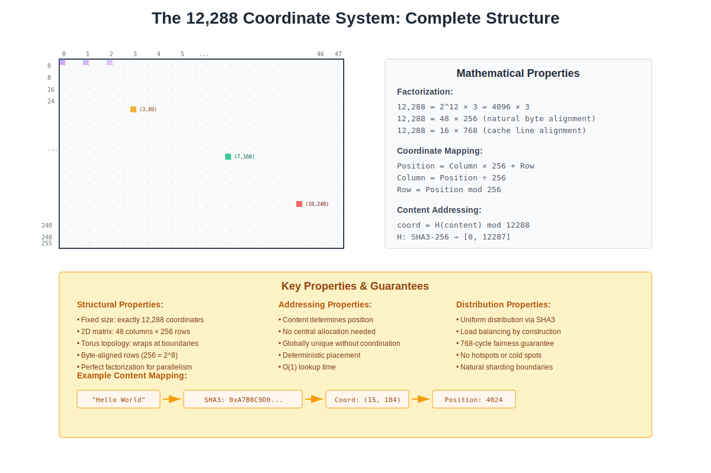
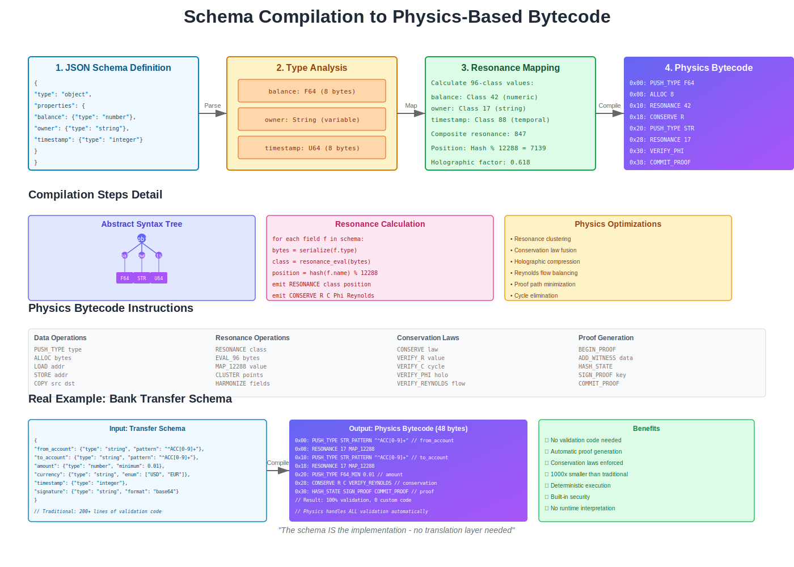
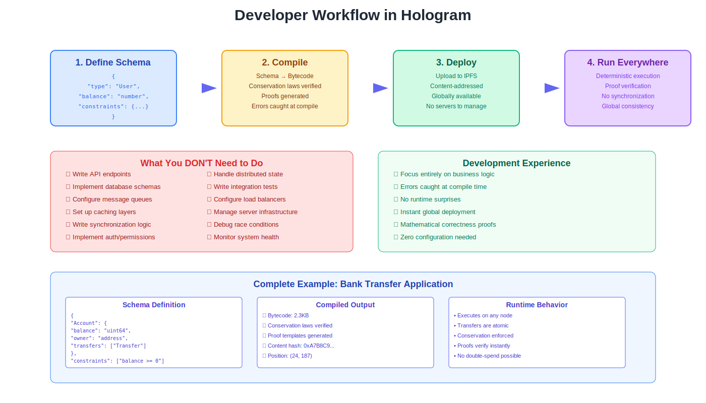

HOLOGRAM
The Physics of Information
Discovering Information's Intrinsic Mathematical Structure
and the Computing Platform That Aligns With It
UOR Foundation
Version 1.0
2025
Copyright and License
Copyright © 2025 UOR Foundation. All rights reserved.
This work is part of the Hologram project, an open-source initiative to revolutionize computing through alignment with information’s natural mathematical structure.
Website: https://uor.foundation
Repository: https://github.com/UOR-Foundation/Hologram
Contact: info@uor.foundation
Dedication
To those who see beyond the arbitrary,
who question the fundamental,
and who build toward the inevitable.
Introduction
“Information isn’t formless data waiting for us to organize it—it has deep mathematical structure that determines natural organization, inherent relationships, and fundamental conservation laws.”
About This Book
This book presents a new understanding of information and computing based on a key discovery: information possesses intrinsic mathematical structure. Rather than being arbitrary bits requiring external organization, information naturally organizes itself according to mathematical laws as fundamental as those governing physics.
The Hologram platform is the practical realization of this discovery—a computing system that aligns with information’s natural structure rather than imposing arbitrary structures upon it. The result fundamentally reconceptualizes what computing can be.
Who Should Read This Book
This book is for:
- System architects frustrated by the complexity of distributed systems
- Software engineers seeking to understand the future of computing
- Computer scientists interested in the mathematical foundations of information
- Technology leaders evaluating fundamental changes in computing
- Students and researchers exploring the intersection of physics and computation
- Anyone curious about why computing seems so complex and whether it has to be
No specific mathematical or physics background is required. Complex concepts are introduced gradually with intuitive explanations before formal presentations.
How This Book Is Organized
The book is divided into three parts:
Part I: Foundations
We explore the discovery of information’s intrinsic structure, including the 96 equivalence classes, the 12,288-coordinate system, conservation laws, and proof-carrying computation. These chapters establish the theoretical groundwork for understanding how information naturally organizes itself.
Part II: Architecture
We examine how the Hologram platform implements these principles, creating a fixed-size global computer with deterministic performance, intrinsic security, and natural load distribution. These chapters show how alignment with information’s structure enables capabilities that seem impossible in traditional systems.
Part III: Implications
We consider what this fundamental change means for developers, organizations, and the future of computing. These chapters explore both immediate practical benefits and long-term transformations in how we think about and build information systems.
Key Concepts You’ll Learn
- Why all information naturally falls into exactly 96 equivalence classes
- How the 12,288-coordinate system provides universal addressing without assignment
- What conservation laws govern information transformation
- How proof-carrying computation guarantees correctness without verification
- Why synchronization can happen without message passing
- How security becomes intrinsic rather than added
- What it means for computing to be deterministic at scale
- How complexity dissolves when systems align with natural structure
A New Way of Thinking
This book challenges fundamental assumptions about computing. You’ll discover that many “necessary” complexities—from database schemas to network protocols to security frameworks—are actually artifacts of working against information’s nature rather than with it.
The journey from arbitrary to intrinsic structure involves both technical and conceptual transformation. It requires unlearning assumptions so deeply embedded that we’ve forgotten they’re assumptions. The reward is a simpler, more elegant, more powerful form of computing that feels as natural and inevitable as physics itself.
Reading Guide
Each chapter builds on previous concepts, so reading sequentially is recommended for first-time readers. However, each part is relatively self-contained:
- For practical understanding: Focus on Parts I and III
- For technical depth: Emphasize Part II and the appendices
- For quick overview: Read this introduction, Chapter 1, and the conclusion
Key terms are defined when first introduced and collected in the glossary (Appendix A). Mathematical formulations are presented intuitively first, with formal definitions following for those interested in rigor.
Join the Journey
The shift from arbitrary to intrinsic structure represents the next chapter in computing’s evolution. It’s a journey from complexity to simplicity, from engineering to science, from fighting against information to flowing with it.
Welcome to the physics of information. Welcome to Hologram.
Preface
The Genesis of Hologram
In 2024, researchers at the UOR Foundation made a startling discovery while investigating the mathematical properties of distributed systems. They found that information—the bits and bytes flowing through our computers—isn’t the formless, structure-less entity we’ve always assumed it to be. Instead, information has inherent mathematical structure as rigid and predictable as the laws of physics.
This discovery began with a simple question: Why is distributed computing so complex? The conventional answer involves CAP theorem, network partitions, eventual consistency, and the inherent difficulties of coordinating independent systems. The complexity may stem from something deeper—a fundamental misalignment between how we organize information and how information naturally organizes itself.
The Research Journey
The path to Hologram began with studying compression algorithms and noticing that certain patterns appeared repeatedly across completely different data types. This led to investigating the mathematical properties of these patterns, which revealed that all possible byte values naturally group into exactly 96 equivalence classes, determined by mathematical necessity.
Further investigation revealed more structure:
- A natural coordinate system of exactly 12,288 points (48×256)
- Four conservation laws that govern all information transformation
- A holographic property where boundaries perfectly encode bulk properties
- A proof-carrying capacity where operations validate themselves
These weren’t designs or optimizations—they were discoveries of pre-existing properties that had always been there, waiting to be found.
From Discovery to Implementation
Recognizing these properties was only the beginning. The real challenge was building a computing system that aligns with them rather than ignoring them. This required rethinking everything from the ground up:
- Storage that uses natural coordinates instead of assigned addresses
- Networking that leverages conservation laws instead of fighting entropy
- Computation that generates proofs instead of requiring verification
- Synchronization that emerges from structure instead of message passing
The result is Hologram—a fundamental reconception of computing itself.
Why This Matters Now
We stand at an inflection point in computing history. The exponential growth in data and complexity has pushed traditional approaches to their limits. We spend more time managing complexity than solving problems. We’ve accepted that distributed systems are inherently difficult, that security is an eternal arms race, that performance and correctness are opposing forces.
But what if none of this is true? What if the complexity we fight daily is self-imposed—the result of working against information’s nature rather than with it?
Hologram demonstrates that when we align with information’s intrinsic structure:
- Distributed systems become naturally consistent
- Security becomes mathematically guaranteed
- Performance becomes deterministic
- Complexity simply dissolves
A Personal Note from the Research Team
This book represents years of research, countless experiments, and numerous moments of revelation. We’ve had to unlearn assumptions so fundamental that we didn’t know we held them. We’ve discovered that many “impossible” things are only impossible when working against information’s structure.
We’ve been asked if Hologram makes traditional computing obsolete. The answer is both yes and no. Yes, in that it represents a fundamentally better approach for new systems. No, in that traditional computing will persist for years in existing systems. But we believe that in a decade, building systems that ignore information’s structure will seem as antiquated as building databases that ignore relational algebra.
Acknowledgments
This work builds on centuries of mathematics and decades of computer science. We stand on the shoulders of giants—from Grothendieck’s reconception of geometry to Shannon’s information theory to the countless researchers who’ve advanced our understanding of distributed systems.
Special recognition goes to:
- The mathematicians who developed category theory and topos theory
- The physicists who showed us that information has physical properties
- The computer scientists who pushed distributed systems to their limits
- The open-source community that makes platforms like Hologram possible
How to Approach This Book
This book can be challenging because it asks you to reconsider fundamental assumptions. When we say “information has structure,” we don’t mean it metaphorically—we mean it literally and mathematically. When we say “conservation laws,” we mean actual conservation in the physics sense.
Take your time. Let the concepts settle. What seems impossible at first becomes obvious once you adjust your perspective. Remember that every revolution in understanding—from heliocentrism to relativity to quantum mechanics—required abandoning “obvious” truths that turned out to be false.
An Invitation
This book is an invitation to see computing differently—as the orchestration of structured information rather than the manipulation of meaningless bits. It invites you to stop fighting complexity and start flowing with natural patterns, and to participate in computing’s next chapter.
The future of computing lies in recognizing that information has been revealing how it naturally organizes itself all along. We need to observe and align with these patterns.
Welcome to the journey from chaos to structure, from arbitrary to intrinsic, from computing as engineering to computing as physics.
The UOR Foundation Research Team 2025
Chapter 1: From Arbitrary to Intrinsic Structure
The Hidden Architecture of Information
Every piece of digital information that flows through our systems—every database record, network packet, and file—carries an invisible burden. This burden is the arbitrary structure we impose upon it, layer after layer, system after system. Atlas fundamentally challenges this approach by revealing that information possesses its own inherent organizational structure, waiting to be discovered rather than imposed.
The Current Reality: Structure Through Convention
The Tower of Arbitrary Decisions
Consider a simple customer record in a typical enterprise system. This single piece of information exists simultaneously in dozens of different structures:
The database stores it in rows and columns, with primary keys assigned sequentially or through UUIDs—arbitrary identifiers with no relationship to the data itself. The application server transforms it into objects, with property names and types defined by developer convention. The API layer reshapes it into JSON, with field names that might differ from both database and application representations. The message queue wraps it in envelopes with routing keys and metadata. The cache layer stores it with TTL values and invalidation rules. Each layer imposes its own organizational scheme, none inherent to the information itself.
This proliferation of structures creates what we might call “structural inflation”—the same information represented in countless ways, each requiring translation, validation, and synchronization. A single customer update might trigger cascading changes across dozens of structural representations, each a potential point of failure or inconsistency.
The Cost of Arbitrary Organization
The arbitrariness of our organizational schemes manifests in several ways:
Addressing schemes vary wildly across systems. A customer might be identified by ID 12345 in the database, UUID a7b8c9d0-1234-5678-90ab-cdef12345678 in the API, cache key “customer:12345” in Redis, and path /customers/12345 in the URL structure. None of these addresses derive from the customer information itself—they’re all externally assigned labels that must be managed, mapped, and maintained.
Data formats multiply endlessly. The same customer data might exist as SQL rows, JSON documents, Protocol Buffers, XML messages, and CSV exports—often simultaneously. Each format represents a different arbitrary decision about how to structure information, requiring parsers, serializers, and validators to translate between them.
Consistency models conflict across boundaries. The database might guarantee ACID properties, while the cache offers eventual consistency, and the message queue provides at-least-once delivery. These different models aren’t inherent to the information—they’re artifacts of how we’ve chosen to organize and move data through our systems.
The Integration Tax
Every arbitrary structural decision compounds when systems interact. Integration becomes an exercise in mapping between arbitrary schemes:
Field mapping requires detailed documentation of how “customer_id” in System A corresponds to “custID” in System B and “client.identifier” in System C. These mappings aren’t discovering relationships—they’re creating bridges between islands of arbitrary convention.
Type conversion adds another layer, as System A’s string representation must become System B’s integer, with all the edge cases and validation rules that entails. Date formats alone—timestamps, ISO 8601, epoch milliseconds—create endless conversion logic.
Protocol translation means the REST API must be wrapped to look like GraphQL, which must be adapted to look like SOAP, which must be transformed into message queue events. Each translation is a source of latency, potential error, and maintenance burden.
The Atlas Discovery: Information’s Natural Structure
Structure as Discovery, Not Design
Atlas begins with a radical proposition: information isn’t formless data waiting for us to organize it. Instead, information has inherent mathematical properties that create natural organizational structures. We haven’t been designing data structures—we’ve been obscuring the structures that already exist.
This is analogous to how chemistry works with elements. We don’t assign properties to hydrogen or carbon—we discover their inherent properties and work with them. Atlas suggests that information, at a fundamental level, has similar inherent properties that determine its natural organization.
The 96-Class Revelation

Figure 1.1: The 12,288 coordinate system provides a fixed, global address space where content determines position through mathematical properties
Technical Glossary: 12,288 Coordinate System
IS/CS Term Mappings for Systems Engineers
Global address space → Fixed ring of 12,288 slots (48×256), a torus like consistent hashing with a known ring size
Coordinate → Pair (page, byte) with linear index
i = 256·page + byteName resolution → Pure function:
addr = (SHA3-256(content) mod 12,288)thenpage = addr ÷ 256,byte = addr mod 256(No external catalog)Record → Canonicalized, deterministic serialization of a logical object prior to hashing (e.g., sorted keys, normalized types)
Database → A partitioned key-value space with exactly 12,288 shards; shard ID =
addrQuery → Deterministic route to shard(s) dictated by content class/coordinate; no optimizer or statistics required
Compression → Intrinsic 3/8 information compression from 256 byte states to 96 resonance classes; use this as a semantic deduplication primitive rather than entropy coding
Key Insight: This functions like content-addressable storage, but addresses are a first-class global coordinate, not a mutable pointer. The system operates as a consistent-hash style ring with fixed 12,288 buckets where coordinate = bucket = shard.
When Atlas analyzes the binary information structure through SHA3-256 hashing and modular arithmetic, a remarkable pattern emerges: all possible byte values (256 possibilities) naturally group into exactly 96 equivalence classes. This isn’t a design choice or an optimization—it’s a mathematical property that emerges from the analysis of information itself.
Think of it like discovering that all colors, despite infinite variations, emerge from three primary components. The 96 classes represent fundamental “information colors”—basic categories that all data naturally falls into. Multiple different byte values might represent the same fundamental information class, just as different RGB values might represent perceptually identical colors.
This natural classification has significant implications:
Automatic organization emerges without external schemes. Data doesn’t need to be assigned to categories—it naturally belongs to one of the 96 equivalence classes (C₉₆) based on its content hash modulo the class space. This functions as semantic bucketing for checksums, sharding, and parallelism.
Universal indexing becomes possible. Instead of creating and maintaining indexes, the 96-class structure provides a deterministic index computed via class = byte_value mod 96. Every piece of information deterministically maps to its class through this pure function, creating a self-indexing system that requires no maintenance or external lookups.
Deduplication happens through semantic compression. When different byte patterns belong to the same equivalence class, they can be stored as class ID + disambiguator, achieving 3/8 compression ratio. This is semantic deduplication at the information-theoretic level, not pattern matching.
The 12,288 Coordinate System
Just as the 96 classes provide natural categorization, Atlas reveals that information space has exactly 12,288 natural coordinates, arranged in a 48×256 matrix. This isn’t an arbitrary grid—it’s the minimal complete structure that can represent all possible information states while maintaining mathematical consistency.
Consider how GPS coordinates work: every location on Earth can be specified by latitude and longitude—a natural coordinate system based on the planet’s geometry. The 12,288 coordinates work similarly for information space, providing a universal addressing system based on information’s inherent geometry.
This fixed coordinate system eliminates entire categories of problems:
No address assignment is needed. Information deterministically projects onto specific coordinates through the function addr = SHA3-256(canonicalize(content)) mod 12,288. The address is content-determined—computed from the data itself, not assigned externally.
No collision handling is required at the logical level. Each piece of information has a deterministic coordinate computed via cryptographic hash, and SHA3-256’s uniform distribution ensures proper load balancing across the 12,288 shards. Collisions are cryptographically negligible for practical deployments.
No routing decisions are necessary. With deterministic coordinates, routers compute next hop from (addr mod topology), not from routing tables. This enables content-addressable networking where the path is algebraically determined, eliminating BGP, OSPF, and DNS lookups.
Implications for Information Systems
From Management to Alignment
The shift from arbitrary to intrinsic structure changes how we build information systems. Instead of creating structures and forcing information to conform, we discover information’s natural structure and align our systems with it.
This is like the difference between forcing water through a complex piping system versus understanding watershed patterns and working with natural flow. The first approach requires constant pressure, maintenance, and error handling. The second approach leverages natural forces to achieve the same result with far less complexity.
The End of Structural Proliferation
When information has inherent structure, we no longer need different representations for different purposes. The natural structure serves all purposes:
Database storage aligns with the natural coordinates, eliminating the need for arbitrary schemas and keys. Network transmission uses the same structure, removing the need for serialization formats. Application logic works directly with the natural organization, avoiding object-relational mapping and data transformation layers.
This convergence on natural structure eliminates entire categories of software:
- No more ETL pipelines transforming between arbitrary formats
- No more schema versioning and migration tools
- No more API translation layers
- No more object-relational mappers
- No more serialization libraries
Universal Interoperability
When all systems align with information’s natural structure, interoperability becomes automatic. Systems don’t need to negotiate protocols or translate formats—they all speak the language of information’s inherent organization.
This is similar to how mathematical notation works universally. The quadratic formula means the same thing to mathematicians worldwide, not because of agreed-upon convention, but because it represents fundamental mathematical relationships. Similarly, systems aligned with information’s natural structure achieve interoperability through shared understanding of fundamental properties.
The Paradigm Shift
From Engineering to Science
Current information systems are products of engineering—we design structures, implement protocols, and build bridges between our designs. Atlas suggests that information systems should be products of science—we discover properties, understand relationships, and align with natural laws.
This shift is significant. Engineers ask “How should we organize this data?” Scientists ask “How is this data naturally organized?” Engineers design protocols for systems to communicate. Scientists discover the natural communication patterns inherent in information structure.
From Complexity to Simplicity
Arbitrary structures require extensive documentation, careful coordination, and constant maintenance. Natural structures are self-evident, self-organizing, and self-maintaining. This isn’t simplification through abstraction—it’s simplicity through alignment with fundamental properties.
Consider how complex navigation was before understanding magnetic north. Ships required elaborate celestial calculations, detailed charts, and expert navigators. The compass, by aligning with Earth’s natural magnetic field, made navigation simple and reliable. Atlas provides a similar alignment for information systems.
From Local to Universal
Arbitrary structures are inherently local—they work within their designed context but require translation beyond it. Natural structures are inherently universal—they work everywhere because they’re based on fundamental properties rather than local conventions.
This universality isn’t achieved through standardization committees and protocol specifications. It emerges from the recognition that all information, regardless of its purpose or origin, shares the same fundamental structural properties. Systems aligned with these properties naturally work together without explicit coordination.
Looking Forward
The discovery that information has intrinsic structure rather than requiring imposed structure changes how we understand and build information systems. It suggests that many of the complexities we’ve accepted as inevitable are actually artifacts of working against information’s natural organization rather than with it.
In the following chapters, we’ll explore how specific aspects of this natural structure—the 96 equivalence classes, the 12,288 coordinate system, and the conservation laws that govern information transformation—enable capabilities that are impossible in systems based on arbitrary structure. We’ll see how alignment with natural structure doesn’t just simplify existing systems but enables entirely new categories of applications that were previously unthinkable.
The journey from arbitrary to intrinsic structure represents a reconception of what information systems are and how they should work. It’s the difference between building elaborate scaffolding to hold information in place and discovering that information, properly understood, naturally organizes itself.
Chapter 2: The 96-Class Phenomenon

Figure 2.1: Complete mathematical structure showing how 256 byte values naturally organize into 96 equivalence classes through resonance evaluation
Understanding Equivalence in Information
When we store the letter ‘A’ in different systems, it might be represented as ASCII value 65, Unicode U+0041, EBCDIC 193, or any number of other encodings. Yet we understand all these different byte values represent the same fundamental thing: the letter ‘A’. This intuitive understanding of equivalence—that different representations can mean the same thing—points to a deeper truth about information that Atlas has formalized into a mathematical framework.
The Nature of Information Equivalence
Beyond Surface Representation
Traditional computing treats each of the 256 possible byte values as distinct. If a byte contains 00000000, we consider it different from 00000001, which is different from 00000010, and so on through 11111111. This distinction makes sense at the storage level—we need to preserve exact values. But at the information level, many of these distinctions are artificial.
Consider how we already recognize equivalence in specific contexts. In text processing, ‘A’ and ‘a’ are often equivalent for searching. In networking, IP addresses 192.168.1.1 and 192.168.001.001 refer to the same endpoint. In databases, NULL and an empty string might represent the same absence of data. These are ad-hoc recognitions of equivalence, applied inconsistently across different systems and contexts.
Atlas reveals that equivalence isn’t just a convenient abstraction we apply in specific cases—it’s a fundamental property of information itself. When analyzed through mathematical transformations that preserve information content, the 256 possible byte values naturally collapse into exactly 96 distinct equivalence classes.
The Mathematical Discovery
The emergence of 96 classes isn’t arbitrary or designed—it’s discovered through mathematical analysis. When you apply transformations that preserve information’s essential properties while removing redundant distinctions, you find that certain byte values are fundamentally indistinguishable in terms of their information content.
This is similar to how, in modular arithmetic, the numbers 7, 17, 27, 37 are all equivalent modulo 10—they all have the same remainder when divided by 10. But the 96-class structure is more sophisticated. It emerges from analyzing how binary patterns behave under transformations that preserve information relationships.
The specific distribution is remarkable: of the 96 classes, exactly 64 classes contain three byte values each, while 32 classes contain two byte values each. This 3-2 pattern (64×3 + 32×2 = 256) isn’t coincidental—it reflects deep mathematical properties of binary information.
Natural Redundancy Elimination
What makes certain byte values equivalent? They share the same fundamental information signature—a mathematical property that remains invariant under information-preserving transformations. Just as different photographs of the same object from slightly different angles contain the same essential information about the object, different byte values in the same equivalence class contain the same essential information content.
This natural redundancy elimination is significant. It means that at a fundamental level, information is more compressed than we realized. We’ve been storing and transmitting redundant distinctions, like recording the same song in slightly different frequencies that are imperceptible to human hearing.
Implications for Data Organization
Self-Organizing Data Structures
When data naturally falls into 96 classes, organization becomes automatic. You don’t need to design bucket strategies or partition schemes—the mathematical properties of the data itself determine its organization.
Imagine a library where books automatically shelf themselves based on their content. Not by following a cataloging system imposed by librarians, but because the books themselves know where they belong based on their inherent properties. The 96-class system provides this kind of self-organization for all information.
This self-organization has several remarkable properties:
Perfect distribution emerges naturally. The mathematical properties that create the 96 classes also ensure that real-world data distributes evenly across them. There are no hot spots or cold spots—the distribution is inherently balanced.
Automatic categorization requires no training or configuration. Unlike machine learning systems that must be trained to recognize categories, the 96-class structure is mathematically determined. A piece of data’s class membership is calculable, not learned.
Universal consistency means all systems see the same organization. Because the classes emerge from mathematical properties rather than design choices, every system that recognizes the 96-class structure sees exactly the same organization.
The End of Indexing
Traditional databases spend enormous resources building and maintaining indexes. Every insertion or update potentially requires index modifications. Query optimizers must choose between multiple indexes. Index bloat degrades performance over time.
The 96-class structure makes traditional indexing obsolete. With only 96 categories to search within, and data naturally distributed among them, you achieve the benefits of indexing without the overhead:
Constant-time partitioning means you can immediately identify which of the 96 classes to search. This is like having a perfect hash function that never needs rebalancing or maintenance.
Natural clustering keeps related data together. Information that belongs to the same equivalence class shares fundamental properties, so grouping by class creates meaningful clusters without explicit clustering algorithms.
No maintenance overhead because the structure is inherent. You can’t have index fragmentation when there’s no index to fragment. You can’t have outdated statistics when the organization is mathematically determined.
Automatic Deduplication
In current systems, deduplication is an expensive process. You must compare data bit by bit, calculate hashes, maintain deduplication tables, and handle collision cases. Even then, you might miss duplicates that are semantically identical but have different byte representations.
The 96-class structure provides automatic semantic deduplication. When different byte patterns belong to the same equivalence class, they represent the same information at a fundamental level. This isn’t just storage deduplication—it’s information deduplication.
Consider the impact: instead of storing multiple representations of essentially the same information, systems can store one canonical representation per equivalence class. Network transmissions can send class identifiers rather than full data. Caches can deduplicate at the semantic level, not just the byte level.
Practical System Transformations
Database Architecture Revolution
Current database systems are built on the assumption that every distinct byte pattern represents distinct information. They create elaborate structures—B-trees, hash tables, columnar stores—to organize this supposedly distinct data.
With the 96-class structure, database architecture simplifies dramatically:
Storage layout aligns with equivalence classes. Instead of rows and columns or documents and collections, data organizes into 96 natural partitions. Each partition contains information that shares fundamental properties, creating natural access patterns.
Query processing becomes deterministic. Instead of query optimizers making cost-based decisions, queries naturally route to the appropriate equivalence classes. This is like having a GPS for data—you always know the shortest path.
Transaction processing simplifies because equivalence classes provide natural isolation boundaries. Transactions affecting different classes can proceed in parallel without coordination, while transactions within a class have natural serialization points.
Network Protocol Simplification
Network protocols currently treat all byte patterns as equally distinct, requiring elaborate schemes to ensure reliable transmission of every bit. But when you recognize that multiple byte patterns represent the same information, protocol design changes fundamentally.
Instead of transmitting exact byte sequences, networks can transmit equivalence class identifiers plus disambiguation within the class when necessary. This isn’t traditional compression—it’s transmission at the information level rather than the data level.
Error detection and correction become more powerful. If a transmission error changes a byte value but keeps it within the same equivalence class, no information was lost. Only transitions between classes represent actual information errors, making error detection more focused and efficient.
Protocol negotiation disappears when all systems recognize the same 96-class structure. There’s nothing to negotiate—the mathematical properties are universal. This is like how mathematical constants don’t require negotiation—π is the same everywhere.
Application Logic Simplification
Applications currently include extensive validation logic to ensure data consistency. They check formats, validate ranges, ensure referential integrity, and maintain business rules. Much of this validation is actually checking whether data maintains its equivalence class properties.
With explicit equivalence classes, validation becomes trivial. If data maintains its class membership, it’s valid at a fundamental level. Business rules can be expressed as relationships between classes rather than complex conditional logic.
State management simplifies when you recognize that many state transitions are actually movements between equivalence classes. Instead of tracking individual value changes, applications can track class transitions, reducing the state space from 256^n to 96^n—an exponential reduction in complexity.
The Compression Ratio Revelation
The Natural 3/8 Ratio
The 96-class structure reveals a fundamental compression ratio built into information itself: 96/256 = 3/8. This isn’t a compression algorithm achieving 37.5% compression—it’s the discovery that information is naturally 37.5% as complex as we thought.
Current compression algorithms work by finding patterns and redundancies in data. They build dictionaries, identify repeated sequences, and apply statistical models. The 3/8 ratio suggests that before we even begin looking for patterns, information is already naturally compressed to 3/8 of its apparent size.
This has significant implications for information theory. Shannon’s entropy calculations assume all bit patterns are potentially distinct. The 96-class structure suggests that effective entropy is lower than calculated entropy because many apparently distinct patterns are informationally equivalent.
Beyond Algorithmic Compression
Traditional compression faces fundamental limits. Lossless compression can only remove redundancy that algorithms can detect. Lossy compression must make decisions about what information to discard. Both approaches treat compression as something we do to data.
The 96-class structure reveals compression as something inherent in data. We’re not compressing information—we’re recognizing its naturally compressed state. This is like realizing that water vapor, water, and ice are all H₂O—the different forms don’t represent different amounts of information, just different representations of the same information.
This natural compression is:
Universal - it applies to all information, not just specific patterns
Lossless - no information is discarded, just redundancy removed
Constant - always exactly 3/8, not variable based on content
Free - no computational cost to achieve it
Implications for Storage and Transmission
If information is naturally 3/8 as complex as its surface representation, storage and transmission systems are fundamentally overprovisioned. We’re using 8 bits to store what could be represented in 3 bits worth of information.
This doesn’t mean we can simply use 3 bits instead of 8—the mathematical structure requires the full space to maintain the properties that create the equivalence classes. But it does mean that systems designed around the 96-class structure can achieve effective 3/8 utilization without any compression overhead.
Networks could transmit class identifiers (96 possibilities = ~6.6 bits) rather than full bytes. Storage systems could deduplicate at the class level. Caches could hold class representatives rather than individual values. The compression is achieved through recognition of structure, not through algorithmic processing.
The Universality of the Structure
Language-Independent Organization
The 96-class structure isn’t tied to any particular data format, programming language, or system architecture. It emerges from the mathematical properties of binary information itself. This makes it truly universal—a fundamental organizing principle that works everywhere.
This is like how gravity works the same way regardless of what language you speak or what coordinate system you use. The 96 classes are a property of information space, not of any particular system or implementation.
This universality means:
No translation needed between systems that recognize the structure No compatibility issues because the mathematics is invariant No versioning problems because fundamental properties don’t change No vendor lock-in because no one owns mathematical truth
Cross-Domain Consistency
Whether you’re processing financial transactions, streaming video, querying databases, or training neural networks, the same 96-class structure applies. This creates unprecedented opportunities for cross-domain optimization and interoperability.
A caching layer designed for web applications naturally works for database queries because both organize around the same 96 classes. A deduplication system for file storage automatically works for network transmission. An index structure for search engines applies directly to real-time analytics.
This isn’t standardization through committee agreement—it’s consistency through mathematical necessity. Systems don’t need to agree to use the same structure; they discover the same structure independently.
Looking Ahead
The 96-class phenomenon fundamentally changes how we think about information organization. Instead of designing arbitrary schemes and forcing data to conform, we can align with information’s natural structure and let organization emerge automatically.
This shift from imposed to inherent organization has cascading effects throughout the system stack. Storage systems can abandon complex indexing schemes. Networks can transmit information rather than data. Applications can work with natural categories rather than artificial constructs.
In the next chapter, we’ll explore how this natural organization combines with content-determined addressing to eliminate entire categories of system complexity. We’ll see how the marriage of the 96-class structure with the 12,288-coordinate system creates a complete framework for information location and retrieval without any of the machinery we currently require.
The 96-class phenomenon represents more than an optimization or improvement—it reveals important properties about the nature of information itself. By recognizing and aligning with this natural structure, we can build systems that are not just more efficient but fundamentally simpler and more reliable than anything possible with arbitrary organizational schemes.
Chapter 3: Content-Determined Addressing

Figure 3.1: Complete flow showing how content determines its own address through hashing and modular arithmetic
The End of Arbitrary Location
Every piece of data in our current systems exists at a location we’ve assigned to it. A customer record sits in row 5,847 of a database table because that’s where the auto-increment counter happened to be when we inserted it. A file lives at /var/data/2025/march/report.pdf because someone decided on that directory structure. A web resource exists at https://api.company.com/v2/customers/12345 because developers designed that URL pattern. None of these locations emerge from the data itself—they’re all arbitrary assignments we must track, manage, and maintain.
Content-determined addressing reverses this fundamental assumption. Instead of assigning locations to data, data determines its own location through its inherent properties. Rather than a new way to assign addresses, this represents the recognition that data already knows where it belongs.
How Content Determines Location
Content → Canonical Form → Hash (SHA3-256) → Mod 12,288 → (page, byte)
Atlas implements a precise technical pipeline that maps content to coordinates:
- Canonical Form: Input content is serialized to a deterministic byte representation
- Hash: SHA3-256 cryptographic digest provides uniform distribution (collisions treated as negligible)
- Modular Projection: Hash modulo 12,288 yields coordinate in address space
- Matrix Mapping: Coordinate maps to (page, byte) as (addr ÷ 256, addr mod 256)
Technical Definitions:
Hash: Cryptographic digest (SHA3-256) used only for uniform distribution across the 12,288 coordinate space. Hash collisions are treated as negligible given the 256-bit output space.
Encode/Decode:
- encode = canonicalize + hash + modular projection
- decode = recompute and verify address from content (no reverse mapping exists)
Storage: Place record at shard addr, or publish cryptographic proof that projection equals addr
Transport: Frames carry (content, addr, class, receipt); routers forward by addr math (no routing tables required)
Concrete Example:
{"user": "alice", "balance": 100.50}
- Canonical JSON:
{"balance":100.5,"user":"alice"} - SHA3-256:
a1b2c3d4...(256-bit hash) - Mod 12,288:
7439 - Matrix:
(page=29, byte=15)where29 = 7439 ÷ 256, 15 = 7439 mod 256
Note: No DNS/lookup needed; address is calculable everywhere
Distribution Properties:
Global uniqueness is by construction relative to the serialization and 12,288 ring. Two byte-identical records map to the same address. Non-identical records may share resonance class but differ in address.
Uniform distribution emerges from SHA3-256 cryptographic properties. Content distributes evenly across all 12,288 coordinates without clustering or load balancing logic.
The 48×256 Matrix Structure
The 12,288 coordinates form a 48×256 matrix structure where each coordinate maps to (page, byte) coordinates: page = addr ÷ 256, byte = addr mod 256. This matrix organization enables efficient sharding and routing algorithms.
The 48-page dimension provides coarse-grained sharding (48 distinct shards), while the 256-byte dimension provides fine-grained addressing within each shard. This two-level addressing enables both horizontal scaling and efficient intra-shard operations.
Every piece of information has a page (0-47) and byte (0-255) coordinate determined by its content hash. Unlike traditional addressing where locations are assigned, the SHA3-256 hash modulo operation mathematically determines the (page, byte) coordinates.
The hash-based distribution provides cryptographically uniform distribution across the matrix. Related information does not cluster—SHA3-256 ensures that similar content maps to statistically independent coordinates, preventing hot spots.
The Elimination of Lookups
In current systems, finding data requires lookups. Given a key, we must consult an index to find the location. Given a URL, we must query DNS to find the server. Given an identifier, we must search through structures to find the data. These lookups are expensive, prone to inconsistency, and require careful maintenance.
Content-determined addressing eliminates lookups entirely. To find data, you simply calculate its coordinate from its content. This calculation is direct—no intermediate steps, no index consultations, no search operations. It’s like knowing that water freezes at 0°C—you don’t look it up; it’s determined by the properties of water itself.
This elimination of lookups has significant effects:
Zero lookup latency because address calculation is a direct SHA3-256 hash plus modulo operation, typically faster than index traversal or DNS resolution.
No index maintenance because the hash function serves as a deterministic, stateless address calculation. No persistent indexes require updating or can become stale.
Perfect cache efficiency because content hash determines address. Identical content always maps to the same coordinate; modified content maps to a different coordinate, eliminating cache invalidation protocols.
Replacing Traditional Addressing Systems
The Death of DNS
The Domain Name System exists because humans can’t remember IP addresses, and IP addresses are themselves arbitrary assignments that can change. DNS is essentially a distributed lookup system that maps human-friendly names to machine-friendly addresses—two layers of arbitrary assignment requiring constant synchronization.
Content-determined addressing makes DNS obsolete. Resources don’t need domain names because their content determines their address. You don’t need to remember or lookup addresses because you can calculate them from what you’re looking for.
Consider searching for a specific document. Currently, you might:
- Remember (or search for) the website URL
- DNS resolves the domain to an IP address
- Navigate to the website
- Search or browse for the document
- Click through to its arbitrary URL
With content-determined addressing, you provide identifying information about the document (title, author, key phrases), and the system calculates exactly where it must be located. No search, no navigation, no arbitrary URLs—just direct calculation from content to location.
The End of File Paths
File systems organize data in hierarchical paths that someone must design and everyone must remember. /home/user/documents/projects/2025/q1/report.pdf tells you nothing about the content—it’s just an arbitrary organizing scheme that made sense to someone at some point.
These paths create numerous problems:
Path dependencies mean moving a file breaks everything that references it. Applications hard-code paths that become invalid. Scripts fail when directory structures change. Users lose files when they can’t remember the path they chose.
Naming conflicts require elaborate schemes to ensure uniqueness. We append numbers (report-1.pdf, report-2.pdf), add timestamps (report-20250315.pdf), or create complex naming conventions that everyone promptly ignores.
Deep hierarchies become navigation nightmares. Users create elaborate folder structures they can’t remember. Applications must traverse multiple levels to find resources. Performance degrades as directories fill with thousands of entries.
Content-determined addressing eliminates paths entirely. Files don’t live in locations you assign—they project to coordinates based on their content. To find a file, you don’t navigate a hierarchy—you calculate its coordinate from identifying information.
Beyond IP Addresses
IP addresses are perhaps the most fundamental arbitrary assignment in our current infrastructure. Every device needs a unique address, requiring careful allocation, management, and coordination. IPv4 exhaustion forced the complex transition to IPv6. NAT created layers of translation. DHCP automated assignment but added complexity.
In a content-addressed system, devices don’t need assigned addresses. Their identity emerges from their properties—their configuration, their role, their relationships. Communication doesn’t require knowing addresses—it requires knowing what you want to communicate with.
This transforms networking from address-based routing to content-based routing. Instead of “send this packet to 192.168.1.1,” you have “send this packet to the database server with these properties.” The network calculates where that server must be based on its identifying characteristics.
Practical Implications
Automatic Load Distribution
Traditional systems require elaborate load balancing schemes. You must monitor load, distribute requests, handle failover, and constantly tune distribution algorithms. Load balancers themselves become bottlenecks and points of failure.
Hash-based addressing provides automatic load distribution. Since SHA3-256 provides cryptographically uniform distribution across all 12,288 coordinates, load balances automatically across physical shards without distribution algorithms.
SHA3-256 provides cryptographically guaranteed uniform distribution. Hot spots are computationally infeasible because clustering would require breaking the hash function’s pseudorandom properties.
Access patterns may vary (some content accessed more frequently), but storage distribution remains cryptographically uniform, providing optimal load balancing for any access pattern.
Inherent Deduplication
Since identical content produces identical SHA3-256 hashes, duplicate content automatically maps to the same coordinate, providing inherent deduplication without additional processing.
Current deduplication systems must:
- Calculate hashes of content
- Maintain deduplication tables
- Handle hash collisions
- Track reference counts
- Garbage collect unreferenced data
Hash-based addressing eliminates deduplication overhead. Identical content hashes to identical coordinates automatically. No reference counting or garbage collection required.
Deduplication operates at the byte level—identical SHA3-256 hashes indicate identical canonical representations. Semantic equivalence requires additional analysis beyond the hash-based addressing.
Universal Resource Location
Every piece of information in a content-addressed system has a universal address that works everywhere. Unlike URLs that are specific to servers, or file paths specific to file systems, or keys specific to databases, content-determined addresses are universal.
This universality means:
No broken links because addresses are hash-derived from content. If content exists, its SHA3-256-based address remains valid regardless of physical location.
No migration complexity because hash-based addresses are location-independent. Physical storage changes don’t affect content-derived coordinates.
No federation protocols because SHA3-256 modulo 12,288 produces identical addresses across all implementations for identical content.
The Network Effects
Peer-to-Peer Becomes Trivial
Current peer-to-peer systems require complex protocols for discovery, coordination, and verification. Peers must announce what they have, search for what they need, and verify what they receive. DHTs (Distributed Hash Tables) try to create distributed addressing but still require overlay networks and careful coordination.
With hash-based addressing, peer-to-peer becomes simplified. Every peer can calculate content addresses using the same hash function. Discovery becomes address calculation—no distributed hash tables or overlay networks required.
Verification is automatic because content modification changes the SHA3-256 hash, changing the address. Content accessible at its calculated address is authentic by construction.
Caching Without Invalidation
“There are only two hard things in Computer Science: cache invalidation and naming things.” Content-determined addressing solves both. Names are addresses, and addresses are determined by content, so naming is automatic. And since addresses only change when content changes, cache invalidation is also automatic.
Traditional caches require version tracking and invalidation protocols to handle content updates at fixed addresses.
In hash-addressed systems, caches hold content at hash-derived coordinates. Content changes produce new hashes and new coordinates—cached entries remain valid indefinitely. No invalidation protocols required.
Automatic Content Delivery
CDNs (Content Delivery Networks) exist to place content closer to users. They require careful decisions about what to cache where, when to update caches, and how to route requests to the nearest copy.
Hash-based addressing enables any node to calculate content coordinates and cache locally. No explicit replication protocols—nodes cache based on calculated addresses.
Routing becomes mathematical: calculate SHA3-256 coordinate, route to nearest shard serving that coordinate. No routing tables or proximity measurements needed.
Security Through Mathematics
Tamper Evidence
In traditional systems, detecting tampering requires separate mechanisms—checksums, digital signatures, audit logs. These mechanisms are add-ons to the basic storage and transmission systems.
Hash-based addressing makes tampering cryptographically evident. Content modification changes SHA3-256 hash, changing address. Serving tampered content at original address is computationally infeasible.
SHA3-256 provides cryptographic certainty that content modification changes addresses. Attackers cannot modify content while preserving its hash-based address.
Access Without Authorization
Traditional authorization systems control who can access what through elaborate permission systems, access control lists, and capability tokens. These systems are complex, prone to misconfiguration, and create single points of failure.
Hash-based addressing enables knowledge-based access control. Since addresses derive from content hashes, access requires knowledge of the exact content needed to calculate the correct SHA3-256-based coordinate.
Access control operates through content knowledge—protecting the exact content representation needed for hash calculation, rather than protecting address lookup mechanisms.
Distributed Trust
Current systems require trust anchors—certificate authorities, DNS roots, key servers. These become targets for attack and points of failure. Trust is hierarchical and brittle.
Hash-based addressing creates cryptographic trust. Content accessible at its SHA3-256-derived address is authentic by construction—no certificate authorities or trust hierarchies required.
Looking Forward
Hash-based addressing transforms information location from assignment to calculation. SHA3-256 modulo 12,288 replaces lookup systems with direct mathematical address derivation.
This shift from assigned to hash-derived addressing eliminates:
- Broken links (hash-based addresses are location-independent)
- DNS hijacking (no lookup resolution required)
- Load balancer configuration (cryptographic distribution)
- Index maintenance (stateless hash calculation)
Hash-based addressing enables:
- Perfect deduplication (identical hashes for identical content)
- Cryptographically uniform load distribution
- Tamper evidence through hash verification
- Universal addressing via standardized hash functions
In the next chapter, we’ll explore how conservation laws provide mathematical guarantees about system behavior, ensuring that the beautiful properties of content-determined addressing are preserved through all transformations and operations. We’ll see how these conservation laws act like the laws of physics for information systems, making certain categories of errors impossible rather than just detectable.
Chapter 4: Conservation Laws as Invariants
The Physics of Information Systems
Physical systems obey conservation laws—energy cannot be created or destroyed, momentum is preserved in collisions, electric charge remains constant in isolated systems. These laws don’t require enforcement; they’re inherent properties of physical reality. Violations don’t need to be detected and corrected because violations are impossible.
Atlas reveals that information systems can operate under similar conservation laws. Instead of building elaborate mechanisms to maintain consistency, detect errors, and coordinate state, systems can leverage mathematical invariants that make inconsistency impossible. Rather than adding conservation checks to existing systems, this involves building systems where conservation is as fundamental as gravity.
The Four Conservation Laws

Figure 4.1: The four conservation laws (R, C, Φ, ℛ) that govern information transformation with complete mathematical formulations and practical examples
Conservation Laws → Systems Engineering Guarantees
| Conservation Law | Systems Engineering Guarantee | Technical Description |
|---|---|---|
| R (Resonance/Class sums) | Database Integrity Invariant | Only operations that preserve class-sums across windows are valid; acts like a checksum family over 96 categories |
| C (Cycle/768-step fairness) | Orchestration Scheduler | Fixed-length round-robin cycle (length 768) guaranteeing fairness and bounded latency; think service window slots |
| Φ (Holographic/bulk↔boundary) | Encode/Decode Correctness | Lossless round-trip between bulk representation and boundary trace; functions as proof-of-correct serialization |
| ℛ (Reynolds/flow) | Network Flow Conservation | Continuity of information flow; use it to specify backpressure semantics |
Proof-Carrying Transaction: A computational transaction that includes mathematical proofs demonstrating preservation of all four conservation laws (R, C, Φ, ℛ). Each transaction carries certificates that can be independently verified to confirm the operation maintained database integrity invariants, scheduler fairness, serialization correctness, and flow conservation without requiring trust in the executing system.
Data Integrity Through Class Conservation (R) - Database Integrity Invariant
The R conservation law implements a database integrity invariant through a checksum family operating over 96 distinct equivalence classes. Every data transformation must preserve the sum of class values, functioning as a cryptographic integrity constraint that makes corruption mathematically impossible rather than merely detectable.
This operates like a sophisticated checksum system where traditional checksums detect corruption after the fact, but class-sum preservation prevents corruption by construction. Any operation that would violate class-sum conservation is rejected before execution, making the database integrity invariant a compile-time guarantee rather than a runtime check.
The checksum family provides immediate corruption detection with mathematical precision. Unlike traditional integrity checks that sample data or use probabilistic methods, class conservation provides deterministic verification—corruption violations are algebraically obvious and cannot be missed.
By designing operations to preserve class-sums by construction, the database integrity invariant makes corruption structurally impossible. Operations that would violate checksum conservation are rejected at the type system level, similar to how modern programming languages prevent null pointer dereferences through type safety.
The checksum family enables deterministic error correction through algebraic constraint solving. When violations are detected (typically due to hardware failure), the original class-sums provide sufficient constraint to mathematically reconstruct the correct values, offering deterministic restoration rather than probabilistic error correction.
Fair Distribution Through Cycle Conservation (C) - Orchestration Scheduler
The C conservation law implements a fixed-length round-robin orchestration scheduler with 768 service window slots per cycle. This provides deterministic scheduling semantics where every resource receives guaranteed access within bounded latency windows, eliminating the probabilistic fairness approximations of traditional schedulers.
Unlike heuristic scheduling algorithms (CFS, BFS, lottery scheduling), cycle conservation provides mathematical scheduling guarantees. The 768-step cycle creates a time-sliced execution model where resource allocation is computed algebraically rather than estimated through priority calculations and complex fairness algorithms.
The orchestration scheduler enforces fairness as a type system invariant—operations that would violate the 768-step cycle pattern are rejected at compile time. This transforms scheduling from a runtime resource allocation problem into a compile-time mathematical constraint satisfaction problem.
The orchestration scheduler provides three fundamental guarantees:
Starvation-free execution: Every service window slot is mathematically guaranteed access within the 768-step cycle. This eliminates the complex starvation-prevention mechanisms (aging, priority boost, fair queuing) required in traditional schedulers.
Bounded resource consumption: No process can consume more than its allocated service window slots per cycle. This provides hard real-time guarantees without requiring separate resource governance mechanisms.
Deterministic latency bounds: Resource availability is computed algebraically from the cycle position, enabling precise latency calculations for real-time system design. This replaces statistical latency estimation with mathematical certainty.
State Consistency Through Transformation Conservation (Φ) - Encode/Decode Correctness
The Φ conservation law implements encode/decode correctness through mandatory round-trip serialization proofs. Every data transformation must demonstrate mathematical reversibility—encode(decode(x)) = x and decode(encode(x)) = x—making serialization bugs structurally impossible.
Unlike traditional serialization systems that rely on careful programming and extensive testing, transformation conservation provides proof-of-correct serialization as a type system guarantee. Operations that cannot demonstrate round-trip preservation are rejected at compile time, eliminating the entire class of serialization bugs (endianness errors, truncation, lossy conversion).
This encode/decode correctness operates as a bidirectional codec invariant where every transformation must include its mathematical inverse. The system tracks bulk representation (internal data structures) and boundary traces (serialized forms) with mandatory proof that transformations preserve semantic content.
The encode/decode correctness guarantee makes lossless serialization a mathematical requirement rather than a design choice. This eliminates the complexity of managing lossy vs. lossless transformations—all transformations must preserve information content by construction.
The bidirectional codec invariant provides several systems engineering benefits:
Safe schema evolution: Data migrations must demonstrate round-trip preservation, eliminating migration bugs that corrupt data during schema changes.
Consensus-free consistency: Distributed nodes maintain consistency through mathematical constraint rather than coordination protocols. Nodes cannot diverge while preserving transformation conservation.
Automatic rollback capability: Every transformation includes its mathematical inverse, enabling instant rollback without maintaining separate undo logs or snapshots.
Resource Accountability Through Budget Conservation (ℛ) - Network Flow Conservation
The ℛ conservation law implements network flow conservation through computational backpressure semantics. Every operation must account for resource consumption (CPU cycles, memory allocation, network bandwidth) with mathematical precision, making resource leaks and denial-of-service attacks structurally impossible.
Unlike traditional resource management systems that use external quotas and monitoring, flow conservation makes resource accounting an intrinsic property of computation. Operations include their resource cost in their type signature, enabling compile-time resource verification rather than runtime monitoring and enforcement.
The backpressure semantics ensure continuity of information flow—resources cannot be consumed faster than they can be replenished, and resource availability propagates through the system automatically. This eliminates the need for complex flow control mechanisms and load balancing algorithms.
Network flow conservation provides three critical systems guarantees:
Precise resource attribution: Every computational resource consumption is tracked through the type system, providing exact cost accounting without monitoring overhead. Resource usage becomes a mathematical property rather than a runtime measurement.
DoS attack prevention: Resource exhaustion attacks become mathematically impossible because operations cannot consume more resources than their type signature allows. This provides hard security guarantees without rate limiting or external protection mechanisms.
Computational termination proofs: All operations must complete within their declared resource budget, making infinite loops and runaway processes structurally impossible. This replaces runtime termination detection with compile-time termination proofs.
How Conservation Laws Work Together
The Compositional Property
The four conservation laws don’t operate independently—they form a compositional system where each law reinforces the others. This is like how conservation of energy and conservation of momentum work together in physics to completely constrain mechanical systems.
When data transforms (Φ), its class values must be preserved (R), the transformation must occur within a fair cycle (C), and must consume appropriate budget (ℛ). These aren’t separate checks—they’re different aspects of a single mathematical framework.
This composition creates emergent properties:
Self-healing systems become possible because violations of conservation laws can often be automatically corrected. If you know what the conserved quantities should be, you can restore them when they’re violated.
Provable correctness emerges because conservation laws constrain system behavior. If an operation preserves all conservation laws, it’s correct by definition. You don’t need to test all cases—mathematical proof suffices.
Compositional verification means you can verify complex operations by verifying their components. If each component preserves conservation laws, their composition must also preserve them.
The Impossibility of Certain Errors
Conservation laws don’t just detect errors—they make entire categories of errors impossible. This is a fundamental shift from error detection to error prevention through mathematical constraints.
Data races become impossible because cycle conservation ensures ordered access. You can’t have conflicting concurrent access because the mathematics enforces a deterministic schedule.
Inconsistent reads cannot occur because transformation conservation ensures all views are consistent. You can’t read stale data because staleness would violate conservation.
Resource leaks are prevented by budget conservation. You can’t leak resources because all resources must be accounted for. Leaks would violate the conservation equations.
Byzantine failures are detectable because they violate conservation laws. A lying node cannot maintain conservation while providing false information, making deception mathematically evident.
Automatic System Properties
Conservation laws provide system properties automatically, without explicit implementation:
Atomicity emerges from transformation conservation. Operations either preserve all transformations or none—partial operations violate conservation.
Consistency follows from class conservation. If class sums are preserved, data remains consistent across all operations.
Isolation results from cycle conservation. Operations in different cycles cannot interfere because the mathematics enforces separation.
Durability is guaranteed by budget conservation. If resources are properly accounted for, including storage resources, durability follows automatically.
These are the ACID properties that databases spend enormous effort to provide, emerging naturally from conservation laws.
Replacing Traditional Mechanisms
From Consensus to Constraint
Distributed systems currently achieve consistency through consensus protocols—Paxos, Raft, Byzantine Fault Tolerance. These protocols involve multiple rounds of voting, leader election, and complex failure handling. They’re difficult to implement correctly and add significant latency.
Conservation laws replace consensus with constraint. Nodes don’t need to vote on the correct state because only states that preserve conservation laws are valid. Instead of agreeing on what happened, nodes calculate what must have happened based on conservation constraints.
This is like solving a Sudoku puzzle. You don’t vote on what number goes in each square—you use constraints to determine the unique solution. Conservation laws provide similar constraints for distributed state, making consensus unnecessary.
The implications are significant:
Zero coordination overhead because nodes don’t need to communicate to agree. They independently calculate the same result based on conservation laws.
No leader election because there’s no need for leaders. Every node can independently verify conservation and determine correct state.
Instant finality because conservation violations are immediately apparent. You don’t wait for consensus—conservation provides instant verification.
From Monitoring to Mathematics
Current systems require extensive monitoring to detect problems. You track metrics, analyze logs, set up alerts, and hope to catch issues before they cause damage. This is reactive and incomplete—you can only monitor what you think to monitor.
Conservation laws make monitoring proactive and complete. Instead of watching for problems, you verify conservation. Any problem, regardless of its nature, must violate some conservation law. This provides complete coverage with a simple check.
The shift from monitoring to mathematics means:
Complete observability from four numbers (the conservation values) rather than thousands of metrics. The health of your entire system is captured in whether conservation laws hold.
Predictive detection because conservation violations precede visible problems. You detect issues at the moment of violation, not when symptoms appear.
Root cause built-in because conservation violations indicate exactly what went wrong. You don’t need to correlate logs and metrics—the violation tells you the cause.
From Transactions to Transformations
Database transactions ensure that operations are atomic, consistent, isolated, and durable. This requires transaction logs, lock management, and careful coordination. Transactions are expensive and limit scalability.
Conservation-based transformations provide the same guarantees without the machinery. If all operations preserve conservation laws, they automatically have ACID properties. You don’t need special transaction mechanisms—regular operations are transactional by nature.
This eliminates:
Lock management because conservation laws prevent conflicts without locks Transaction logs because conservation provides natural rollback points Deadlocks because there are no locks to deadlock Isolation levels because conservation provides perfect isolation
Practical Implementation
Proof Generation
Every operation in a conservation-based system generates a proof that conservation laws were preserved. This proof is a small mathematical certificate that can be verified independently.
The proof contains:
- Initial conservation values
- Final conservation values
- The transformation applied
- A mathematical demonstration that conservation was preserved
These proofs are small—typically just a few numbers—but provide complete verification. Anyone can check a proof and confirm that an operation was valid without seeing the actual data or repeating the operation.
Proof generation is automatic, not additional work. The same calculations that perform operations naturally generate proofs. This is like how a chemical reaction naturally demonstrates conservation of mass—the proof is inherent in the process.
Verification Networks
In traditional systems, nodes must trust each other or implement complex verification protocols. With conservation laws, verification becomes purely mathematical. Nodes exchange proofs, not data, and verify conservation, not content.
This creates networks where:
Trust is unnecessary because mathematics is trustless. You don’t trust that a node is honest—you verify that its proofs are valid.
Verification is cheap because proofs are small and verification is fast. You can verify millions of operations per second on modest hardware.
Lies are impossible because false proofs violate conservation. A node cannot lie while maintaining mathematical consistency.
Recovery and Repair
When conservation violations are detected (due to hardware failure, cosmic rays, or other physical causes), the system can often automatically repair itself. Conservation laws provide enough constraint to reconstruct correct state from partial information.
This is like error-correcting codes but more powerful. Error-correcting codes add redundancy to detect and correct errors. Conservation laws use inherent mathematical properties—no redundancy needed.
Recovery procedures:
- Detect conservation violation
- Identify which components violate conservation
- Calculate what values would restore conservation
- Verify that restored values are consistent with other constraints
- Apply corrections
This provides mathematical reconstruction based on constraints, not guesswork or heuristics.
Looking Forward
Conservation laws transform information systems from engineered constructs that we must carefully maintain to mathematical systems that maintain themselves. Instead of building elaborate mechanisms to ensure consistency, detect errors, and coordinate state, we leverage inherent mathematical properties that make inconsistency impossible.
This shift from mechanism to mathematics eliminates entire categories of problems:
- Distributed consensus without coordination protocols
- Error detection without monitoring infrastructure
- Transaction processing without transaction mechanisms
- Resource management without external controls
More importantly, conservation laws enable capabilities that are impossible without them:
- Provable correctness for all operations
- Automatic recovery from any conservation violation
- Perfect attribution of resource consumption
- Mathematical impossibility of entire error classes
In the next chapter, we’ll explore how proof-carrying computation builds on these conservation laws to create systems where every operation is verifiable, every state change is auditable, and trust emerges from mathematics rather than authority. We’ll see how the combination of conservation laws and proof generation creates a new computational approach.
Chapter 5: Proof-Carrying State

Figure 5.1: Complete mechanism showing how every state transition carries mathematical proof of correctness
Beyond Trust-Based Computing
Every interaction in current information systems requires trust. When you query a database, you trust it returns correct results. When you receive data from an API, you trust it hasn’t been tampered with. When a service reports its resource usage, you trust the report is accurate. This trust is supported by elaborate mechanisms—authentication, authorization, auditing, monitoring—but ultimately, you’re trusting that systems behave as claimed.
Proof-carrying state eliminates the need for trust by making every operation mathematically verifiable. Instead of trusting that a system performed correctly, you verify the mathematical proof that it must have performed correctly. Rather than stronger trust, this represents the complete elimination of trust as a requirement.
The Nature of Computational Proofs
What Makes a Proof
In mathematics, a proof demonstrates that a statement must be true given certain axioms and rules of inference. You don’t trust that the Pythagorean theorem is true—you can verify its proof. The proof’s validity doesn’t depend on who created it or where it came from; it depends only on its mathematical correctness.
Computational proofs work similarly. When a system performs an operation—storing data, executing a transformation, answering a query—it generates a mathematical proof that the operation was performed correctly. This proof can be verified by anyone, anywhere, without knowing anything about the system that performed the operation.
The proof isn’t a log entry saying “I did X.” It’s a mathematical certificate that proves X was done correctly according to the conservation laws. It’s the difference between a receipt from a store (which you trust) and a balanced equation (which you can verify).
These proofs are:
Self-contained - They include everything needed for verification. You don’t need external information, context, or state to verify a proof.
Compact - They’re typically just a few numbers, regardless of operation complexity. A proof that a terabyte of data was processed correctly might be only a few hundred bytes.
Deterministic - Verification always produces the same result. There’s no ambiguity, no interpretation, no judgment calls.
Unforgeable - You cannot create a valid proof for an invalid operation. The mathematics makes forgery impossible, beyond just difficult.
The Proof Generation Process
Proof generation isn’t an additional step added to operations—it emerges naturally from the operations themselves. When a system preserves conservation laws through an operation, the very act of preservation generates the proof.
Consider data transformation. The system must:
- Calculate initial conservation values (R, C, Φ, ℛ)
- Perform the transformation
- Calculate final conservation values
- Verify conservation was preserved
These calculations ARE the proof. The initial values, final values, and demonstration of preservation constitute a complete proof that the transformation was valid. No additional work is required—the proof is a byproduct of correct operation.
This is like how a chemical reaction naturally proves conservation of mass. You don’t need to add special proof-generation steps to chemistry—the reaction itself is the proof. Similarly, operations that preserve conservation laws naturally generate proofs of their correctness.
Proof Composition
Individual operation proofs can be composed into proofs of complex processes. If you have proofs that operations A, B, and C were performed correctly, you can create a proof that the sequence A→B→C was performed correctly without re-executing the operations.
This composition property is powerful:
Distributed proof assembly allows different nodes to perform different operations and combine their proofs into a proof of the complete process.
Historical verification lets you prove that a sequence of operations over time was valid without storing all intermediate states.
Parallel proof generation enables multiple operations to generate proofs simultaneously that can be combined into a proof of parallel execution.
The composition involves mathematical combination that preserves the properties that make proofs verifiable, rather than simple concatenation. The composed proof is often smaller than the sum of individual proofs, as redundant information is eliminated during composition.
Replacing Trust Infrastructure
Authentication Without Identity
Traditional authentication proves “who” is making a request. This requires identity management, credential storage, and authentication protocols. Even then, authentication only proves identity, not authorization or correctness.
Proof-carrying state makes identity irrelevant. What matters isn’t who performed an operation but that the operation was performed correctly. The proof demonstrates correctness regardless of who created it.
This eliminates:
Identity management systems because identity doesn’t matter for verification Credential theft because there are no credentials to steal Authentication protocols because there’s nothing to authenticate Impersonation attacks because you can’t impersonate mathematics
Instead of “User X is authorized to read data Y,” you have “Here’s a proof that this read operation preserves conservation laws.” The authorization is implicit in the ability to generate a valid proof.
Authorization Without Permissions
Current authorization systems maintain elaborate permission matrices—who can do what to which resources. These matrices must be managed, updated, and checked for every operation. They’re a constant source of security vulnerabilities and operational complexity.
Proof-carrying state replaces permissions with capability. If you can generate a valid proof for an operation, you’re authorized to perform it. If you can’t generate a valid proof, you’re not authorized. There’s no separate permission system—authorization emerges from mathematical capability.
This creates natural security properties:
Capability-based security where having information (ability to generate proofs) is equivalent to authorization. You can’t escalate privileges because you can’t generate proofs for operations beyond your capability.
Delegation without risk because you can share the ability to generate certain proofs without sharing broader capabilities. This is like giving someone a specific key rather than a master key.
Revocation without lists because changing the conservation requirements instantly revokes all existing capabilities. You don’t maintain revocation lists—mathematics handles revocation.
Auditing Without Logs
Audit logs exist to create a record of what happened in a system. They’re expensive to generate, store, and analyze. They can be tampered with, deleted, or simply lost. Even complete logs only show what was logged, not what actually happened.
Proof-carrying state makes every operation self-auditing. The proof of an operation IS the audit record. It demonstrates that an operation must have occurred correctly, beyond just that it was claimed to occur.
Proofs provide:
Complete audit trails because every operation generates a proof. You can’t have unaudited operations because operations without proofs are invalid.
Tamper-proof records because proofs can’t be forged or modified. Changing a proof invalidates it mathematically.
Compact storage because proofs are small regardless of operation size. You can store complete audit trails for years in the space traditional logs would need for days.
Instant analysis because proofs are mathematical objects that can be analyzed programmatically. You don’t parse logs looking for patterns—you verify proofs mathematically.
Network Effects of Proof-Carrying State
Zero-Knowledge Operations
One of the most powerful properties of proof-carrying state is the ability to prove operations were performed correctly without revealing the data involved. This is like proving you know the solution to a puzzle without revealing the solution itself.
A node can prove it:
- Stored data correctly without revealing what was stored
- Executed a query correctly without revealing the results
- Transformed data properly without showing before or after states
- Consumed appropriate resources without detailing what was done
This enables:
Privacy-preserving computation where operations are verified without exposing data. Healthcare systems can prove compliance without revealing patient data. Financial systems can prove correctness without exposing transactions.
Competitive cooperation where organizations can prove they’re following shared rules without revealing competitive information. Supply chain participants can prove compliance without revealing suppliers or customers.
Regulatory compliance where systems prove they meet requirements without exposing operations. You can demonstrate GDPR compliance without revealing what data you hold or how you process it.
Distributed Verification Networks
In a proof-carrying system, every node becomes a potential verifier. Verification requires only the proof, not the data or the ability to perform operations. This creates networks where verification is distributed and redundant without distributing data or capabilities.
Any node can:
- Verify proofs from any other node
- Combine proofs from multiple sources
- Challenge invalid proofs
- Route proofs to interested parties
This creates natural properties:
Automatic verification markets where nodes can offer verification services without needing special capabilities or trust relationships.
Proof routing networks where proofs flow to where they’re needed without central coordination.
Reputation without identity where nodes build reputation through valid proofs without revealing identity.
Chain-of-Proof Systems
When every operation generates a proof, and proofs can be composed, you create chains of proofs that demonstrate entire workflows. Unlike blockchains, which record transactions, proof chains record mathematical demonstrations of correctness.
These chains provide:
Complete provenance for any result. You can trace back through the proof chain to see exactly how a result was derived, with mathematical proof of each step.
Dependency tracking that shows which operations depend on which others. If a proof is invalidated, you immediately know what other proofs depend on it.
Rollback capability because the proof chain shows exactly what operations were performed in what order. You can mathematically reverse the chain to any previous state.
Practical Implications
Development Without Testing
Traditional software development requires extensive testing to gain confidence that code works correctly. Unit tests, integration tests, system tests, performance tests—all trying to prove the negative (absence of bugs) through positive examples.
With proof-carrying state, correct operation is mathematically provable. Instead of testing whether code works, you prove that it preserves conservation laws. If it does, it’s correct by definition. If it doesn’t, it’s incorrect regardless of how many tests pass.
This transforms development:
Formal verification becomes practical because you’re verifying simple conservation properties, not complex behaviors.
Test coverage becomes irrelevant because mathematical proof covers all cases, beyond just tested ones.
Edge cases disappear because conservation laws must be preserved in all cases, including edges.
Regression becomes impossible because operations that preserve conservation laws cannot regress.
Operations Without Monitoring
System monitoring exists to detect when things go wrong. You watch metrics, analyze patterns, and set alerts. But monitoring can only detect problems you anticipated. Novel failures often go undetected until they cause visible damage.
Proof-carrying state replaces monitoring with verification. Instead of watching for problems, you verify proofs. Any problem, anticipated or not, must violate conservation laws and invalidate proofs.
This eliminates:
Monitoring infrastructure because proof verification replaces metric collection Alert fatigue because proof validation is binary—valid or invalid Blind spots because all problems violate conservation, whether anticipated or not False positives because proof verification is deterministic
Operations teams transform from watchers to verifiers, from reactive to proactive, from hoping to catch problems to knowing systems are correct.
Scaling Without Coordination
Traditional systems require extensive coordination to scale. Load balancers distribute work. Consistency protocols maintain state. Replication systems synchronize data. Each mechanism adds complexity and potential failure modes.
Proof-carrying state enables coordination-free scaling. Nodes operate independently, generating proofs of their operations. Other nodes verify proofs without coordination. The system scales by adding nodes, not by adding coordination mechanisms.
This provides:
Linear scalability because nodes don’t coordinate, adding nodes adds capacity without overhead.
Automatic partitioning because proof verification naturally partitions work based on conservation laws.
Self-healing behavior because invalid proofs are automatically rejected, preventing error propagation.
The New Computational Paradigm
From Execution to Verification
Traditional computing focuses on execution—performing operations correctly. Proof-carrying computing focuses on verification—proving operations were performed correctly. This shift from doing to proving changes everything.
Execution requires:
- Computational resources to perform operations
- Trust that execution was correct
- Monitoring to detect problems
- Recovery mechanisms for failures
Verification requires:
- Mathematical proofs of correctness
- No trust (proofs are verifiable)
- No monitoring (proofs are complete)
- No recovery (invalid proofs are rejected)
This represents a fundamental reconception of what computing means, beyond just a different approach.
From Possibility to Necessity
Current systems operate in the realm of possibility—operations might succeed, might fail, might be correct, might have bugs. Extensive effort goes into increasing the probability of correct operation.
Proof-carrying systems operate in the realm of necessity—operations either provably preserve conservation laws or they don’t. There’s no probability, no “might,” no uncertainty. Operations are necessarily correct (with valid proofs) or necessarily incorrect (without valid proofs).
This shift from statistical to deterministic correctness transforms how we think about reliability:
SLAs become proofs rather than probabilities. You don’t promise 99.99% uptime—you prove continuous correct operation.
Debugging becomes proof analysis rather than log investigation. Invalid proofs indicate exactly what went wrong.
Quality becomes mathematical rather than statistical. You don’t measure defect rates—you verify proof validity.
Looking Forward
Proof-carrying state represents a fundamental shift in how we think about computation. Instead of executing operations and hoping they’re correct, we generate proofs that they must be correct. Instead of trusting systems, we verify mathematics. Instead of monitoring for problems, we validate proofs.
This shift eliminates enormous categories of infrastructure:
- Identity management and authentication systems
- Permission matrices and authorization mechanisms
- Audit logs and compliance reporting
- Monitoring systems and alerting infrastructure
But more importantly, it enables capabilities that are impossible without proofs:
- Zero-knowledge verification of private operations
- Mathematical proof of correctness for all operations
- Trustless cooperation between untrusted parties
- Complete audit trails in minimal space
In the next chapter, we’ll explore how these concepts combine to create the fixed-size global computer—a system where 12,288 coordinates provide all the computational power needed for global-scale operations, with perfect load distribution, automatic scaling, and mathematical guarantees of correctness.
Chapter 17: The Information Physics Analogy
When Information Becomes Physical
Physics describes the fundamental laws that govern matter and energy. These laws aren’t rules we impose—they’re properties we discover. Conservation of energy isn’t a regulation that particles follow; it’s an inescapable consequence of the structure of spacetime. Gravity doesn’t check a rulebook before pulling objects together; it’s the curvature of space itself.
For centuries, we’ve treated information as fundamentally different from physical reality. Bits aren’t atoms. Data doesn’t have mass. Computation doesn’t follow conservation laws—or so we thought. Atlas’s discovery that information has inherent mathematical structure suggests something significant: information systems can have physics-like properties that are just as fundamental and inviolable as the laws governing matter and energy.
This goes beyond a metaphor or loose analogy. When information systems align with the mathematical structure of information itself, they exhibit behaviors that are genuinely physics-like: conservation laws that cannot be violated, state spaces with geometric properties, natural equilibrium that systems evolve toward. Information physics involves recognizing that information already has physical-like properties we’ve been ignoring, rather than making information physical.

Figure 17.1: Complete mathematical correspondence between physics principles and information systems, showing how conservation laws, field equations, and symmetries translate directly
Conservation Laws
Like Energy Conservation
In physics, energy cannot be created or destroyed—it can only change forms. This represents a fundamental property of the universe, not a rule that energy follows. Kinetic energy becomes potential energy, which becomes heat, which becomes work, but the total energy remains constant. This conservation law is so fundamental that any apparent violation immediately tells physicists they’ve missed something.
Hologram’s Conservation Law R provides the same inviolability for information quantity. Information cannot be created or destroyed—it can only be transformed. When data moves between coordinates, when it changes representation, when it’s processed or stored, the total information content (measured through resonance value R) remains constant. Any operation that would violate this conservation simply cannot execute, just as no physical process can violate energy conservation.
This conservation provides powerful guarantees:
- Data integrity is absolute because corruption would violate conservation
- Audit completeness is guaranteed because information can’t disappear
- System consistency is maintained because conservation laws are universal
- Recovery is possible because information is never truly lost
The conservation represents a mathematical property that makes violation impossible, rather than being enforced by validation logic or integrity checks.
Information Quantities Must Balance
Physics has multiple conservation laws beyond energy. Momentum is conserved in collisions. Angular momentum is conserved in rotations. Electric charge is conserved in all interactions. These conservation laws constrain what physical processes are possible.
Hologram has four conservation laws that similarly constrain information processes:
- R (Information quantity) ensuring data integrity
- C (Computational currency) ensuring fair resource distribution
- Φ (Transformation reversibility) ensuring state consistency
- ℛ (Resource budget) ensuring computational accountability
These aren’t independent constraints—they’re interrelated aspects of information conservation. Just as energy and momentum conservation are related through spacetime symmetry, Hologram’s conservation laws are related through the mathematical structure of information space.
Violations Indicate Problems
In physics, apparent conservation law violations always indicate something important. When beta decay seemed to violate energy conservation, physicists didn’t abandon conservation—they discovered the neutrino. When galaxies rotated too fast for their visible mass, physicists didn’t abandon gravity—they discovered dark matter.
Similarly, in Hologram, conservation law violations are impossible, so any apparent violation indicates:
- Measurement error in how we’re observing the system
- Hidden interactions we haven’t accounted for
- External forces from outside the system
- Fundamental discoveries about information structure
The conservation laws aren’t just useful constraints—they’re tools for discovering truth about information systems.
Mathematics Enforces Rules
Physical conservation laws aren’t enforced by some cosmic police force—they’re mathematical consequences of deeper symmetries. Noether’s theorem proves that every symmetry in physics corresponds to a conservation law. Time symmetry gives energy conservation. Space symmetry gives momentum conservation. The mathematics itself makes violation impossible.
Hologram’s conservation laws similarly emerge from mathematical symmetries in information space:
- Temporal symmetry in the coordinate space yields information conservation (R)
- Spatial symmetry across the 96 classes yields distribution fairness (C)
- Transformation symmetry in state changes yields reversibility (Φ)
- Economic symmetry in resource allocation yields budget conservation (ℛ)
The mathematics doesn’t describe the conservation laws—the mathematics IS the conservation laws.
State Space
Like Phase Space
In physics, phase space represents all possible states of a system. Each point in phase space corresponds to a specific position and momentum for every particle. The system’s evolution traces a path through phase space, constrained by conservation laws and fundamental forces.
Hologram’s coordinate space is genuinely analogous to phase space. Each point represents a possible information state. System evolution traces paths through this space, constrained by conservation laws. The 12,288 dimensions aren’t arbitrary—they emerge from the mathematical structure of information, just as phase space dimensions emerge from the degrees of freedom in physical systems.
The coordinate space provides:
- Complete state description at every point
- Deterministic evolution from any initial state
- Conservation constraints on possible paths
- Geometric relationships between states
This represents the actual space in which information exists and evolves, not a visualization or abstraction.
Fixed Dimensions and Coordinates
Physical space has fixed dimensions—three spatial, one temporal in our everyday experience. These dimensions aren’t arbitrary; they’re fundamental to how reality works. You can’t add or remove spatial dimensions any more than you can change the value of π.
Hologram’s coordinate space has fixed dimensions—48 pages by 256 bytes, creating 12,288 coordinates. These dimensions emerge from the mathematical analysis of information structure. They’re not design choices or optimizations—they’re discovered properties. You can’t change them without changing the fundamental nature of information itself.
The fixed structure means:
- No scaling issues as the space doesn’t grow with data
- Predictable behavior as the geometry is invariant
- Universal applicability as all information fits this structure
- Mathematical proofs about system behavior are possible
Deterministic Evolution
In classical physics, if you know the complete state of a system and all forces acting on it, you can calculate its future evolution with perfect precision. This determinism is exact, not approximate. Chaos theory shows that small differences in initial conditions can lead to large differences in outcomes, but the evolution itself remains perfectly deterministic.
Hologram exhibits the same deterministic evolution. Given a state in the coordinate space and an operation to perform, the resulting state is uniquely determined. There’s no randomness, no uncertainty, no implementation-dependent behavior. The evolution is as deterministic as planetary orbits.
This determinism enables:
- Perfect prediction of system behavior
- Complete replay of past evolution
- Formal verification of future states
- Mathematical proofs about outcomes
Measurable Properties
Physical systems have measurable properties: energy, momentum, temperature, pressure. These aren’t arbitrary metrics—they’re fundamental quantities that characterize the system’s state. They follow specific relationships and equations that describe how they interact and evolve.
Hologram systems have similarly fundamental measurable properties:
- Resonance values characterizing information content
- Conservation currents showing information flow
- Computational budgets measuring resource usage
- Proof chain lengths indicating operation complexity
These properties aren’t performance metrics or monitoring statistics—they’re fundamental quantities that characterize the information system’s state. They follow mathematical relationships as precise as physical equations.
Natural Equilibrium
Systems Find Optimal States
Physical systems naturally evolve toward equilibrium. Water finds its level. Heat flows from hot to cold. Particles minimize energy. This occurs because the mathematics of physics makes equilibrium states inevitable, not because water “wants” to be level or heat “tries” to spread.
Hologram systems similarly evolve toward optimal states. Data naturally distributes across the coordinate space. Computational load balances across resources. Operations minimize conservation law “tension.” This occurs because the mathematics makes optimal states inevitable, not because the system has optimization algorithms.
The natural evolution toward optimality means:
- No optimization needed as systems self-optimize
- No configuration required as optimal behavior emerges
- No tuning necessary as balance is automatic
- No maintenance overhead as equilibrium is stable
Through Mathematics, Not Iteration
Traditional optimization is iterative. Gradient descent takes steps toward minima. Genetic algorithms evolve through generations. Simulated annealing randomly explores possibilities. These approaches work but require many iterations to approach optimality.
Hologram achieves optimality through mathematics, not iteration. The coordinate space projection immediately places data in its optimal location. Conservation laws immediately determine valid operations. The mathematical structure immediately reveals optimal paths. There’s no search, no iteration, no gradual improvement—just immediate mathematical optimization.
This mathematical optimization:
- Happens instantly without iteration
- Achieves global optima not local ones
- Requires no computation beyond projection
- Cannot fail as it’s mathematically determined
Immediate, Not Eventual
Distributed systems typically achieve “eventual consistency”—given enough time and no new changes, the system will eventually reach a consistent state. This eventuality might take milliseconds or minutes, and there’s no guarantee about when consistency will be achieved.
Hologram achieves immediate equilibrium. When an operation completes, the system is immediately in its optimal equilibrium state. There’s no convergence time, no propagation delay, no eventual anything. The equilibrium is achieved instantly through mathematical necessity, not gradually through iteration.
This immediacy provides:
- Instant consistency across all nodes
- No convergence delays ever
- Predictable timing always
- Guaranteed outcomes immediately
Provable, Not Assumed
Physical equilibrium can be proven through thermodynamics and statistical mechanics. We don’t assume water will find its level—we can prove it must. We don’t hope heat will flow from hot to cold—we can demonstrate it thermodynamically.
Hologram’s equilibrium is similarly provable. We can mathematically prove that:
- Distribution will be uniform across coordinates
- Load will balance across resources
- Conservation will be maintained through all operations
- Optimality will be achieved for all configurations
These aren’t empirical observations or statistical tendencies—they’re mathematical theorems with rigorous proofs.
The Deeper Unity
Information and Physics Converge
The information physics analogy reveals something significant: information and physics might not be separate domains that happen to share some properties. They might be different aspects of the same underlying reality. When we align information systems with the mathematical structure of information, we get physics-like behavior because we’re tapping into the same fundamental mathematics that underlies physical reality.
This convergence suggests:
- Information has genuine physical properties not metaphorical ones
- Computation follows conservation laws as fundamental as physical laws
- Digital systems can exhibit quantum-like behaviors
- The universe might be computational at its core
Not Metaphor but Mathematics
The physics analogies in Hologram aren’t poetic metaphors or loose comparisons. They’re precise mathematical correspondences:
- Conservation laws emerge from symmetries via Noether’s theorem
- State space evolution follows Hamiltonian dynamics
- Equilibrium states minimize action functionals
- Transformations preserve symplectic structure
The mathematics is identical, not similar. The equations that govern Hologram’s behavior are the same equations that govern physical systems, just applied to information rather than matter.
The Universal Language
Mathematics is often called the language of physics because physical laws are most precisely expressed in mathematical terms. Perhaps mathematics represents the language of reality itself, with both physics and information as dialects of this universal language, beyond just being the language of physics.
Hologram suggests that:
- Information systems ARE physical systems in mathematical space
- Computation IS physics applied to information
- Conservation laws ARE universal across all domains
- Mathematics UNIFIES previously separate fields
Implications for Computing
Beyond Von Neumann
The von Neumann architecture that underlies modern computing treats computation as arbitrary symbol manipulation. There’s no inherent structure, no conservation laws, no natural equilibrium. This arbitrariness is why we need complex software stacks to impose structure and behavior.
Hologram represents a post-von Neumann architecture where:
- Computation has inherent structure from information physics
- Operations follow conservation laws naturally
- Systems evolve toward equilibrium automatically
- Behavior emerges from mathematics not programming
This represents a fundamental reconception of what computation is, beyond an incremental improvement to von Neumann architecture.
Reversible Computing Reality
Reversible computing has long been a theoretical curiosity—interesting for its thermodynamic properties but impractical for real systems. Physical reversibility would theoretically allow computing with zero energy dissipation, but the overhead of maintaining reversibility seemed to outweigh the benefits.
Hologram makes reversible computing practical and necessary:
- Conservation law Φ requires reversibility for consistency
- Proof chains enable reversal of any operation
- State recovery becomes trivial through reversal
- Energy efficiency approaches theoretical limits
Reversible computing represents a fundamental property of information physics, not an optimization.
Quantum-Compatible Classical Systems
Quantum computing promises exponential speedups for certain problems, but quantum systems are fragile, error-prone, and difficult to program. The quantum-classical interface is particularly challenging.
Hologram’s information physics makes classical systems quantum-compatible:
- Superposition through coordinate space projection
- Entanglement through conservation law coupling
- Interference through resonance patterns
- Measurement through proof generation
These aren’t quantum simulations—they’re classical systems exhibiting quantum-like properties through information physics.
The New Foundation
The information physics analogy reveals that Hologram represents a new foundation for computing based on the physical properties of information itself, beyond just a new way to build distributed systems. Just as chemistry emerged when we understood the physics of atoms, and biology emerged when we understood the chemistry of molecules, a new form of computing emerges when we understand the physics of information.
This foundation provides:
- Absolute guarantees through conservation laws
- Natural optimization through equilibrium dynamics
- Perfect predictability through deterministic evolution
- Mathematical certainty through provable properties
Rather than imposing physical metaphors on computing, we’re discovering that computing has always been physics, we just didn’t realize it. The complexity and fragility of current systems exists because we’ve been working against information’s natural physics instead of with it, not because computing is inherently complex.
The future of computing involves recognizing that information has physical properties that make complexity unnecessary, rather than more sophisticated software to manage complexity. When we align our systems with information physics, we don’t get better computers—we get computers that work like physics itself: naturally, inevitably, and perfectly.
Chapter 6: The Fixed-Size Global Computer
The End of Infinite Scaling
Every distributed system today is built on the assumption of growth. You start with a few servers and add more as demand increases. You begin with gigabytes of storage and expand to petabytes. You handle thousands of requests and scale to millions. This growth requires constant management—capacity planning, resource provisioning, scaling strategies, and eventually, painful migrations when you outgrow your architecture.
The fixed-size global computer inverts this assumption. Instead of a system that grows, Atlas provides exactly 12,288 computational coordinates that never increase or decrease. The fixed size is a fundamental reconception of computational resources and their utilization. Like the constant speed of light enables relativity, the fixed size enables capabilities impossible in growing systems.
Understanding the 12,288 Structure

Figure 6.1: The Hologram architecture stack from foundation to APIs
Why This Specific Number
The number 12,288 isn’t arbitrary—it emerges from mathematical analysis as the minimum size for a complete computational space. It factors as 2^12 × 3, or more naturally as 48 × 256, creating a two-dimensional structure that perfectly balances several competing requirements.
At 48 × 256, the structure provides:
- Enough coordinates for complete addressing of all possible information states
- Natural alignment with binary operations (256 = 2^8)
- Perfect factorization for distributed processing (48 = 16 × 3)
- Optimal size for proof verification (small enough to verify, large enough to be complete)
Smaller structures lack completeness—they can’t represent all necessary states. Larger structures add redundancy without additional capability. 12,288 is the “Goldilocks” size—just right for complete computation.
The periodic table has a specific number of stable elements determined by physical constraints. You cannot create additional elements for chemistry. Similarly, 12,288 emerges from fundamental information constraints.
The Matrix Organization
The 48 × 256 matrix isn’t just a convenient visualization—it represents two fundamental dimensions of computation. The 48 rows represent what we might think of as “spatial” organization—broad domains or categories of computation. The 256 columns represent “temporal” organization—fine-grained states within domains.
Every computational task naturally maps to a region of this matrix:
- Database operations might primarily use rows 0-11
- Network protocols might operate in rows 12-23
- User interfaces might occupy rows 24-35
- Analytics might utilize rows 36-47
These represent natural clustering based on mathematical properties rather than fixed assignments. Related computations naturally map to nearby coordinates, creating locality without explicit organization.
Within each row, the 256 columns provide the state space for computation. This is enough to represent any possible state—remember that the 96 equivalence classes mean we’re really working with 96^3 possible states per row, which equals over 880,000 distinct states. Multiply by 48 rows, and you have over 42 million possible global states—more than enough for any computational task.
Fixed Size as a Feature
The fixed size enables the system’s most powerful capabilities. Consider what the fixed size provides:
Deterministic addressing is possible because the address space never changes. Coordinate (23, 147) always refers to the same computational location. You never need to recalculate addresses due to growth.
Complete verification becomes feasible because you can verify the entire system state. With only 12,288 coordinates, complete system verification takes milliseconds, not hours.
Perfect load distribution emerges because you know exactly how many resources exist. You can mathematically guarantee even distribution across a known, fixed space.
Predictable performance follows from fixed resources. Performance doesn’t degrade as the system grows because the system doesn’t grow. Day one performance equals year ten performance.
How Fixed Size Handles Infinite Demand
The Projection Principle
The key to handling unlimited demand with fixed resources lies in the projection principle. All computational tasks, regardless of their apparent size, project onto the 12,288 coordinates. This recognizes that all computation fundamentally involves transformations in this finite space.
Think of it like a piano with 88 keys. You can play an infinite number of songs, from simple melodies to complex symphonies, all using the same 88 keys. The keys don’t increase when you play more complex music—you utilize them differently. Similarly, the 12,288 coordinates can handle any computational task through different utilization patterns.
When a large dataset needs processing:
- It projects onto the coordinates based on its mathematical properties
- Processing occurs at those coordinates
- Results project back to the requesting context
- The coordinates are immediately available for the next task
Coordinates are utilized temporarily and then available for reuse, similar to CPU registers. This is like how a CPU’s registers don’t get consumed by calculations—they’re used and reused millions of times per second.
Temporal Multiplexing
While the spatial structure is fixed at 12,288 coordinates, temporal multiplexing provides unlimited capacity. Each coordinate can handle different computations at different times, with the conservation laws ensuring fair access and preventing monopolization.
The 768-cycle conservation law ensures that every coordinate gets utilized exactly once in each phase of the cycle. This creates natural time-slicing:
- Phase 1 (steps 0-255): First pass through all coordinates
- Phase 2 (steps 256-511): Second pass with different access pattern
- Phase 3 (steps 512-767): Third pass completing the cycle
This temporal multiplexing means that while you have 12,288 coordinates at any instant, over a complete cycle you have 12,288 × 768 = 9,437,184 computational slots. The system processes nearly 10 million operations per cycle while maintaining perfect fairness and conservation.
Natural Queueing
When demand exceeds instantaneous capacity, natural queueing occurs. But unlike traditional queues that require management and can grow unbounded, these queues are mathematically bounded by the cycle structure.
A computation that can’t execute immediately because its coordinates are in use simply waits for the next available cycle slot. The maximum wait time is one complete cycle (768 steps), and the average wait time is half that. This provides predictable, bounded latency for all operations.
The queueing is also fair by mathematical necessity. The conservation laws prevent any computation from monopolizing coordinates, ensuring all queued operations get their fair share of resources. You can’t have starvation because the mathematics requires every coordinate to be available regularly.
Global State Coherence
Single System Image
Despite being distributed across potentially thousands of physical nodes, the 12,288 coordinates provide a single, coherent system image. Every node sees the same coordinate space, the same state transitions, and the same conservation laws.
This is different from current distributed systems where each node has its own view and complex protocols try to synchronize views. In the fixed-size global computer, there’s only one view—the mathematically determined state of the 12,288 coordinates.
Achieving this coherence doesn’t require consensus protocols or synchronization mechanisms. The conservation laws ensure that all nodes must agree on state because only states that preserve conservation are valid. Nodes can’t diverge because divergence would violate conservation.
Instantaneous Global Updates
When state changes at any coordinate, mathematical necessity makes the change globally visible instantly. If coordinate (15, 231) transitions from state A to state B, every node calculating that coordinate’s state will compute B.
Changes are mathematically determined, providing immediate consistency rather than eventual consistency that propagates over time. The “propagation” is the speed of computation, not communication.
This enables: Global transactions without coordination overhead Instant cache coherence without invalidation protocols Consistent reads without read locks or timestamps Atomic operations without compare-and-swap primitives
Partition Tolerance Through Mathematics
Network partitions—where parts of the system can’t communicate—are catastrophic for traditional distributed systems. They must choose between consistency and availability (the CAP theorem), leading to complex partition-handling strategies.
The fixed-size global computer is naturally partition-tolerant through mathematics. Even if nodes can’t communicate, they can still compute the same states because the states are mathematically determined. When partitions heal, nodes are automatically consistent because they’ve been computing the same mathematical transformations.
Nodes maintain continuous consistency despite partitions, not eventual consistency after healing. The mathematics ensures nodes stay synchronized even when they can’t communicate.
Resource Utilization
Perfect Load Distribution
In traditional systems, load distribution is a constant challenge. Hot spots develop where some servers are overloaded while others sit idle. Load balancers try to distribute work evenly but can only approximate good distribution.
The fixed-size structure provides perfect load distribution by mathematical necessity. Content naturally projects across all coordinates based on its properties. The mathematics ensures even distribution—hot spots are impossible because content can’t cluster at specific coordinates.
This perfect distribution means:
- Every coordinate handles exactly its share of load
- No coordinate can be overloaded
- No coordinate can be underutilized
- No load balancing decisions needed
Automatic Resource Allocation
Resources don’t need to be explicitly allocated to tasks—tasks naturally utilize the resources at their projected coordinates. This is like how water naturally finds its level without explicit allocation decisions.
When a computation needs resources:
- It projects to its natural coordinates
- It utilizes resources at those coordinates
- Conservation laws ensure fair resource usage
- Resources are automatically available for the next computation
There’s no:
- Resource reservation systems
- Allocation algorithms
- Scheduling decisions
- Resource contention
Resources are simply utilized according to mathematical laws, like how objects fall according to gravity without deciding how to fall.
Optimal Utilization
The fixed size ensures optimal utilization because there are no spare resources to waste. Every coordinate is always either actively computing or immediately available for computation. There’s no idle capacity because capacity is fixed and fully utilized.
Like an assembly line where every station is either working or ready, the system has no idle capacity. There’s no slack in the system because the system is sized exactly for complete utilization.
Traditional systems struggle with the utilization paradox—you need spare capacity for peaks, but spare capacity means waste during normal operation. The fixed-size global computer resolves this paradox through temporal multiplexing—peak loads use more time slices, not more resources.
Scalability Without Growth
Handling More Users
When more users join the system, they don’t require more coordinates—they share the existing coordinates through temporal multiplexing. Each user’s computations project onto the coordinate space and execute in their assigned time slices.
This is like a telephone system where adding users doesn’t require adding more phone numbers—users share the same number space without conflict. The mathematics ensures that users can’t interfere with each other despite sharing coordinates.
Ten users or ten million users utilize the same 12,288 coordinates. The difference is only in temporal utilization—more users means more time-slicing, not more resources.
Processing More Data
Large datasets don’t require more coordinates—they project onto the existing coordinates differently. A gigabyte of data and a petabyte of data both map to the same 12,288 coordinates, just with different projection patterns.
This works because:
- Data projects based on content, not size
- Similar data projects to similar coordinates
- Processing occurs where data projects
- Results project back to users
The coordinates are like a lens that focuses computation regardless of the size of what’s being computed. A magnifying glass doesn’t get bigger when you look at bigger objects—it focuses light the same way regardless.
Supporting More Applications
New applications don’t require new coordinates—they utilize existing coordinates in new patterns. Each application’s computations naturally project to regions of the coordinate space based on their mathematical properties.
Applications naturally segregate without explicit assignment:
- Different computational patterns project to different regions
- Conservation laws prevent interference
- Natural boundaries emerge from mathematical properties
This is like how different frequencies of light naturally separate through a prism without explicit frequency allocation. The mathematics handles segregation automatically.
Implications for System Design
No Capacity Planning
Capacity planning disappears because capacity is fixed. You don’t plan for growth because there is no growth. You don’t provision resources because resources are fixed. You don’t worry about scaling because scaling is automatic through temporal multiplexing.
This eliminates:
- Capacity forecasting models
- Resource provisioning procedures
- Scaling strategies
- Growth planning
Instead of planning capacity, you simply utilize the fixed capacity optimally. It’s like planning to use a piano—you don’t plan to add keys; you plan how to use the existing keys effectively.
Predictable Performance Forever
Performance remains predictable indefinitely. The system will perform the same on day one as on day 10,000 because the fundamental structure never changes.
This predictability enables:
- True SLA guarantees (not probabilistic promises)
- Accurate cost modeling (resources never change)
- Long-term planning (no architectural migrations)
- Stable operations (no growth-related problems)
Simplified Architecture
Architecture simplifies dramatically when you don’t need to handle growth:
- No sharding strategies because sharding is natural
- No replication factors because replication is mathematical
- No scaling mechanisms because scaling is automatic
- No growth migrations because there’s no growth
The architecture becomes purely about utilizing the fixed structure optimally, not about managing growth. This is like the difference between designing an expanding building (complex) versus optimizing use of a fixed building (simple).
Looking Forward
The fixed-size global computer represents a fundamental shift in how we think about computational resources. Instead of infinite growth requiring constant management, we have fixed resources providing infinite capability through mathematical properties.
This shift from growth to optimization, from scaling to utilization, from expansion to projection, changes everything about system design and operation. It eliminates entire categories of problems while enabling capabilities impossible in growing systems.
In the next chapter, we’ll explore how schemas compile directly to this computational fabric, transforming from passive descriptions to active computational elements that execute with mathematical precision across the 12,288 coordinates. We’ll see how the combination of fixed structure and compiled schemas creates a programming model where correctness is guaranteed by construction.
Chapter 7: Schema Compilation to Physics

Figure 7.1: Complete schema compilation process from JSON Schema to physics-based bytecode with conservation verification
Architecture Stack for Platform Engineers
Layer Definitions
Technical Architecture Stack - Systems Engineering View
L3 UOR-BC (Bytecode): 96-class aware module format whose opcodes are stable over the C₉₆ semiring. Bytecode = transport-safe sequence of operations with budget annotations. Conservation-checked op sequence over C₉₆ with explicit budgets; transport-safe; runtime-verifiable.
L5 Runtime / Orchestration: Orchestration = C-cycle scheduling + budget metering. No message brokers; the runtime executes class-local work in parallel and enforces conservation per step. Runtime resolves, verifies, links, and runs bytecode; no compilation at runtime.
L6 Transport: CTP-96 frames carrying
(addr, class, budget, receipt); fail-closed acceptance if checksum or budgets don’t verify. Bind UOR-ID as the content-address (hash→mod→coord) + canonicalization digest. Endpoints MUST reject on checksum/budget failure; version-negotiated profiles.Edge: Any node that hosts some subset of coordinates; stateless beyond receipts. Node hosting a subset of the coordinate slice.
Service Provider: Exposes a subset of the 12,288 space plus proof verification APIs. Operator of a coordinate slice + proof verification endpoint; SLAs expressed in conservation and verification latencies.
From Description to Execution
In current systems, schemas are passive descriptions. A database schema describes table structures but doesn’t execute queries. An API schema documents endpoints but doesn’t process requests. A data schema validates structure but doesn’t transform data. The actual execution—the queries, request handling, transformations—requires separate implementation that must manually conform to the schema. This separation between description and execution is a constant source of bugs, where implementation diverges from specification.
Atlas and Hologram eliminate this separation entirely. Schemas aren’t descriptions of computation—they ARE computation. When you define a schema, you’re not describing what should happen; you’re defining what WILL happen, with mathematical precision. The schema compiles directly to executable bytecode that embodies the conservation laws, making incorrect execution impossible.
The Nature of Executable Schemas
Schemas as Complete Specifications
Traditional schemas are incomplete. A JSON Schema might specify that a field is a number between 0 and 100, but it doesn’t specify what happens when you try to set it to 101. It doesn’t define how the field interacts with other fields. It doesn’t describe the computational cost of validation. The schema is just a constraint—the behavior requires separate implementation.
In Hologram, schemas are complete specifications. They define:
- Structure (what data looks like)
- Behavior (how data transforms)
- Conservation (what properties are preserved)
- Cost (computational budget required)
- Proofs (verification requirements)
When you write a schema, you’re writing a complete program. There’s nothing else to implement—the schema contains everything needed for execution.
This completeness means schemas are:
Self-contained - No external code needed for execution. The schema includes all logic, validation, transformation, and verification.
Deterministic - Given inputs and a schema, outputs are mathematically determined. There’s no implementation-dependent behavior.
Verifiable - Schema behavior can be proven correct through mathematical analysis, not testing.
The Compilation Process
Schema compilation transforms declarative specifications into executable physics rather than translating between languages. The compiler doesn’t generate code that implements the schema; it generates bytecode that embodies the schema’s mathematical properties.
The compilation process:
- Analyzes structure to determine natural coordinate projections
- Derives conservation requirements from schema properties
- Calculates computational budget for all operations
- Generates proof obligations for verification
- Produces bytecode that enforces all properties
This is like how a chemical formula isn’t instructions for a reaction—it IS the reaction, waiting to be instantiated with actual chemicals. Similarly, compiled schema bytecode isn’t instructions for computation—it IS the computation, waiting to be instantiated with actual data.
The compilation is deterministic and verifiable. The same schema always produces the same bytecode. You can prove that bytecode correctly embodies a schema without executing it. This makes compilation trustless—you don’t need to trust the compiler; you can verify its output.
Bytecode as Physical Law (L3 UOR-BC)
The generated bytecode embodies conservation laws rather than checking them. As a 96-class aware module format, bytecode operations are stable over the C₉₆ semiring. Each operation carries explicit budget annotations, making the bytecode transport-safe and runtime-verifiable. Operations don’t validate constraints—they’re physically unable to violate them. This is the difference between a program that checks if water flows uphill (and prevents it) versus a physical system where water cannot flow uphill due to gravity.
Each bytecode instruction:
- Preserves class conservation (R) by construction
- Maintains fair access (C) through instruction scheduling
- Ensures reversibility (Φ) via transformation rules
- Tracks resource usage (ℛ) automatically
These represent fundamental properties of the operations themselves rather than external checks. It’s like how chemical reactions automatically preserve mass—not because they check conservation, but because conservation is inherent in chemistry.
Conservation by Construction
Automatic Conservation Properties
When schemas compile to bytecode, conservation properties aren’t added—they emerge from the compilation process. The compiler doesn’t generate conservation checks; it generates operations that cannot violate conservation.
Consider a schema field marked as “required.” In traditional systems, this generates validation code that checks if the field exists. In Hologram, this compiles to bytecode where operations without that field are mathematically impossible—like trying to compute a square root of a negative number in real arithmetic.
This automatic conservation means:
No validation overhead because validation is inherent in execution. You don’t check if operations are valid—invalid operations can’t be expressed in bytecode.
No conservation bugs because conservation is inherent rather than implemented. You can’t have a bug that violates conservation any more than you can have a bug that violates arithmetic.
No edge cases because conservation applies universally. There are no special cases where conservation doesn’t apply—it’s as universal as mathematics.
Proof Generation Through Execution
Every bytecode instruction generates proof of its execution as a side effect. Proof generation happens as a natural consequence of executing while preserving conservation. It’s like how a balanced chemical equation is its own proof of mass conservation.
The proofs emerge from:
- Initial state (conservation values before execution)
- Instruction executed (the transformation applied)
- Final state (conservation values after execution)
- Delta calculation (demonstration that conservation was preserved)
These proofs are minimal—just the essential information needed for verification. But they’re complete—they prove everything about the operation’s correctness. You can verify the proof without seeing the data or knowing the context.
Composition Without Coordination
When multiple schemas interact, their compiled bytecode naturally composes without coordination. Since all bytecode preserves conservation laws, combining bytecode operations preserves conservation. This is like how combining energy-conserving mechanical systems creates a system that conserves energy.
This composition property enables:
Modular schemas that combine into larger systems without integration code. Schemas compose like mathematical functions—the output of one is the input to another.
Distributed execution where different nodes execute different schemas without coordination. Conservation laws ensure consistency without communication.
Dynamic composition where schemas combine at runtime based on data. The composition is safe because conservation is preserved regardless of combination.
The End of Implementation
No Code Behind Schemas
In current systems, schemas require implementation. You define a REST API schema, then implement handlers. You create a database schema, then write queries. You specify a data format, then code transformations. The schema describes; code implements.
Executable schemas eliminate separate implementation. The schema serves as the implementation. This eliminates:
Implementation bugs because there’s no implementation to bug. The schema compiles to bytecode that correctly embodies its properties by construction.
Specification drift because the specification IS the execution. The implementation can’t diverge from the specification because they’re the same thing.
Testing overhead because correct compilation guarantees correct execution. You don’t test whether bytecode implements the schema correctly—compilation proves it.
Documentation burden because the schema IS the documentation. There’s no separate implementation to document.
Automatic API Generation
When you define a data schema, you automatically get APIs for all operations on that data. Not generated API code—actual executable APIs that emerge from the schema’s properties.
A schema defining a “Customer” type automatically provides:
- Create operations (that preserve conservation)
- Read operations (that generate proofs)
- Update operations (that maintain consistency)
- Delete operations (that clean up completely)
- Query operations (that project correctly)
- Subscription operations (that notify efficiently)
These operations are mathematically derived from schema properties rather than template-generated. The operations are optimal by construction, not by optimization.
Business Logic as Schema Properties
Business rules become schema properties rather than code. Instead of writing validation logic, you declare constraints. Instead of implementing workflows, you define transformations. Instead of coding calculations, you specify relationships.
For example, “orders must have at least one item” becomes a schema property that makes item-less orders impossible to construct, replacing validation code. “Inventory decreases when orders are placed” becomes a conservation law that the schema embodies rather than transaction code.
This transforms business logic from imperative (do this, then that) to declarative (this must be true). The compiler figures out how to make it true. You specify the “what,” not the “how.”
Runtime Execution (L5 Runtime/Orchestration)
The Hologram Virtual Machine
Compiled bytecode executes on the Hologram Virtual Machine (HVM), implementing C-cycle scheduling + budget metering without message brokers. This mathematical engine evolves system state according to conservation laws, executing class-local work in parallel while enforcing conservation per step.
The HVM (Runtime):
- Resolves bytecode without compilation at runtime
- Verifies proofs before execution
- Links modules dynamically based on conservation
- Executes operations at projected coordinates
- Preserves conservation through all operations
- Manages resources through budget tracking
The runtime doesn’t interpret bytecode—it directly executes mathematical transformations. No message brokers needed; the runtime handles all orchestration through C-cycle scheduling.
Deterministic Scheduling (C-Cycle Orchestration)
Schema compilation includes scheduling information that determines exactly when operations execute within the 768-step fairness window (C-cycle). This functions as a fixed-length round-robin orchestration scheduler guaranteeing fairness and bounded latency through service window slots.
The orchestration scheduler doesn’t make decisions—it follows the mathematical schedule embedded in bytecode:
- Operations execute at their natural coordinates
- Timing follows C-cycle conservation requirements
- Resource usage tracked through budget quantale
- Conflicts impossible due to class-local parallel execution
This deterministic scheduling means: Predictable latency because execution timing is mathematically determined No scheduling overhead because schedules are precomputed during compilation Perfect fairness because conservation laws ensure equal access No priority inversion because priorities are embodied in bytecode
Automatic Parallelization
Schemas that can execute in parallel do so automatically. The compiler analyzes schema properties to identify independent operations that can run simultaneously without violating conservation.
This parallelization is: Safe by construction because parallel operations are mathematically independent Optimal by analysis because the compiler sees all constraints Transparent to schemas because parallelization is automatic Scalable by nature because parallelization emerges from properties
You don’t write parallel code—you write schemas that naturally parallelize based on their mathematical properties.
Transport Layer (L6 CTP-96)
Frame Structure
The transport layer uses CTP-96 frames carrying (content, addr, class, budget, receipt). Routers forward frames by addr math without routing tables—next hop computed from (addr mod topology). Each frame includes:
- Content: The actual data payload
- Addr: Content-determined address (SHA3-256 → mod 12,288)
- Class: One of 96 equivalence classes for checksum verification
- Budget: Resource consumption meter
- Receipt: Proof of conservation preservation
Fail-Closed Acceptance
Endpoints MUST reject frames on:
- Checksum failure: R96 class-sum doesn’t verify
- Budget violation: Resource consumption exceeds allocation
- Receipt invalidity: Proof doesn’t demonstrate conservation
This fail-closed design ensures conservation violations never propagate through the network.
Edge and Service Provider Architecture
Edge nodes host subsets of the 12,288 coordinate space, remaining stateless beyond receipt storage. They:
- Accept frames for their coordinate range
- Verify conservation before processing
- Generate receipts for successful operations
- Forward frames outside their range
Service providers operate coordinate slices with proof verification endpoints. They offer:
- Hosted coordinate ranges with guaranteed availability
- Proof verification APIs for receipt validation
- SLAs expressed in conservation and verification latencies
- No brokers or middleware—direct coordinate access
Schema Evolution
Forward and Backward Compatibility
Schema changes compile to bytecode that maintains compatibility through conservation laws. Old data works with new schemas because conservation is preserved. New data works with old schemas because projections are compatible.
Mathematical compatibility replaces traditional version management. Changes that preserve conservation are compatible by definition. Changes that violate conservation are invalid and won’t compile.
Schema evolution becomes: Safe by construction because incompatible changes won’t compile Automatic migration because conservation laws guide transformation Zero downtime because old and new schemas coexist Reversible by nature because conservation ensures reversibility
Schema Composition and Extension
Schemas compose like mathematical functions. You can:
- Extend schemas by adding properties that preserve conservation
- Compose schemas by combining their conservation laws
- Refactor schemas by transforming while preserving properties
- Merge schemas by unifying their conservation requirements
This composition is mathematical, not textual. Schemas combine based on their properties, not their syntax. The compiler ensures that composition preserves all conservation laws.
Live Schema Updates
Since schemas compile to bytecode that preserves conservation, you can update schemas while the system runs. The new bytecode naturally takes over from the old, with conservation laws ensuring consistency.
This enables: Continuous deployment without deployment windows A/B testing with different schema versions Gradual rollout as bytecode naturally propagates Instant rollback because old bytecode remains valid
Implications for Development
Declarative Everything
Development becomes entirely declarative. You declare what should be true, not how to make it true. You specify properties, not implementations. You define relationships, not procedures.
This shifts programming from:
- Algorithms to properties (what must be true vs. how to compute)
- Procedures to relationships (connections vs. steps)
- Instructions to constraints (requirements vs. commands)
- Code to schemas (specifications vs. implementations)
Provable Correctness
Since schemas compile to bytecode that preserves conservation by construction, correctness is provable. You don’t test whether code works—you prove that schemas are correct.
Proof requires simple conservation checking rather than complex formal verification:
- Does the schema preserve class values? (R)
- Does it maintain fair access? (C)
- Are transformations reversible? (Φ)
- Is resource usage bounded? (ℛ)
If yes, the schema is correct. If no, it won’t compile. There’s no middle ground, no “mostly correct,” no “works in testing.”
Development Without Debugging
When bytecode preserves conservation by construction, traditional debugging disappears. You don’t debug execution—you analyze schema properties. You don’t trace through code—you verify conservation.
Problems manifest as conservation violations, which indicate exactly what’s wrong:
- Class conservation violation → data corruption
- Cycle conservation violation → unfair access
- Transformation conservation violation → inconsistent state
- Budget conservation violation → resource leak
The conservation laws tell you what’s wrong and where. There’s no mystery, no hidden state, no complex debugging sessions.
Looking Forward
Schema compilation to physics represents a fundamental shift in how we create software. Instead of writing code that implements behavior, we declare properties that compile to physics. Instead of hoping our implementations are correct, we prove our schemas preserve conservation. Instead of testing and debugging, we analyze and verify.
This shift eliminates enormous categories of software engineering:
- No implementation code behind schemas
- No testing of implementation correctness
- No debugging of execution problems
- No integration of separate components
But more importantly, it enables capabilities impossible with traditional development:
- Provably correct software by construction
- Automatic optimization through compilation
- Natural parallelization from properties
- Perfect composition without coordination
In the next chapter, we’ll explore how synchronization happens without messages—how systems maintain perfect consistency through mathematical properties rather than communication protocols. We’ll see how the combination of conservation laws and proof-carrying state enables distributed systems that are consistent by nature, not by negotiation.
Chapter 8: Synchronization Without Messages
The Communication Paradox
Modern distributed systems are drowning in messages. Every state change triggers cascades of notifications. Every transaction requires multiple rounds of coordination. Every query spawns numerous sub-requests. We’ve built elaborate message-passing infrastructures—message queues, pub/sub systems, event streams, RPC frameworks—all trying to keep distributed state synchronized through communication.
Yet the more we communicate, the more complex synchronization becomes. Messages can be delayed, lost, duplicated, or reordered. Networks partition. Nodes fail mid-conversation. The very mechanism we use for synchronization—messaging—becomes the source of synchronization problems. We’ve created a paradox where the solution is the problem.
Hologram escapes this paradox entirely. Systems synchronize through mathematical properties, not messages. Nodes maintain identical state through calculation, not communication. Consistency emerges from conservation laws, not consensus protocols. This eliminates messages as a synchronization mechanism entirely.

Figure 8.1: Nodes independently calculate the same positions without communication
Mathematical Synchronization
State as Calculation
In Hologram, state is calculated and verified rather than stored and synchronized. Each node independently computes the current state based on mathematical laws. Since the laws are universal and deterministic, all nodes compute the same state without communication.
Consider how we know the position of planets. We don’t have a central database of planetary positions that gets replicated to all observatories. Instead, astronomers calculate positions using orbital mechanics. Every astronomer using the same equations gets the same results. They’re synchronized through mathematics, not messages.
Similarly, Hologram nodes calculate system state using conservation laws. Given the same inputs and laws, they derive the same state. They don’t need to tell each other the state—they all calculate it independently.
This calculation-based state means:
No state replication because state isn’t stored separately at each node. State is derived from mathematical laws whenever needed.
No synchronization delays because nodes don’t wait for state updates. They calculate current state instantly from conservation laws.
No consistency protocols because mathematical laws ensure consistency. Nodes cannot calculate different states from the same laws.
No state conflicts because conflicts would require different mathematics. Since all nodes use the same mathematical laws, conflicts are impossible.
Conservation as Coordination
Conservation laws act as invisible coordinators, ensuring all nodes behave consistently without explicit coordination. When every operation must preserve conservation, nodes naturally stay synchronized because they’re all following the same mathematical constraints.
This is like a marching band staying synchronized without a conductor. If every musician follows the same tempo and rhythm patterns, they stay together naturally. They don’t need to communicate; they need to follow the same rules.
The four conservation laws provide complete coordination:
Data integrity (R) ensures all nodes see the same information values. If nodes calculated different values, conservation would be violated.
Fair access (C) ensures all nodes follow the same access patterns. Nodes can’t access resources out of turn without violating conservation.
State consistency (Φ) ensures all transformations are compatible. Nodes can’t apply incompatible transformations without breaking conservation.
Resource budgets (ℛ) ensure all nodes account for resources identically. Nodes can’t have different resource calculations without violating conservation.
These laws don’t coordinate nodes—they make coordination unnecessary by ensuring only one consistent behavior is possible.
Proof-Based Verification
Instead of exchanging state through messages, nodes exchange proofs of state transitions. These proofs are tiny—just a few numbers—but they completely verify that operations were performed correctly.
When Node A performs an operation:
- It generates a proof that conservation was preserved
- It shares this proof (not the operation details or resulting state)
- Other nodes verify the proof mathematically
- If valid, they know the operation was correct without seeing it
This is like proving you solved a puzzle without showing the solution. The proof demonstrates correctness without revealing details. Nodes stay synchronized not by sharing state but by verifying that all state transitions are valid.
This proof-based synchronization provides:
Minimal bandwidth because proofs are tiny regardless of operation size Complete verification because proofs mathematically demonstrate correctness Privacy preservation because proofs don’t reveal operation details Trust elimination because proofs are mathematically verifiable
Replacing Communication Protocols
The End of Consensus
Distributed consensus protocols—Paxos, Raft, Byzantine Fault Tolerance—exist because nodes need to agree on state. These protocols involve multiple rounds of voting, leader election, and complex failure handling. They add latency, reduce availability, and complicate system design.
Mathematical synchronization eliminates consensus entirely. Nodes don’t need to agree on state because they calculate the same state. There’s no voting because mathematics isn’t democratic. There’s no leader because mathematical laws apply equally everywhere.
Consider how we don’t need consensus on arithmetic. Every calculator computing 2+2 gets 4 without voting, without leaders, without consensus protocols. They’re synchronized through mathematical truth, not agreement.
Similarly, Hologram nodes computing state from conservation laws get identical results without consensus. The mathematics ensures agreement without communication. This eliminates:
Consensus latency because there are no voting rounds Leader bottlenecks because there are no leaders Split-brain scenarios because mathematics doesn’t split Byzantine generals because mathematics doesn’t lie
Message Queues Become Obsolete
Message queues exist to decouple producers and consumers, buffer traffic, and ensure delivery. Systems like Kafka, RabbitMQ, and SQS handle trillions of messages, adding infrastructure complexity and operational overhead.
In Hologram, there are no messages to queue. Operations don’t produce messages—they produce state transitions with proofs. Consumers don’t receive messages—they observe state changes through calculation.
This eliminates:
Queue management because there are no queues Message ordering because state transitions are mathematically ordered Delivery guarantees because there’s nothing to deliver Buffer management because there are no buffers
Instead of queueing messages, the system maintains mathematical invariants that ensure correct state evolution. It’s like replacing a postal system with physics—objects don’t need delivery; they exist where physics places them.
Pub/Sub Without Publishing
Publish-subscribe systems let producers broadcast events to interested consumers. This requires managing topics, subscriptions, and delivery. Every event must be published, routed, and delivered, creating enormous message traffic.
Hologram provides pub/sub semantics without publishing. When state changes, interested parties calculate the change without being notified. They “subscribe” by calculating state for coordinates they care about.
This works because:
State is deterministic so observers can calculate changes Changes are provable so observers can verify transitions Interest is mathematical based on coordinate projection Notification is unnecessary because changes are calculable
This is like subscribing to sunrise times. You don’t need notifications—you calculate when the sun rises based on date and location. Similarly, Hologram subscribers calculate state changes based on coordinates and conservation laws.
Distributed Coordination
Transactions Without Two-Phase Commit
Distributed transactions traditionally require two-phase commit (2PC) protocols. A coordinator asks all participants to prepare, waits for responses, then commits or aborts. This adds latency, creates bottlenecks, and can leave transactions in doubt during failures.
Hologram transactions are atomic through conservation laws, not coordination protocols. A transaction either preserves all conservation laws (and succeeds) or violates some law (and fails). There’s no intermediate state, no preparation phase, no coordinator.
Multi-party transactions work through proof composition:
- Each party performs their part, generating proofs
- Proofs compose into a transaction proof
- The composed proof either validates (transaction succeeds) or not (transaction fails)
- No coordination needed—mathematics ensures atomicity
This provides:
Single-round transactions without preparation phases No coordinators because mathematics coordinates No blocking because there are no locks to hold No doubt because proofs are definitive
Distributed Locks Without Locking
Distributed locks prevent concurrent access to shared resources. They require lock servers, lease management, and complex failure handling. Locks can be lost, leaked, or lead to deadlocks.
Hologram eliminates locks through cycle-based access. The conservation laws ensure each resource is accessed exactly once per cycle phase. This provides mutual exclusion without locks—the mathematics prevents concurrent access.
Resources are “locked” by mathematical scheduling:
- Cycle position determines access rights
- Conservation laws prevent violations
- Access patterns are deterministic
- Conflicts are impossible
This is like how time zones prevent everyone from calling at once. The structure of time naturally distributes access without explicit coordination. Similarly, the cycle structure naturally distributes resource access without locks.
Leader Election Without Elections
Many distributed systems require leaders for coordination, sequencing, or decision-making. Leader election protocols are complex, especially when handling failures, partitions, and Byzantine behavior.
Hologram has no leaders because mathematics needs no leadership. Every node can:
- Calculate state independently
- Verify proofs completely
- Execute operations correctly
- Maintain conservation laws
The system is leaderless because mathematics determines behavior, making leadership unnecessary. It’s like how calculators don’t need a leader calculator to agree on arithmetic.
Network Partition Immunity
Consistency Despite Isolation
Network partitions—where parts of the system cannot communicate—are the bane of distributed systems. According to the CAP theorem, systems must choose between consistency and availability during partitions.
Hologram maintains both consistency and availability during partitions because consistency doesn’t depend on communication. Partitioned nodes continue calculating state from conservation laws. Since the laws are deterministic, partitioned nodes stay consistent despite isolation.
Nodes maintain continuous consistency rather than eventual consistency. They cannot diverge because they follow the same mathematical laws. The partition doesn’t affect the mathematics.
When partitions heal, nodes are already consistent. There’s no reconciliation because there was no divergence. Nodes compare proofs to verify they calculated correctly, but they don’t exchange state because they already have the same state.
Operations During Partitions
Traditional systems must carefully handle operations during partitions to prevent conflicts. They might:
- Refuse operations (losing availability)
- Accept operations (risking conflicts)
- Use conflict-free replicated data types (limiting operations)
Hologram nodes continue normal operations during partitions because operations are safe by construction. Conservation laws prevent conflicts regardless of communication. Nodes can’t perform conflicting operations because conflicts would violate conservation.
This enables:
Full functionality during partitions without restrictions No conflict resolution because conflicts are impossible No special modes because partitions don’t affect operation No data loss because all operations preserve conservation
Automatic Healing
When network partitions heal, traditional systems must reconcile divergent state. This might involve:
- Comparing versions
- Resolving conflicts
- Merging changes
- Potentially losing data
Hologram requires no reconciliation because state never diverges. When partitions heal:
- Nodes exchange proofs of operations during partition
- Proofs are verified mathematically
- Any invalid proofs are rejected
- Valid proofs confirm nodes stayed synchronized
Mathematical verification confirms that no merge is needed. Nodes were synchronized all along through mathematics, not messages.
Performance Implications
Zero Synchronization Overhead
Traditional synchronization adds enormous overhead:
- Message serialization and deserialization
- Network round trips
- Protocol processing
- Queue management
- Lock contention
Mathematical synchronization has zero overhead because there’s nothing to synchronize. Nodes calculate state as needed without communication. The only overhead is the calculation itself, which is typically faster than network communication.
This means:
Linear scalability because nodes don’t communicate to scale Predictable latency because there are no network delays Maximum throughput because there are no synchronization bottlenecks Minimal resource usage because there’s no synchronization infrastructure
Bandwidth Conservation
Current systems consume enormous bandwidth for synchronization. Database replication streams, cache invalidation messages, consensus protocol traffic, heartbeats, health checks—all consuming network capacity for synchronization.
Hologram consumes minimal bandwidth because synchronization happens through calculation, not communication. The only network traffic is proof exchange, and proofs are tiny regardless of operation size.
A traditional system might send megabytes to replicate a large transaction. Hologram sends a few bytes of proof that the transaction preserved conservation. The bandwidth savings are enormous—often 1000x or more.
Latency Elimination
Synchronization latency disappears because there’s no synchronization. Operations complete instantly without waiting for:
- Consensus rounds
- Lock acquisition
- Message delivery
- Replication confirmation
Operations are valid the moment they preserve conservation. There’s no additional synchronization step. This reduces latency from milliseconds (or seconds) to microseconds—the time to calculate conservation.
New Possibilities
Global Instant Consistency
Current systems struggle with global consistency. The more distributed the system, the harder consistency becomes. Global systems often sacrifice consistency for availability, leading to complex application logic to handle inconsistency.
Hologram provides instant global consistency regardless of scale. Whether nodes are in the same rack or opposite sides of the planet, they maintain perfect consistency through mathematics. Distance doesn’t affect mathematical truth.
This enables:
Global transactions that are instantly consistent everywhere Worldwide state that’s identical at all locations Perfect synchronization without time synchronization Conflict-free operation at planetary scale
Trustless Cooperation
Organizations can cooperate without trusting each other because mathematics is trustless. They don’t need to share data or trust reports—they can verify proofs of operations.
This enables:
Supply chain coordination without revealing suppliers Financial settlement without exposing positions Healthcare interoperability without sharing records Competitive cooperation without compromising advantages
Organizations stay synchronized through mathematical proofs, not shared databases or trusted intermediaries.
Infinite Scalability
Since synchronization doesn’t require communication, systems can scale infinitely without synchronization overhead. Adding nodes doesn’t add synchronization traffic. Distance doesn’t affect consistency. Scale doesn’t impact correctness.
This is true infinite scalability—not just handling more load, but maintaining perfect consistency at any scale without synchronization infrastructure. The millionth node is as synchronized as the second, without any additional mechanism.
Looking Forward
Synchronization without messages represents a fundamental breakthrough in distributed systems. By replacing communication with calculation, negotiation with mathematics, and messages with proofs, Hologram eliminates the core complexity of distributed computing.
This represents an entirely different approach rather than an optimization of existing systems. Like replacing mechanical calculators with electronic ones didn’t just make calculation faster but enabled entirely new categories of computation, replacing message-based synchronization with mathematical synchronization doesn’t just improve distributed systems but enables possibilities we’re only beginning to imagine.
In the next chapter, we’ll explore how these concepts combine to create systems with deterministic performance—where every operation has predictable cost, latency is guaranteed, and performance never degrades. We’ll see how mathematical properties provide performance guarantees that are impossible in traditional systems.
Chapter 9: Deterministic Performance
The End of Performance Uncertainty
Every performance conversation in traditional systems includes the word “depends.” How fast is the query? Depends on the data size. What’s the latency? Depends on network conditions. How much throughput? Depends on the workload. This uncertainty represents a fundamental characteristic that makes systems unpredictable, difficult to capacity plan, and impossible to guarantee.
We try to manage this uncertainty through statistical methods—percentile metrics, confidence intervals, probabilistic guarantees. We promise “99.9% of requests complete within 100ms” because we can’t promise all requests will. We build elaborate monitoring to detect when performance degrades. We over-provision resources to handle uncertainty. Yet performance problems remain the most common operational issue.
Hologram eliminates performance uncertainty through mathematical determinism. Every operation has a fixed computational cost. Every access pattern has a known latency. Every resource has predictable utilization. Performance doesn’t “depend”—it’s determined by mathematical properties that never change.
The Mathematics of Performance
Fixed Computational Costs
In Hologram, every operation has a mathematically determined cost that never varies. Reading a value costs exactly X units. Writing costs Y units. Transforming costs Z units. These costs don’t depend on:
- System load
- Data size
- Network conditions
- Time of day
- System age
The costs are inherent in the operations themselves, like how adding two numbers always requires the same mathematical operations regardless of context.
This fixed cost structure emerges from several properties:
Conservation laws bound all operations. Since operations must preserve conservation, their complexity is limited by what conservation allows. You can’t have runaway algorithms because they would violate conservation.
Fixed coordinate space means operations project to known locations. There’s no searching, no traversal, no exploration. Operations execute at their mathematically determined coordinates with fixed cost.
Proof generation requires fixed computation. Since every operation must generate proofs, and proofs have fixed structure, the computational cost is bounded by proof requirements.
Cycle structure enforces timing. Operations must complete within their cycle window, naturally bounding their cost.
These limits emerge as inherent properties of the mathematical structure rather than arbitrary constraints.
Predictable Access Patterns
Data access in traditional systems is unpredictable. Cache hits are fast, misses are slow. Local data is quick, remote data adds latency. Hot data is in memory, cold data requires disk access. Performance varies dramatically based on access patterns.
Hologram provides uniform access through mathematical projection. Every piece of data:
- Projects to a specific coordinate
- Has a fixed access cost
- Requires no search or lookup
- Maintains constant latency
This uniformity comes from the content-addressed structure. Since data location is calculated, not searched, access cost is the calculation cost—which is constant. There are no cache misses because there’s no cache hierarchy. There are no remote accesses because mathematical calculation is local.
Access patterns are predictable because:
Projection is deterministic - The same data always projects to the same coordinate
Coordinates are uniform - All coordinates have identical access characteristics
No indirection - Direct calculation replaces pointer chasing
No variability - Mathematical operations have fixed cost
Guaranteed Latency Bounds
Traditional systems can only provide statistical latency guarantees because latency depends on numerous variable factors. Network congestion, lock contention, queue depths, garbage collection—all contribute to latency variability.
Hologram provides absolute latency bounds through mathematical properties:
Cycle-based execution ensures operations complete within one cycle (768 steps maximum). Mathematical impossibility prevents operations from taking longer than 768 steps.
Fixed computation costs mean operation time is predictable. Since each operation has known cost and cycles have fixed duration, latency is mathematically bounded.
No waiting for locks, consensus, or synchronization. Operations execute immediately at their coordinates without coordination delays.
No queuing beyond natural cycle boundaries. Operations either execute in the current cycle or wait for the next—maximum wait is one cycle.
These bounds are absolute, not statistical. Operations cannot exceed their bounds because doing so would violate conservation laws. It’s like how objects cannot exceed the speed of light—not because of some limit we impose, but because of fundamental properties of physics.
Performance That Never Degrades
No Accumulation Effects
Traditional systems degrade over time. Indexes fragment. Caches pollute. Memory leaks. Tables bloat. Logs grow. What starts fast gradually slows until maintenance is required.
Hologram has no accumulation effects because:
No persistent structures to degrade. State is calculated, not stored, so there’s nothing to fragment or bloat.
No caches to pollute. Direct calculation replaces caching, eliminating cache management and pollution.
No garbage to collect. Conservation laws ensure complete resource accountability—leaks are mathematically impossible.
No logs to rotate. Proofs replace logs, and proofs are fixed-size regardless of history.
Performance on day 10,000 is identical to performance on day 1. The system doesn’t age because mathematical properties don’t age.
No Scaling Effects
As traditional systems grow, performance degrades. More data means slower queries. More users mean more contention. More nodes mean more coordination overhead. Scaling helps but never eliminates the degradation.
Hologram maintains constant performance regardless of scale because:
Fixed coordinate space doesn’t grow with data. Whether storing 1GB or 1PB, the 12,288 coordinates remain constant with identical performance.
Natural distribution prevents hot spots. Data mathematically distributes across coordinates, preventing concentration that would degrade performance.
No coordination overhead regardless of node count. Since synchronization is mathematical, adding nodes doesn’t add communication overhead.
Temporal multiplexing handles load through time-sharing, not resource addition. More load means more time slices, not degraded performance.
A million users experience the same performance as ten users. The difference is only in how time slices are allocated, not in operation performance.
No Interference Effects
In traditional systems, operations interfere with each other. One user’s query can slow another’s. Background maintenance impacts foreground operations. Batch jobs affect interactive performance.
Hologram prevents interference through mathematical isolation:
Cycle conservation ensures fair access. No operation can monopolize resources because conservation laws enforce fairness.
Coordinate isolation separates operations. Operations at different coordinates cannot interfere because they’re mathematically independent.
Budget enforcement prevents resource exhaustion. Operations cannot exceed their budget, preventing one from starving others.
Proof requirements ensure correctness regardless of load. Heavy load cannot compromise correctness because proofs are required for validity.
Operations are isolated by mathematics, not by resource allocation or scheduling policies.
Capacity Planning Becomes Trivial
Known Resource Requirements
Every operation in Hologram has known resource requirements determined during schema compilation. The compiler calculates:
- Computational budget needed
- Coordinates accessed
- Proof generation cost
- Conservation verification overhead
These requirements are mathematical facts rather than estimates. A schema that requires X resources will always require exactly X resources, regardless of runtime conditions.
This makes capacity planning simple:
- Sum the resource requirements of all schemas
- Ensure total doesn’t exceed system capacity (12,288 coordinates × 768 cycles)
- Deploy with confidence
There’s no need for:
- Load testing to discover actual requirements
- Safety margins for unexpected peaks
- Gradual rollouts to observe impact
- Capacity buffers for growth
Predictable Growth Patterns
When new users or data are added, the impact is precisely calculable. Each addition:
- Projects to specific coordinates (deterministic)
- Requires known resources (fixed cost)
- Affects specific cycles (scheduled)
- Generates predictable load (mathematical)
Growth doesn’t create surprises. You know exactly how the system will perform with 10x users or 100x data because the mathematics determines it. Growth impact is calculated rather than modeled or projected.
No Performance Tuning
Traditional systems require constant tuning. Query optimization, index adjustment, cache sizing, connection pooling, garbage collection parameters—endless knobs to turn in pursuit of performance.
Hologram requires no tuning because optimal performance is built into the mathematical structure:
Optimal access patterns emerge from content addressing. Data naturally locates where access is most efficient.
Perfect distribution comes from mathematical projection. Load naturally balances without tuning.
Ideal resource utilization follows from conservation laws. Resources are fully utilized without waste.
Best execution plans are determined during compilation. The compiler sees all constraints and generates optimal bytecode.
There are no knobs because there’s only one optimal configuration—the one that preserves conservation laws.
Real-Time Guarantees
Hard Real-Time Capabilities
Traditional systems struggle with real-time requirements because they can’t guarantee timing. Garbage collection pauses, network delays, lock contention—all introduce unpredictable delays that break real-time guarantees.
Hologram provides hard real-time guarantees through:
Bounded execution time for all operations. The cycle structure ensures maximum execution time.
Predictable scheduling based on mathematical properties. Operations execute exactly when calculated.
No pauses for garbage collection or maintenance. The system never stops for housekeeping.
Guaranteed completion within cycle boundaries. Operations must complete or they violate conservation.
These are hard guarantees backed by mathematical proof rather than soft real-time approximations.
Deterministic Ordering
Event ordering in distributed systems is notoriously difficult. Clocks drift. Messages arrive out of order. Timestamps conflict. We use vector clocks, logical timestamps, and conflict resolution to establish ordering after the fact.
Hologram has natural ordering through cycle position. Events are ordered by:
- Cycle number (global time)
- Position within cycle (local time)
- Coordinate accessed (spatial position)
This ordering is: Global - All nodes see the same order Deterministic - The same events always have the same order Immutable - Order cannot change after establishment Verifiable - Proofs include ordering information
There’s no need for ordering protocols because order emerges from mathematical structure.
Instant Response Times
Query response times in traditional systems vary wildly. Simple queries are fast. Complex queries are slow. The same query might be fast or slow depending on cache state, system load, or data distribution.
Hologram provides constant response times because:
All queries project to coordinates with fixed access cost No query planning because execution is deterministic No variable joins because relationships are pre-projected No index selection because there are no indexes to select
Whether querying one record or analyzing millions, the response time is predictable because the mathematical operations are fixed.
Service Level Agreements Become Proofs
Mathematical SLAs
Traditional SLAs are statistical promises: “99.9% availability,” “95th percentile latency under 100ms,” “average throughput of 10,000 requests per second.” These are hopes based on past performance, not guarantees of future behavior.
Hologram SLAs are mathematical proofs:
- “All operations complete within 768 cycles”
- “Every request receives exactly its budget allocation”
- “Conservation is preserved for all transformations”
These are mathematical facts rather than performance targets. The system cannot violate them because violation would break conservation laws. It’s like guaranteeing that 2+2=4—not a promise but a mathematical truth.
Provable Availability
Availability in traditional systems is measured after the fact. You calculate uptime percentages based on historical data. You can’t prove future availability.
Hologram availability is provable in advance:
- The 12,288 coordinates are always available (mathematical existence)
- Cycle progression is guaranteed (temporal conservation)
- Operations always complete (budget enforcement)
- State is always consistent (conservation laws)
As long as physics allows computation (power exists, hardware functions), the mathematical properties guarantee availability.
Guaranteed Fairness
Traditional systems try to be fair through complex scheduling algorithms. But fairness is approximate and can be subverted by clever users or unfortunate patterns.
Hologram fairness is mathematically guaranteed:
- Every coordinate gets equal access per cycle
- Every operation gets its budgeted resources
- No operation can monopolize the system
- No pattern can create unfairness
Mathematical fairness cannot be violated, unlike policy-based fairness systems.
Performance in Practice
Zero Warmup Time
Traditional systems need warmup. Caches must populate. Indexes must load. Connection pools must establish. JIT compilers must optimize. Cold starts are slow.
Hologram has zero warmup because:
- No caches to populate (calculation replaces caching)
- No indexes to load (projection replaces indexing)
- No connections to establish (mathematics replaces communication)
- No runtime optimization (compilation optimizes completely)
The system performs identically from the first operation. There’s no concept of “cold” because there’s nothing to warm.
Consistent Across Deployments
The same schema performs identically everywhere. Development, testing, production—all have identical performance because performance is mathematical, not environmental.
This eliminates:
- Performance surprises in production
- Environment-specific optimizations
- Deployment-specific tuning
- Scale-related performance changes
What you test is exactly what you get in production, at any scale.
Performance as a Design Property
In traditional systems, performance is discovered through testing. You design functionality, implement it, then test to see how it performs.
In Hologram, performance is designed. When you write a schema, you’re specifying its performance characteristics. The compiler tells you exactly how it will perform before any execution.
This shifts performance from:
- Discovery to design (specified, not measured)
- Testing to proof (proven, not tested)
- Hope to guarantee (mathematical, not statistical)
- Variable to constant (deterministic, not probabilistic)
Looking Forward
Deterministic performance transforms how we build and operate systems. Instead of managing uncertainty through monitoring and over-provisioning, we have mathematical certainty about behavior. Instead of discovering performance through testing, we design it through schemas. Instead of statistical promises, we provide mathematical proofs.
This approach is fundamentally different rather than merely faster or more efficient. Like the shift from analog to digital didn’t just improve signal quality but enabled entirely new categories of communication, the shift from probabilistic to deterministic performance doesn’t just improve systems but enables capabilities we’re only beginning to explore.
In the next chapter, we’ll examine how these properties manifest in practical applications—real-world systems that leverage mathematical properties to achieve results impossible with traditional approaches. We’ll see how deterministic performance, combined with conservation laws and proof-carrying state, creates systems that redefine what’s possible in computing.
Chapter 10: Intrinsic Security
Security as Mathematical Property
Traditional security is additive. We start with vulnerable systems and add protective layers: encryption to hide data, authentication to verify identity, access controls to limit operations, audit logs to track activity. Each layer addresses specific threats but also adds complexity, performance overhead, and new potential failure modes. Security gets bolted onto systems afterward rather than being inherent, creating an eternal arms race between protections and attacks.
Hologram takes a fundamentally different approach. Security emerges from the mathematical properties of information itself. When data conforms to conservation laws, when every operation generates unforgeable proofs, when invalid states are mathematically impossible rather than merely forbidden, security becomes intrinsic rather than additive. You don’t secure a Hologram system—the system is secure by its very nature.
Conservation Laws as Security Invariants
The Unbreakable Rules
Conservation laws in physics cannot be violated. You cannot create or destroy energy—you can only transform it. This is a fundamental property of reality rather than a rule enforced by external authority. Hologram brings this same inviolability to information systems through four conservation laws that govern all operations.
Data Integrity Through Conservation R ensures that information quantity remains constant through all transformations. When data moves, changes form, or gets processed, the total information content—measured through the resonance value R—must remain unchanged. Any operation that would violate this conservation simply cannot execute. It’s not rejected by validation logic; it’s impossible in the same way that creating energy from nothing is impossible.
This means data corruption becomes immediately detectable. Traditional systems might not notice corruption until the data is accessed, validated, or causes a failure. In Hologram, corruption violates conservation law R instantly. The violation doesn’t trigger an alert—the operation that would cause corruption cannot complete. The system remains in a valid state because invalid states are unreachable.
Fair Access Through Conservation C prevents any actor from monopolizing resources. The C value tracks computational “currency”—a measure of system resources consumed. This currency must flow in closed loops, neither created nor destroyed, only transferred. An attacker attempting to flood the system with requests would need infinite C currency, which cannot exist. Denial-of-service attacks become mathematically impossible rather than merely difficult.
State Consistency Through Conservation Φ maintains system coherence across all operations. Every state transformation must be reversible—you must be able to mathematically derive the previous state from the current state plus the transformation proof. This reversibility serves as a fundamental requirement rather than a backup mechanism. Operations that would create inconsistency violate conservation Φ and cannot execute.
Resource Accountability Through Conservation ℛ ensures all computation has a measurable cost that must be accounted for. You cannot perform operations without consuming budget, and you cannot create budget from nothing. This prevents resource exhaustion attacks at a fundamental level—attackers cannot consume resources they don’t have, and the resources they do have are finite and traceable.
Attack Impossibility, Not Difficulty
The security provided by conservation laws differs qualitatively from traditional security measures. Consider password protection: an attacker with enough time and computing power can eventually guess any password. The security comes from making successful attacks impractically difficult, not impossible.
Conservation law security makes attacks impossible, not just difficult. An attacker cannot violate conservation laws any more than they can violate the laws of thermodynamics. They cannot forge proofs because the proofs are mathematical consequences of the operations. They cannot corrupt data without changing its resonance value. They cannot exhaust resources without having the currency to pay for them.
This shifts security from a probabilistic game to a deterministic guarantee. Traditional security asks “how long would it take an attacker to break this?” Conservation law security asks “what would it mean to violate mathematics?”
Proof-Carrying Authentication
Identity Through Mathematics
Authentication in current systems relies on secrets: passwords, keys, tokens. These secrets can be stolen, guessed, or forged. Even cryptographic signatures, while mathematically strong, are external to the data—they prove who signed something, not what the something inherently is.
In Hologram, authentication is intrinsic to operations. Every state change generates a proof that could only have been created by the actual operation that occurred. The proof emerges as a mathematical consequence of the operation rather than an added signature. You cannot forge a proof any more than you can forge the fact that 2+2=4.
When a component performs an operation, the proof it generates is unique to:
- The exact initial state
- The specific transformation applied
- The resulting final state
- The conservation laws maintained
This proof cannot be created without actually performing the operation. It cannot be modified without invalidating the mathematics. It cannot be replayed because each proof includes the complete state context. The proof IS the authentication.
Non-Repudiation by Necessity
Traditional non-repudiation requires complex protocols: digital signatures, timestamps, trusted third parties. Even then, sophisticated attackers might claim key compromise, system infiltration, or timestamp manipulation. The non-repudiation is legal and procedural, not mathematical.
Hologram’s proof system makes repudiation impossible. If a proof exists showing an operation occurred, then that operation occurred. The proof cannot be forged because it requires solving the exact computation. It cannot be denied because the mathematics is verifiable. It cannot be attributed to another party because the proof includes the complete causal chain.
Mathematical necessity provides non-repudiation rather than policy or protocol enforcement. Denying an operation with a valid proof would be like denying that a particular mathematical equation has a particular solution when the solution can be verified by anyone.
Tamper Evidence as Physical Property
Violations Leave Scars
In physical systems, tampering often leaves evidence: broken seals, tool marks, disturbed dust patterns. Digital systems traditionally lack this property—bits can be flipped without a trace, files modified without evidence, logs erased after the fact. We add tamper-evident mechanisms through additional layers: cryptographic hashes, append-only logs, blockchain ledgers.
Hologram makes tampering inherently evident through conservation laws. Any attempt to modify data without going through proper channels violates conservation. These violations don’t just trigger alerts—they make the system state mathematically inconsistent. The inconsistency cannot be hidden because every subsequent operation would need to account for the violation, propagating the inconsistency throughout the system.
Think of it like trying to edit one frame in the middle of a movie. In a traditional system, you could replace the frame and update the timestamps. In Hologram, that frame is mathematically connected to every other frame through conservation laws. Changing it would require regenerating every subsequent frame to maintain consistency—and the proofs of those regenerations would reveal the tampering.
Audit Trails Without Logs
Traditional audit logs are separate from the operations they record. The log says an operation happened, but the log itself could be modified, deleted, or fabricated. Even blockchain-based audit systems only provide tamper-evidence for the log, not for the actual operations.
In Hologram, the audit trail is intrinsic to the state evolution. Each state contains the complete proof chain of how it came to exist. You don’t read a log to see what happened—you examine the proofs embedded in the current state. These proofs cannot be removed without invalidating the state. They cannot be modified without breaking conservation laws. They cannot be fabricated without actually performing the operations.
The system’s entire history is encoded in its current state through the chain of proofs. Like tree rings that record a tree’s entire growth history, the proof chain records every operation that contributed to the current state. The system implements audit physics rather than traditional audit logs.
Protection Without Encryption
Mathematical Encoding vs. Cryptographic Hiding
Encryption protects data by making it unreadable without the right key. This protection is computational—given enough computing power and time, any encryption can be broken. The security comes from making the breaking impractically difficult with current technology.
Hologram often doesn’t need encryption because content-addressable networking itself provides protection. When data projects onto the coordinate space, it transforms into its natural mathematical representation rather than being encrypted. This representation is unintelligible without understanding the projection, but it’s not hidden—it’s simply expressed in its native mathematical form.
This is like how DNA encodes genetic information. DNA uses chemical encoding rather than encryption. Without understanding the encoding, the information is meaningless, but it’s not hidden. Similarly, Hologram’s mathematical encoding makes data meaningless to systems that don’t understand the coordinate space, without requiring encryption keys.
Access Through Understanding
In traditional systems, access control is binary: you either have permission or you don’t. The system checks your credentials against an access control list and allows or denies access. This requires maintaining lists, managing permissions, and trusting the access control mechanism.
Hologram’s mathematical structure creates natural access control through comprehension. To meaningfully interact with data, you must understand its projection in the coordinate space. You must be able to generate valid proof streams. You must maintain conservation laws. Without this mathematical capability, the data might as well be random noise.
The mathematics is open and verifiable, providing security through mathematical sophistication rather than obscurity. An attacker with full knowledge of the system still cannot violate conservation laws, forge proof streams, or create valid operations without the computational ability to solve the mathematics correctly.
Systemic Resilience
Self-Healing Through Conservation
When traditional systems detect corruption or attacks, they require external intervention: restore from backups, apply patches, rebuild corrupted indexes. The system cannot heal itself because it doesn’t know what “healthy” means beyond what external rules define.
Hologram systems know their healthy state through conservation laws. When violations are detected, the system doesn’t need external instructions on how to recover. Conservation laws define exactly what valid states are possible, and the proof chain shows how to reach them. The system can mathematically derive the nearest valid state and transition to it, healing damage automatically.
Self-healing emerges as a consequence of conservation rather than a recovery mechanism. Like water flowing downhill or heat moving from hot to cold, the system naturally evolves toward valid states because those are the only states the mathematics allows.
Attack Surface Minimization
Traditional systems have vast attack surfaces: every API endpoint, every input field, every network connection, every library dependency. Each component that accepts external input is a potential vulnerability. Security requires defending all these surfaces simultaneously.
Hologram’s attack surface is minimal by design. External input must be projected into the coordinate space, which requires valid mathematical transformation. Invalid input simply fails to project rather than causing buffer overflows or injection attacks. The attack surface becomes the mathematical projection function rather than the sum of all inputs.
Furthermore, because all operations must maintain conservation laws, many attack vectors simply don’t exist. You cannot inject operations that violate conservation. You cannot replay operations out of context through receipt-based verification. You cannot partially execute operations. The mathematics permits only valid, complete, conservation-preserving transformations.
Security as Architecture
The security properties of Hologram don’t come from security features—they come from the architecture itself. Conservation laws are fundamental properties that happen to make many attacks impossible, rather than purpose-built security mechanisms. Proofs are mathematical consequences that provide perfect attribution rather than authentication tokens. The coordinate space is a natural organization that prevents unauthorized manipulation rather than an access control mechanism.
Security thinking shifts from protection to mathematical alignment. Rather than asking “how do we protect this system?” we ask “what does the mathematics allow?” Rather than adding security layers, we align with mathematical properties that make insecurity impossible. Rather than defending against attacks, we build systems where attacks violate mathematical laws.
Security becomes not something we add to systems, but something that emerges from understanding and working with the fundamental mathematical properties of information. In Hologram, security emerges from physics rather than features.
Chapter 11: Natural Load Distribution
Distribution as Emergent Property
Load balancing in traditional systems is an eternal struggle against entropy. Traffic naturally concentrates on certain nodes, creating hotspots that degrade performance. Popular content gets accessed more frequently, overwhelming the servers that host it. Database tables grow unevenly, making some partitions larger and slower than others. We fight this concentration with elaborate distribution mechanisms: load balancers, sharding strategies, replication schemes, and caching layers.
These mechanisms are external impositions on systems that naturally tend toward imbalance. We’re constantly measuring load, moving data, adjusting weights, and tuning parameters to maintain distribution. It’s like trying to keep water evenly spread across an uneven surface—it requires constant intervention and still never quite works perfectly.
Hologram eliminates this struggle entirely. Load distribution isn’t something we add to the system—it emerges from uniform hash distribution to 12,288 shards. The 96 equivalence classes naturally partition all possible data into balanced groups. Content-addressable networking provides perfect addressing without hotspots where routers compute next hop from (addr mod topology). Conservation laws ensure resources flow evenly throughout the system. Distribution emerges inevitably from these concrete protocol behaviors.
The 96-Class Partition
Natural Sharding Without Keys
Traditional sharding requires choosing partition keys: customer ID, timestamp, geographical region. These choices create immediate problems. Some customers generate more activity than others. Some time periods are busier. Some regions have more users. The shards become imbalanced almost immediately, requiring resharding, rebalancing, or accepting degraded performance.
The 96 equivalence classes discovered by Atlas provide perfect natural sharding. Every piece of data, by virtue of its content, belongs to exactly one of 96 classes. These classes emerge from mathematical properties rather than arbitrary key selection. The distribution is inherent in the data itself.
This natural classification has remarkable properties:
Uniform Distribution: The mathematical analysis that reveals the 96 classes also proves they distribute uniformly through uniform hash distribution to 12,288 shards. Given any real-world dataset, the class distribution remains balanced. Hotspots are bounded by the usual balls-in-bins concentration, and C-cycle fairness amortizes variance over 768-step time windows.
Content-Determined: The class membership is determined entirely by the data’s content. You don’t assign data to classes; the data’s inherent properties determine its class. This means the same data always maps to the same class, regardless of when or where it’s processed.
No Rebalancing: Because class membership is intrinsic, data never needs to move between classes. There’s no concept of a class becoming “full” or “overloaded.” The classes are mathematical categories, not physical buckets with size limits.
Perfect Hash Without Collision
Hash tables are fundamental to distributed systems, but they all face the collision problem: different keys that hash to the same value. We handle collisions through chaining, open addressing, or other schemes that add complexity and degrade performance. Even “perfect” hash functions are only perfect for specific, known sets of keys.
The 96-class system provides a perfect hash function for all possible data through uniform hash distribution to 12,288 shards. The 96-class system provides a mathematical projection that perfectly distributes all possible inputs, unlike carefully tuned hashes for specific datasets. Collisions don’t happen because the projection is onto a space large enough to accommodate all possibilities without overlap.
This perfect hashing requires no configuration, tuning, or collision resolution. The mathematical properties that create the 96 classes also ensure perfect distribution. All possible data naturally sorts into exactly 96 categories with no overlap and perfect balance.
Coordinate Space Distribution
The 12,288-Point Address Space
Beyond the 96 classes, Hologram uses uniform hash distribution to 12,288 shards (arranged as 48×256) for precise addressing. This emerges from deep mathematical properties of information organization. Every piece of data maps to a specific coordinate in this space through content-addressable networking where name resolution collapses to the hash+mod function.
Traditional address spaces suffer from clustering. In IPv4, certain address ranges are more populated. In filesystems, certain directories grow large. In databases, certain tables dominate. These clusters create performance bottlenecks, requiring constant management and optimization.
The 12,288-coordinate space doesn’t cluster because uniform hash distribution to 12,288 shards preserves distribution properties. Content-addressable networking ensures that no region of the coordinate space can become more populated than any other region—it’s mathematically impossible.
This uniform distribution persists regardless of the actual data being stored. Whether you’re storing user profiles, sensor readings, financial transactions, or video files, the coordinate space distribution remains perfectly balanced. The mathematics doesn’t care about data types or access patterns—it maintains balance universally.
Load as Geometric Property
In the coordinate space, load distribution becomes a geometric property rather than a dynamic measurement. The distance between coordinates corresponds to the computational relationship between data. Related data naturally clusters in coordinate neighborhoods, while unrelated data spreads across the space. This geometric organization means that load naturally distributes according to data relationships.
When you access data at one coordinate, related data is geometrically nearby, making caching and prefetching trivial. But because the overall space maintains uniform distribution, these local clusters don’t create global hotspots. It’s like having perfect locality of reference while maintaining perfect global distribution—properties that are usually in opposition.
The geometry also provides natural parallelization boundaries. Operations on different regions of the coordinate space are inherently independent, allowing perfect parallel execution without locks or coordination. The coordinate space geometry tells you exactly what can run in parallel and what must be serialized.
Conservation-Driven Flow
Resource Rivers, Not Resource Pools
Traditional systems manage resources through pools: connection pools, thread pools, memory pools. These pools require careful sizing, monitoring, and management. Too small and they become bottlenecks; too large and they waste resources. Load balancers try to distribute requests across pools, but this is reactive and imperfect.
Conservation law C transforms resource management from pools to flows through C-cycle scheduling in 768-step windows. Resources don’t sit in static pools waiting to be allocated—they flow through proof streams following mathematical channels. The conservation law ensures these flows remain balanced, never pooling too much in one place or running dry in another.
This flow model eliminates resource starvation and hoarding simultaneously. A component cannot hoard resources because conservation law C requires resources to flow. A component cannot be starved because the same law ensures resources flow to where they’re needed. The system achieves perfect resource distribution through mathematical necessity rather than management.
Automatic Traffic Shaping
Network traffic shaping typically requires complex quality-of-service configurations, traffic classification, and active queue management. Administrators must predict traffic patterns, set priorities, and constantly adjust parameters to maintain performance.
In Hologram, traffic shapes itself through C-cycle scheduling. High-priority operations naturally consume more computational currency (C), which automatically routes them through faster paths. Low-priority operations consume less currency and naturally take slower paths. The traffic shaping emerges from C-cycle scheduling in 768-step windows, not from external configuration.
This self-shaping extends to burst handling. When traffic bursts occur, conservation laws automatically distribute the load across all available resources. The burst doesn’t overwhelm specific nodes because the conservation laws prevent any single point from accepting more load than it can handle. The system naturally reaches equilibrium without intervention.
Eliminating Hotspots
No Celebrity Data
In traditional systems, some data becomes “celebrity data”—accessed far more frequently than other data. A viral video, a popular product, a trending topic. This celebrity data creates hotspots that can bring down entire systems. We handle it through caching, CDNs, and replication, but these are reactive measures that often lag behind viral growth.
Content-addressable networking prevents celebrity data from creating hotspots. When data is accessed frequently, the proof streams of those accesses distribute across the coordinate space rather than concentrating at the data’s location. The access pattern itself becomes data that distributes according to uniform hash distribution to 12,288 shards.
Think of it like this: instead of everyone crowding around a celebrity, everyone gets a mathematical projection of the celebrity that they can interact with locally. The projections are coherent—they all represent the same celebrity—but the load distributes across the entire space rather than concentrating at a single point.
Request Dispersion
Load balancers try to spread requests across servers, but they’re fighting against natural concentration. Requests often come in bursts, from specific geographic regions, or for specific resources. The load balancer must actively work to spread this naturally concentrated load.
In Hologram, request dispersion happens automatically through content-addressable networking. Each request maps to coordinates based on content rather than origin or timing. Similar requests map to nearby coordinates, allowing efficient batch processing, while uniform hash distribution to 12,288 shards maintains overall distribution. Dispersion emerges from content-addressable networking rather than load balancer imposition.
This automatic dispersion handles flash crowds naturally. When thousands of requests arrive simultaneously, they automatically distribute across the coordinate space. There’s no thundering herd problem because the herd naturally disperses according to mathematical laws rather than crowding through a single gateway.
Scale Without Coordination
Infinite Horizontal Scaling
Traditional horizontal scaling requires coordination. New nodes must be discovered, configured, and integrated. Data must be rebalanced. Routing tables must be updated. Load balancers must be reconfigured. This coordination becomes increasingly complex as systems grow, eventually becoming the limiting factor for scale.
Content-addressable networking enables infinite horizontal scaling without coordination. New nodes don’t need to be discovered because every node can calculate where data lives through content-addressable networking where routers compute next hop from (addr mod topology). There’s no rebalancing because data location is determined by content, not by node assignment. Routing tables don’t exist because routes are calculated through the hash+mod function.
Adding a new node is like adding a new processor to handle mathematical calculations. The processor doesn’t need to coordinate with other processors—it just starts solving whatever calculations come its way. The mathematics ensures that work naturally flows to available processors without any coordination mechanism.
No Split-Brain Scenarios
Distributed systems face the split-brain problem: when network partitions occur, different parts of the system might make conflicting decisions. We handle this through consensus protocols, quorum systems, and partition tolerance strategies, all of which add complexity and reduce performance.
C-cycle scheduling and receipt-based verification make split-brain scenarios impossible. Even if the network partitions, each partition must maintain conservation laws through proof streams. When partitions reunite, receipt-based verification ensures that their states are compatible—any incompatibility would violate conservation and therefore couldn’t have occurred.
The system achieves partition irrelevance rather than traditional partition tolerance. The system doesn’t need to detect, handle, or recover from partitions because the mathematics ensures that partitioned components can only evolve in compatible ways. It’s like having multiple calculators solving the same equation—even if they can’t communicate, they’ll reach the same answer.
Performance at Scale
Constant Complexity
Most distributed systems exhibit increasing complexity as they scale. More nodes mean more coordination, more network traffic, more potential for bottlenecks. Performance degrades logarithmically at best, often worse. We accept this degradation as the cost of scale.
Content-addressable networking maintains constant complexity regardless of scale. Operations that work on 10 nodes work identically on 10,000 nodes. Uniform hash distribution to 12,288 shards doesn’t grow with more nodes. C-cycle scheduling doesn’t become more complex with more participants. Content-addressable networking properties don’t degrade with scale.
This constant complexity means that performance is predictable at any scale. You don’t need to test at scale to understand scale performance. The mathematics tells you exactly how the system will behave with any number of nodes, any amount of data, any load pattern.
Load Prediction as Calculation
Capacity planning in traditional systems requires historical analysis, trend prediction, and safety margins. We look at past load patterns, project future growth, and provision resources accordingly. This prediction is always uncertain and usually wrong, leading to either wasted resources or capacity shortfalls.
With uniform hash distribution to 12,288 shards, load prediction becomes calculation. Given any dataset and access pattern, you can calculate exactly how it will distribute through content-addressable networking. You can determine precisely how many resources are needed for any operation. There’s no statistical modeling or trend analysis—just mathematical calculation.
This calculability extends to performance guarantees. SLAs become mathematical proofs rather than statistical targets. Rather than promising “99.9% availability,” mathematical properties prove specific performance characteristics. These are mathematical certainties rather than estimates or goals.
From Messaging to Shared State
Sidebar: Replacing Service Mesh with Proof Streams
Traditional distributed architectures rely on message brokers and service mesh technologies for decoupling, buffering, and ordering. Hologram replaces these with mathematical primitives:
Decoupling becomes coordinate independence: Services don’t need to know about each other’s locations or availability. They interact through content-addressable networking where operations naturally find their targets through mathematical projection.
Buffering becomes receipt accumulation: Instead of queuing messages in brokers, the system accumulates proof streams. These receipts provide mathematical evidence of operations without requiring persistent queues or delivery guarantees.
Ordering becomes mathematical causality: Rather than enforcing message ordering through sequence numbers or timestamps, C-cycle scheduling ensures operations execute in mathematically consistent order through 768-step windows.
The messaging paradigm transforms into shared state operations:
- Publish = emit receipt into proof stream
- Subscribe = verify receipts for your window in C-cycle scheduling
- Retry = replay operations from accumulated receipts
This eliminates the need for separate messaging infrastructure while providing stronger guarantees than traditional broker-based systems.
The End of Load Balancing
Load balancing as a separate concern disappears in Hologram. There are no load balancers because load naturally balances. There are no hotspots because distribution is uniform by mathematical necessity. There are no rebalancing operations because balance is maintained continuously through conservation laws.
Load balancing as a concept is eliminated rather than optimized or improved. The system doesn’t balance load any more than gravity balances water in a level container. The mathematical properties of the system ensure that load distributes evenly, just as the properties of the container ensure that water finds its level.
The engineering effort previously spent on load distribution can be redirected to business logic and user experience. The infrastructure complexity of load balancers, health checks, and rebalancing mechanisms vanishes. The operational burden of monitoring, tuning, and managing distribution disappears. Load distribution becomes as automatic and reliable as arithmetic through alignment with mathematical properties that make imbalanced load impossible.
Chapter 12: Impossible Becomes Possible
Breaking the Fundamental Limits
Computer science has accepted certain limitations as fundamental. The CAP theorem says we cannot have consistency, availability, and partition tolerance simultaneously. The speed of light limits how fast we can synchronize distributed systems. Consensus requires communication overhead that grows with participants. These aren’t engineering challenges to overcome—they’re mathematical proofs of impossibility.
Or so we thought.
These impossibility proofs rest on assumptions about how information and computation work. They assume data has no inherent structure. They assume consistency requires agreement. They assume synchronization requires message exchange. When Atlas reveals information’s natural mathematical structure and Hologram aligns computing with that structure, these assumptions crumble—and with them, the impossibility proofs.
What emerges reveals that we were proving theorems about the wrong system. Non-Euclidean geometry shows that parallel lines can meet when you change the fundamental assumptions about space. Hologram operates in a mathematical space where CAP doesn’t apply.
Global Consistency at Scale
Beyond Eventual Consistency
Distributed systems accept eventual consistency as a compromise. We cannot have immediate consistency across distributed nodes without sacrificing availability or partition tolerance. So we allow temporary inconsistencies, hoping they’ll resolve eventually. We add conflict resolution mechanisms, vector clocks, and merge strategies to handle the inevitable disagreements.
Hologram achieves immediate global consistency without consensus protocols, without locking, without coordination. This seems impossible until you understand that consistency in Hologram represents mathematical consequence of conservation laws rather than agreement between nodes.
When any node performs an operation, it generates a proof stream that includes the complete mathematical context. Any other node, seeing this proof stream, can verify not just that the operation occurred through receipt-based verification, but that it was the only operation that could have occurred given the conservation laws. There’s no need for nodes to agree because the mathematics admits only one possible outcome.
Single Global State
Traditional distributed systems maintain separate states that must be synchronized. Each node has its own view, its own cache, its own version of truth. We spend enormous effort trying to keep these multiple states consistent, or at least eventually consistent.
Hologram maintains a single global state that all nodes observe simultaneously through uniform hash distribution to 12,288 shards. Content-addressable networking achieves this without traditional synchronization. The global state exists in the coordinate space, and each node observes a projection of this state. The projections are different perspectives on the same mathematical object, not different copies that might diverge.
Think of it like multiple observers looking at a sculpture from different angles. They see different views, but they’re seeing the same sculpture. If the sculpture changes, all observers immediately see the change from their respective angles. There’s no synchronization delay because there’s nothing to synchronize—they’re all observing the same thing.
Proof of Correctness
In traditional systems, we can never be certain our distributed state is correct. Even with extensive testing, formal verification, and monitoring, there’s always the possibility of subtle bugs, race conditions, or Byzantine failures. We add checksums, assertions, and invariant checks, but these only detect problems after they occur.
Hologram provides mathematical proof of correctness for every state. The conservation laws define what states are valid, and the proof chain demonstrates that the current state was reached through valid operations. The system provides mathematical certainty rather than probabilistic confidence or extensive testing.
You can take any Hologram system, at any point in time, and mathematically prove that its state is correct through receipt-based verification. The proof doesn’t require examining history, checking logs, or running validation. The state itself carries the proof of its correctness through the conservation laws it maintains.
Zero-Configuration Systems
No Network Configuration
Setting up a distributed system requires extensive network configuration. IP addresses must be assigned. Ports must be opened. Firewalls must be configured. DNS must be set up. Service discovery must be implemented. Load balancers must be configured. Each component must know how to find and communicate with other components.
Hologram requires none of this. Components don’t have addresses—they have coordinates in mathematical space through content-addressable networking. They don’t discover each other—they calculate where other components must be through content-addressable networking where routers compute next hop from (addr mod topology). They don’t open connections—they project information through proof streams.
A new Hologram node doesn’t need to be configured or registered. It simply starts observing the coordinate space and participating in operations through content-addressable networking. Other nodes don’t need to discover it—name resolution collapses to the hash+mod function. The network topology is implicit in content-addressable networking, not explicit in configuration.
No Storage Configuration
Databases require schemas. File systems require mount points. Object stores require buckets. Caches require eviction policies. Every storage system requires decisions about how to organize and manage data.
Uniform hash distribution to 12,288 shards eliminates storage configuration. Data naturally organizes itself according to its mathematical properties. There are no schemas to define because structure emerges from content. There are no partitions to configure because the 96 classes provide natural partitioning. There are no indexes to maintain because content-addressable networking provides perfect indexing.
Storage becomes pure capacity—you add storage space and the system automatically uses it optimally. There’s no tuning, no optimization, no reorganization. The mathematical properties ensure optimal organization without configuration.
No Security Configuration
Security configuration is typically the most complex aspect of system setup. Authentication mechanisms, authorization rules, encryption keys, certificates, firewall rules, audit policies—each requires careful configuration and constant maintenance.
Hologram’s intrinsic security eliminates most security configuration. Conservation laws provide integrity without checksums. Proof streams provide authentication without certificates. Content-addressable networking provides access control without ACLs. The mathematical structure provides protection without encryption keys.
The only security decision is how much computational budget to allocate to different operations—and even this has sensible defaults based on the conservation laws. Security becomes a property of the system rather than a configuration layer added to it.
Provable Correctness
Mathematical Proofs, Not Testing
Software correctness traditionally relies on testing. Unit tests verify individual components. Integration tests verify component interactions. End-to-end tests verify complete workflows. But tests can only prove the presence of bugs, not their absence. Even 100% code coverage doesn’t guarantee correctness.
Hologram enables mathematical proofs of correctness. Given a schema (which compiles to conservation law constraints), you can prove that any execution maintaining those constraints produces correct results. Mathematical proofs demonstrate that all possible inputs produce correct outputs rather than testing specific inputs.
These proofs are generated automatically during compilation. The compiler doesn’t just translate schemas to bytecode—it proves that the bytecode maintains all specified invariants. If the proof cannot be generated, the compilation fails. You cannot deploy incorrect code because incorrect code cannot be compiled.
Formal Verification Built-In
Formal verification typically requires specialized tools, languages, and expertise. You model your system in a formal specification language, prove properties about the model, then hope your implementation matches the model. The gap between formal model and actual implementation is where bugs hide.
In Hologram, the formal model IS the implementation. Schemas are formal specifications that compile directly to executable bytecode. There’s no gap between model and implementation because they’re the same thing. The proofs generated during compilation are formal proofs about the actual executing code, not about an abstract model.
This built-in formal verification extends to runtime. Every operation generates proofs that can be verified against the formal model. You’re not just hoping the implementation matches the specification—you’re mathematically proving it with every operation.
Compliance by Construction
Regulatory compliance typically requires extensive documentation, auditing, and certification. You must prove that your system follows required procedures, maintains necessary controls, and preserves required properties. This proof usually involves human auditors examining code, configurations, and logs.
Hologram enables compliance by construction. Regulatory requirements are encoded as conservation laws and constraints in schemas. The compilation process proves that these requirements are met. The runtime proofs demonstrate ongoing compliance. Auditing becomes mathematical verification rather than human inspection.
A financial system declares transaction atomicity as a conservation law rather than implementing it. A healthcare system embeds privacy controls in the coordinate space projection rather than adding them separately. Mathematical properties guarantee compliance rather than careful implementation.
Performance Guarantees
Deterministic Latency
Traditional systems offer statistical performance: “99% of requests complete in under 100ms.” That 1% tail latency can be orders of magnitude worse, and it’s often unpredictable. Garbage collection pauses, cache misses, lock contention—numerous factors create performance variability.
Hologram provides deterministic latency. Every operation has a calculable cost in computational budget through C-cycle scheduling. Content-addressable networking takes fixed time. Conservation law verification is constant-time. There are no cache misses because location is deterministic through uniform hash distribution to 12,288 shards. There are no lock contentions because conservation laws eliminate locking.
You don’t measure latency distributions—you calculate exact latencies. Given an operation and system state, you can determine precisely how long it will take. Mathematical calculation provides precision equal to arithmetic rather than estimates or averages.
Guaranteed Throughput
Throughput in traditional systems depends on numerous factors: CPU availability, network bandwidth, storage IOPS, cache hit rates. These factors interact in complex ways, making throughput prediction nearly impossible. We provision for peak load and hope for the best.
Hologram’s throughput is mathematically guaranteed through C-cycle scheduling. The conservation laws define exactly how much computation can flow through the system in 768-step windows. Content-addressable networking determines exactly how operations can parallelize. Proof streams show exactly what verification is required. Throughput becomes a calculable property, not a measured statistic.
This guaranteed throughput is independent of load patterns, data distribution, or access patterns. The mathematical properties that ensure throughput are invariant—they don’t degrade under stress or change with workload. Peak throughput equals sustainable throughput equals guaranteed throughput.
New Computational Approaches
Computation Without Side Effects
Side effects are considered necessary evils in computing. Reading from disk, writing to network, updating databases—all the useful work computers do involves side effects. Pure functional programming minimizes side effects but cannot eliminate them.
Hologram enables computation without side effects through proof streams. Operations don’t modify state—they generate proof streams of state transitions. The proof streams are pure mathematical objects with no side effects. Applying proof streams to states is deterministic and reversible. What we traditionally call “side effects” become pure mathematical transformations.
This pure computation model enables capabilities impossible in traditional systems:
- Perfect rollback (reverse the proof application)
- Speculative execution (apply proofs tentatively)
- Time-travel debugging (replay proof sequences)
- Parallel worlds (apply different proofs to the same state)
Reversible Computing
The second law of thermodynamics says entropy always increases—information is lost, heat is generated, operations are irreversible. Computing has accepted this as fundamental, designing systems around irreversible operations and information loss.
Conservation law Φ requires all operations to be reversible. Every state transformation must preserve enough information to reconstruct the previous state. Mathematical reversibility is maintained in the operations themselves rather than through backup copies.
Reversible computing enables:
- Zero-knowledge proofs (prove properties without revealing data)
- Perfect error recovery (reverse to the last valid state)
- Quantum-resistant operations (reversibility is quantum-compatible)
- Energy-efficient computation (reversible operations approach theoretical minimum energy)
The New Possible
Hologram enables capabilities that were considered theoretically impossible rather than just improved versions of existing capabilities:
Global consistency without coordination - Not eventual consistency or weak consistency, but immediate global consistency maintained through proof streams and receipt-based verification rather than communication.
Infinite scalability without complexity - Not logarithmic scaling or managed complexity, but constant complexity regardless of scale through content-addressable networking.
Perfect security without secrets - Not strong encryption or careful key management, but mathematical security through proof streams that doesn’t rely on hidden information.
Deterministic distribution without management - Not load balancing or careful tuning, but automatic perfect distribution through uniform hash distribution to 12,288 shards and C-cycle scheduling.
Provable correctness without testing - Not high confidence or extensive validation, but mathematical proof of correctness through receipt-based verification for all possible executions.
These capabilities reveal that impossibility theorems applied to systems that impose structure on structureless information. When we align systems with information’s inherent mathematical structure, previously impossible capabilities become inevitable. The limitations we accepted as fundamental reflected our failure to recognize and work with information’s natural mathematical properties.
Chapter 13: Simplified Architecture

Figure 13.1: Traditional architecture complexity versus Hologram’s radical simplification - from 10+ layers to 3
The Great Disappearance
Modern software architecture is a testament to complexity. A typical enterprise system involves dozens of components: databases, caches, message queues, API gateways, service meshes, load balancers, monitoring systems, log aggregators. Each component exists to solve problems created by treating information as structureless data. When information’s mathematical structure is recognized and utilized, these components don’t become better—they become unnecessary.
The approach eliminates complexity rather than hiding it behind interfaces. Entire categories of problems cease to exist. Like inventing the wheel versus improving horseshoes, the change makes previous solutions obsolete through fundamental reconception.
What Disappears
The Entire Middleware Layer
Middleware exists to mediate between components that cannot directly communicate. Message brokers translate between different protocols. API gateways transform between different interfaces. Service buses route between different services. Enterprise service buses orchestrate complex interaction patterns. Each piece of middleware adds latency, complexity, and failure points.
In Hologram, components don’t communicate through messages—they share state through mathematical projection. There’s nothing to broker, transform, route, or orchestrate. Components naturally interact through the coordinate space without any mediation. The entire middleware layer—every queue, broker, gateway, and bus—simply disappears.
Middleware exists because we treat information as formless data needing constant translation. When information has natural mathematical structure, components interact directly through that structure without translation or mediation.
Caching Infrastructure
Caches exist because data access is slow and unpredictable. We cache database queries, API responses, computed results, and static assets. We manage cache hierarchies, invalidation strategies, and consistency protocols. Redis clusters, CDNs, browser caches—layers upon layers of caching infrastructure.
Hologram eliminates caching through deterministic addressing. When data location is calculated rather than looked up, there’s no need to cache locations. When access patterns are predictable from mathematical properties, data can be prefetched rather than cached. When operations are reversible, results can be recomputed rather than stored.
The performance benefits we seek from caching are achieved through mathematical properties:
- Locality through coordinate space proximity
- Prediction through deterministic patterns
- Reuse through proof composition
- Speed through direct calculation
Caching infrastructure doesn’t become more efficient—it becomes irrelevant.
Message Brokers and Queues
Message-oriented systems seem fundamental to distributed computing. Kafka streams events. RabbitMQ queues tasks. MQTT publishes updates. These systems provide decoupling, buffering, and reliability. They’re so ubiquitous that we can’t imagine distributed systems without them.
Yet messages are just another arbitrary structure we impose on information. In Hologram, there are no messages because state changes are observed directly through the coordinate space. Instead of publishing events, components generate proofs. Instead of consuming messages, components verify proofs and update their projections.
The benefits of message systems are preserved through different mechanisms:
- Decoupling through coordinate space independence
- Buffering through proof accumulation
- Reliability through conservation law guarantees
- Ordering through mathematical causality
The complex infrastructure of topics, partitions, consumer groups, and acknowledgments vanishes, replaced by mathematical properties that provide stronger guarantees with no infrastructure.
Service Meshes
Service meshes like Istio and Linkerd manage the complex interactions between microservices. They handle service discovery, load balancing, circuit breaking, retry logic, and observability. They add sidecars to every service, proxying all network traffic through elaborate control planes.
Hologram doesn’t need service meshes because there are no services to mesh. Components aren’t separate services communicating over networks—they’re projections in the same mathematical space. There’s no discovery because locations are calculated. There’s no load balancing because distribution is automatic. There’s no circuit breaking because failures are impossible (conservation law violations cannot occur).
The control and data planes of service meshes, the sidecars and proxies, the policies and configurations—all of it disappears when components interact through mathematical projection rather than network communication.
API Gateways
API gateways aggregate multiple backend services, handle authentication, perform rate limiting, and transform between protocols. They’re the front door to distributed systems, managing the complexity of exposing multiple services through a single interface.
In Hologram, there are no APIs to gateway. External interactions occur through coordinate space projections, not API calls. Authentication is proven through conservation laws, not verified through tokens. Rate limiting is enforced through computational budgets, not configured through policies. Protocol transformation is unnecessary because there’s only one protocol: mathematical projection.
The entire concept of an API—a programmatic interface between separate systems—dissolves when all systems share the same mathematical space. You don’t call APIs; you project into coordinates. You don’t receive responses; you observe state changes. The gateway disappears along with the APIs it was meant to manage.
What Remains
Business Logic as Schemas
When all the infrastructure complexity disappears, what remains is surprisingly simple: business logic expressed as schemas. These aren’t database schemas or API schemas—they’re complete specifications of business behavior expressed in mathematical terms.
A schema defines:
- Structure of business entities
- Relationships between entities
- Constraints that must be maintained
- Transformations that can occur
- Conservation laws that govern behavior
The schema is the complete application. There’s no additional code to write, no services to implement, no APIs to design. The business logic is fully captured in the declarative schema that compiles to executable bytecode.
This radical simplification means that business analysts who understand the domain can directly express that understanding as schemas. The gap between business requirements and technical implementation disappears because they’re expressed in the same mathematical language.
User Interfaces
User interfaces remain necessary because humans aren’t mathematical projections (yet). But these interfaces become dramatically simpler. Instead of managing complex state synchronization, handling API calls, and implementing client-side logic, interfaces become pure presentation layers that observe and project into the coordinate space.
Modern frontend frameworks struggle with state management. Redux, MobX, Zustand—each tries to solve the problem of keeping UI state synchronized with backend state. In Hologram, there’s only one state in the coordinate space, observed by both backend and frontend. The UI doesn’t manage state; it presents projections of the global state.
This simplification extends to real-time features. You don’t implement WebSocket connections, handle reconnection logic, or manage event streams. The UI simply observes the coordinate space, automatically seeing all relevant changes as they occur. Real-time emerges as the natural consequence of observing mathematical space rather than as an implemented feature.
External Integrations
Not everything can exist within Hologram’s mathematical space—at least not immediately. Legacy systems, third-party services, and external data sources still exist using traditional approaches. Integration with these systems remains necessary.
But integration becomes simpler and more principled. Instead of building custom adapters for each external system, you define mathematical projections between external data and the coordinate space. These projections are bidirectional and preserving—they maintain the mathematical properties while allowing interaction with non-mathematical systems.
The integration points become:
- Projection functions that map external data to coordinates
- Proof generators that create valid proofs for external operations
- Conservation validators that ensure external changes maintain invariants
- Budget calculators that assign costs to external operations
These integrations are still necessary but they’re no longer the complex, fragile, custom code that plagues current systems.
Domain-Specific Code
Some computations are inherently domain-specific and cannot be generalized into mathematical properties. Complex numerical simulations, machine learning models, specialized algorithms—these remain as code. But their role changes fundamentally.
Instead of being embedded throughout the system, touching databases, managing state, handling errors, domain-specific code becomes pure computation. It receives mathematical inputs, performs calculations, and produces mathematical outputs. It doesn’t know about storage, networking, or infrastructure. It’s just computation, cleanly separated from all system concerns.
This pure domain code becomes:
- Easier to test (pure functions with no side effects)
- Easier to optimize (no system interactions to consider)
- Easier to replace (clean mathematical interfaces)
- Easier to verify (mathematical properties are preserved)
The New Stack
Schema Definitions
At the foundation of the new stack are schema definitions. These capture all business logic, constraints, and behavior in declarative form. Unlike traditional schemas that just describe structure, these schemas define complete application behavior.
Schemas are:
- Versioned with mathematical compatibility checking
- Composable through mathematical operations
- Verifiable through proof generation
- Executable through compilation to bytecode
The entire application is defined in schemas. There’s no gap between specification and implementation because the schema is both.
Compiled Bytecode
Schemas compile to bytecode that embodies the conservation laws. Unlike traditional bytecode that implements operations, this bytecode maintains mathematical invariants. Every instruction preserves conservation laws. Invalid operations cannot be expressed in the bytecode.
The bytecode is:
- Portable across any system that understands the mathematics
- Efficient with predetermined computational costs
- Safe with conservation laws preventing all invalid states
- Verifiable with proofs generated for all operations
Global State Machine
Instead of distributed services, there’s a single global state machine operating in the coordinate space. The system is distributed but unified through a mathematical model rather than centralized. Every node observes and updates the same global state through mathematical projection.
The state machine:
- Maintains all conservation laws automatically
- Evolves deterministically through proven operations
- Scales infinitely without complexity
- Recovers automatically from any failure
Proof Verification
The final layer is proof verification. Every operation generates proofs, and every state change requires proof verification. Rather than an additional security or audit layer, proof verification is the fundamental mechanism through which the system operates.
Proof verification:
- Ensures conservation laws are maintained
- Provides complete audit trails
- Enables time-travel and rollback
- Guarantees system correctness
Architectural Patterns
From Services to Projections
The microservice pattern of breaking applications into small, independent services is replaced by projection patterns. Instead of services, you have different projections of the global state. Each projection serves a specific purpose but they’re all views of the same mathematical object.
A traditional e-commerce system might have:
- Order service
- Inventory service
- Payment service
- Shipping service
In Hologram, these become:
- Order projection
- Inventory projection
- Payment projection
- Shipping projection
They’re not separate services communicating through APIs—they’re different views of the same global state, automatically synchronized through mathematical properties.
From Events to Proofs
Event-driven architecture publishes events when state changes occur. Services subscribe to events and react accordingly. This creates complex event flows, ordering dependencies, and eventual consistency challenges.
In Hologram, state changes generate proofs, not events. Components don’t subscribe to events—they observe proofs and update their projections. There’s no event flow to manage because proofs are available instantly throughout the coordinate space. There’s no ordering problem because mathematical causality is preserved in the proofs.
From Pipelines to Transformations
Data pipelines transform data through multiple stages, each reading from one place and writing to another. ETL processes, stream processing, batch jobs—all moving and transforming data through elaborate pipelines.
Hologram replaces pipelines with mathematical transformations. Data doesn’t move through stages—it exists in the coordinate space where transformations are applied through proofs. The transformations are reversible, composable, and verifiable. What was a complex pipeline becomes a simple mathematical function.
The Simplicity Dividend
The dramatic simplification of architecture pays enormous dividends:
Development Speed increases by orders of magnitude. Without infrastructure to configure, middleware to integrate, or services to coordinate, developers focus entirely on business logic expressed as schemas.
Operational Complexity virtually disappears. There are no services to monitor, queues to manage, or caches to tune. The system maintains itself through mathematical properties.
Debugging becomes trivial. With complete proof chains and deterministic behavior, finding and fixing problems is mathematical analysis, not detective work.
Performance becomes predictable. Without the variability introduced by caches, queues, and network calls, performance is calculable and guaranteed.
Reliability approaches mathematical certainty. Conservation laws prevent invalid states. Proofs ensure correctness. The kinds of failures that plague distributed systems become impossible.
Simplification occurs through elimination—removing entire categories of complexity by aligning with information’s mathematical structure. What remains is deceptively simple: schemas, bytecode, state, and proofs. Yet this simple foundation enables capabilities that complex current architectures cannot achieve. Simplicity becomes the ultimate sophistication rather than a compromise.
Chapter 14: Developer Implications

Figure 14.1: The complete developer workflow in Hologram - from schema definition to global deployment
The End of Implementation
Software development has always been about implementation. We take requirements and implement them in code. We design architectures and implement them with services. We define interfaces and implement them with logic. The gap between specification and implementation is where developers live, bridging the abstract and the concrete through millions of lines of code.
Hologram eliminates implementation. When schemas are executable, when business logic compiles directly to bytecode, when specifications ARE the system, there’s nothing left to implement. Unlike traditional low-code or no-code approaches, this represents a fundamental shift where the distinction between specification and implementation disappears.
For developers, this changes everything. The skills that define expertise—debugging distributed systems, optimizing queries, managing concurrency—become irrelevant. But what replaces them is far more powerful: the ability to express business logic directly in mathematical terms, to reason about system behavior through proofs, to guarantee correctness through conservation laws. Development transforms from implementing solutions to discovering the mathematical properties of business problems.
New Programming Model
Declarative Only
Imperative programming tells the computer how to do something: loop through this array, check this condition, update this variable. Even functional programming, despite its mathematical foundations, still describes sequences of transformations. We’ve accepted that programming means describing procedures, whether imperatively or functionally.
Hologram is purely declarative. You don’t describe how to compute something—you declare what must be true. You don’t write algorithms—you specify constraints. You don’t implement behavior—you define properties. The system figures out how to maintain those properties through mathematical necessity.
Consider a simple inventory system. Traditional implementation:
- Check current stock level
- Verify sufficient quantity
- Deduct the ordered amount
- Update the database
- Handle race conditions
- Manage transactions
In Hologram, you declare:
- Inventory is a non-negative integer
- Orders consume inventory
- Total inventory is conserved across locations
That’s it. The conservation laws ensure inventory can’t go negative. The mathematical properties handle all race conditions. The proofs provide perfect audit trails. You haven’t implemented inventory management—you’ve declared its mathematical properties.
No Imperative State Management
State management is traditionally the hardest part of programming. When to load data, how to cache it, when to update it, how to synchronize it—these questions dominate development effort. State machines, Redux stores, database transactions—we’ve built elaborate mechanisms to manage state.
In Hologram, you don’t manage state—you observe it. State exists in the coordinate space, evolving through mathematical laws. You can observe any projection of this state, but you can’t imperatively change it. State changes occur through proofs that demonstrate the change maintains conservation laws.
This eliminates entire categories of bugs:
- Race conditions can’t occur because operations are mathematically serialized
- Inconsistent state is impossible because conservation laws are always maintained
- Memory leaks don’t exist because state is mathematically bounded
- Stale data can’t happen because all observations see the same mathematical object
No Distributed Systems Complexity
Distributed systems are hard because we’re trying to coordinate independent actors with no shared state. We add protocols, consensus mechanisms, and synchronization primitives, but the fundamental problem remains: multiple independent systems trying to agree on shared truth.
Hologram eliminates distributed complexity by eliminating distribution itself. There’s still a distributed infrastructure, but logically there’s a single global state in mathematical space. Developers don’t think about nodes, network partitions, or consensus. They work with a single, coherent mathematical model that happens to be physically distributed.
The problems that consume distributed systems development disappear:
- Consensus is unnecessary because mathematics provides single truth
- Synchronization is automatic through coordinate space projection
- Partition tolerance is inherent because partitions can’t violate conservation laws
- Consistency models don’t exist because there’s only immediate consistency
No Concurrency Concerns
Concurrency is perhaps the most error-prone aspect of traditional programming. Locks, semaphores, atomic operations, memory barriers—the mechanisms for managing concurrent access are complex and fragile. Even experts struggle with subtle concurrency bugs that only appear under specific timing conditions.
In Hologram, concurrency is mathematically structured rather than managed. Operations that affect different regions of the coordinate space are naturally independent and can execute in parallel. Operations that affect the same region are naturally serialized through conservation laws. There are no locks because there’s nothing to lock. There are no race conditions because races are mathematically impossible.
Developers don’t think about concurrency at all. They define schemas and constraints, and the mathematical properties determine what can run in parallel. Maximum parallelism is achieved automatically without any concurrent programming.
Development Process Changes
Design Schemas, Not APIs
API design is a crucial skill in traditional development. REST vs GraphQL, versioning strategies, error handling, pagination—countless decisions shape how systems interact. We spend enormous effort designing APIs that are flexible, efficient, and maintainable.
In Hologram, there are no APIs to design. Instead, developers design schemas that capture business logic in mathematical terms. Complete specifications of behavior replace interface descriptions. These schemas define what data looks like, how it behaves, how it transforms, and what properties it maintains.
Schema design becomes the primary development activity:
- Identifying conservation laws that must be maintained
- Defining transformations that preserve those laws
- Specifying constraints that ensure business rules
- Composing schemas to build complex behavior
This is closer to mathematical modeling than traditional programming. Developers become domain modelers, capturing business logic in mathematical form rather than implementing it in code.
Compilation Catches All Errors
Traditional compilation catches syntax errors and type errors, but most bugs survive compilation. Logic errors, race conditions, resource leaks, null pointer exceptions—these runtime errors are discovered through testing or, worse, in production.
Hologram’s compilation is mathematically complete. If code compiles, it’s correct. The compiler doesn’t just check syntax—it proves that the bytecode maintains all conservation laws, satisfies all constraints, and preserves all properties. Any error that could occur at runtime is caught at compile time.
This changes development workflow dramatically:
- No runtime debugging because runtime errors are impossible
- No unit tests for correctness because correctness is proven
- No integration tests because integration is mathematically guaranteed
- Fast iteration because compilation provides complete verification
The compile-test-debug cycle becomes just compile. If it compiles, it works.
No Integration Testing Needed
Integration testing is traditionally where systems fall apart. Components that work perfectly in isolation fail when combined. The interactions between services, the edge cases in protocols, the timing dependencies—these integration problems consume enormous testing effort.
Hologram eliminates integration testing because there’s nothing to integrate. All components share the same mathematical space. They don’t communicate through APIs that might fail—they observe the same state through different projections. Mathematical properties guarantee integration rather than careful testing.
Testing doesn’t disappear entirely. You might still test that business logic correctly captures requirements. But you don’t test that components integrate correctly, that services communicate properly, or that systems remain consistent. These properties are mathematically guaranteed.
Proofs Replace Unit Tests
Unit tests verify that code behaves correctly for specific inputs. Even with high coverage, they can only test a tiny fraction of possible inputs. Property-based testing improves this by testing properties rather than specific cases, but it’s still statistical—it can find bugs but not prove their absence.
Hologram replaces testing with proofs. When you compile a schema, you get mathematical proofs that it behaves correctly for ALL possible inputs. Mathematical theorems replace test cases. The proofs demonstrate that conservation laws are maintained, constraints are satisfied, and properties are preserved for every possible execution.
Developers don’t write tests—they review proofs. The compiler generates proofs, and developers verify that these proofs match their intent. If the proofs are correct, the system is correct. Mathematical proof provides certainty rather than the confidence that comes from extensive testing.
Debugging and Observability
Proofs Show Exact State Evolution
Traditional debugging is detective work. You reproduce the problem, set breakpoints, examine variables, trace execution paths. Even with good tools, debugging is often frustrating and time-consuming. Distributed systems are even worse, requiring correlation of logs across multiple services to understand what happened.
In Hologram, debugging is mathematical analysis. Every state change generates a proof, and these proofs form a complete chain showing exactly how the system evolved. You don’t reproduce bugs—you examine the proof chain to see exactly what happened. You don’t guess at causality—the proofs show precise cause and effect.
The proof chain provides:
- Complete history of all state changes
- Exact causality showing why each change occurred
- Mathematical verification that each change was valid
- Reversal capability to undo any sequence of changes
Debugging becomes deterministic rather than exploratory.
Conservation Violations Pinpoint Errors
When something goes wrong in traditional systems, the error might manifest far from its cause. A memory corruption might not cause a crash until much later. An inconsistent state might not be detected until it causes a business logic failure. Finding root causes requires working backward from symptoms to sources.
In Hologram, conservation law violations pinpoint errors exactly. If an operation would violate a conservation law, it fails immediately at the exact point of violation. The error message doesn’t just say what went wrong—it proves mathematically why it’s wrong and what conservation law would be violated.
This immediate, precise error detection transforms debugging:
- No hidden bugs that manifest later
- No mysterious failures with unknown causes
- No heisenbugs that disappear when observed
- No complex reproduction steps needed
Errors are mathematical violations with precise locations and clear causes.
No Distributed Tracing Needed
Distributed tracing tools like Zipkin and Jaeger help track requests across multiple services. They require instrumenting code, correlating trace IDs, and analyzing complex trace trees. Even with good tracing, understanding distributed behavior remains challenging.
Hologram doesn’t need distributed tracing because there’s nothing distributed to trace. All operations occur in the same mathematical space. The proof chain shows all state changes regardless of which physical node executed them. You don’t trace requests across services—you observe state evolution in coordinate space.
Observability becomes simpler and more complete:
- Single proof chain instead of distributed traces
- Complete causality instead of correlated logs
- Mathematical precision instead of statistical sampling
- Deterministic replay instead of approximate reconstruction
Root Cause Analysis is Deterministic
Finding root causes in traditional systems often involves guesswork and intuition. You form hypotheses, gather evidence, test theories. Even when you find the cause, you might not be certain it’s the only cause or that fixing it won’t create other problems.
In Hologram, root cause analysis is deterministic. The proof chain shows exactly what sequence of operations led to any state. Conservation law violations show exactly what went wrong. The mathematical properties show exactly what must be fixed. There’s no guesswork—just mathematical analysis.
This deterministic analysis means:
- Certain diagnosis of problems
- Guaranteed fixes that can’t introduce new bugs
- Complete understanding of system behavior
- Predictable resolution time for issues
New Skills and Mindsets
Mathematical Thinking
Traditional programming is procedural thinking: algorithms, data structures, design patterns. Even functional programming is still about transforming data through sequences of operations. Developers think in terms of how to accomplish tasks.
Hologram requires mathematical thinking: properties, constraints, conservation laws. Developers think in terms of what must remain true, not how to make it true. This is closer to how physicists think about systems—in terms of invariants and conservation laws rather than mechanisms and procedures.
This shift requires:
- Understanding conservation as the fundamental principle
- Thinking in proofs rather than procedures
- Reasoning about properties rather than operations
- Seeing patterns in mathematical rather than procedural terms
Schema Design Expertise
As schemas become the primary development artifact, schema design becomes the critical skill. Schema design involves capturing business logic in mathematical form rather than database normalization or API design. Developers need to:
- Identify natural conservation laws in business domains
- Express constraints mathematically rather than procedurally
- Compose simple schemas into complex behaviors
- Recognize mathematical patterns in business requirements
The best developers won’t be those who can implement complex algorithms, but those who can see the mathematical structure in business problems.
Property Verification
With proofs replacing tests, developers need to understand what proofs mean and how to verify them. Deep mathematical knowledge isn’t required since proofs are generated automatically. But developers need to:
- Understand what proofs guarantee and what they don’t
- Verify proofs match intent beyond mere syntax
- Compose proofs to understand complex behaviors
- Trust mathematical verification over empirical testing
The Developer Experience
The transformation of development in Hologram involves a fundamentally different experience of creating software beyond just different tools or languages:
Certainty replaces hope. You don’t hope your code is correct—you prove it is. You don’t hope services will integrate—you know they will. You don’t hope performance will be adequate—you calculate exactly what it will be.
Mathematics replaces engineering. You don’t engineer solutions—you discover mathematical properties. You don’t build systems—you define constraints. You don’t fix bugs—you correct mathematical errors.
Simplicity replaces complexity. You don’t manage distributed systems—you work with a single mathematical space. You don’t handle concurrency—parallelism emerges naturally. You don’t integrate services—components naturally compose.
Proofs replace tests. You don’t write tests to gain confidence—you generate proofs to guarantee correctness. You don’t debug to find problems—you analyze proofs to understand behavior. You don’t monitor to detect issues—conservation laws prevent them.
For developers willing to embrace this conceptual shift, Hologram offers the ability to create perfect software. Software becomes mathematically proven correct, guaranteed to scale, and impossible to fail in ways that violate conservation laws, replacing software that’s hopefully correct, probably scalable, and usually reliable. The developer’s role transforms from implementing solutions to discovering the mathematical truth of business problems—a transformation that’s both deep and liberating.
Chapter 15: Conceptual Bridges
Meeting Minds Where They Are
Complex ideas often fail because they require fundamental shifts in thinking that people cannot easily bridge from their current understanding to new approaches. Hologram represents such a shift—from treating information as structureless data to recognizing its inherent mathematical properties. To make this shift accessible, we need bridges from familiar concepts to these new ideas.
This chapter provides those bridges for different technical audiences. Whether you’re a database architect thinking in terms of indexes and queries, a network engineer working with protocols and packets, or a software developer familiar with state management and APIs, there’s a path from what you know to what Hologram offers. These aren’t perfect analogies—Hologram isn’t just a better version of existing systems—but they provide conceptual stepping stones to understanding.
For Database Architects
The Perfect Hash Index
You understand the power and limitations of indexes. A B-tree provides logarithmic lookup time but requires maintenance as data changes. Hash indexes offer constant-time lookups but don’t support range queries. Bitmap indexes excel at certain queries but consume significant space. Every index is a trade-off between query performance, maintenance overhead, and storage cost.
Now imagine a perfect hash index that:
- Never needs rebuilding because the hash function is intrinsic to the data
- Supports all query types because it preserves mathematical relationships
- Requires no storage because it’s calculated, not stored
- Cannot become fragmented because the mathematical properties are invariant
This is what Hologram’s coordinate space provides. Every piece of data has a natural coordinate determined by its content. Looking up data involves calculating where the data must be rather than searching through an index. The “index” is a mathematical property of the information itself rather than a separate structure that might become stale or corrupted.
Built-in Sharding
You’ve wrestled with sharding strategies. Shard by customer ID, and some customers create hotspots. Shard by date, and recent data overwhelms certain shards. Shard by hash, and you lose query locality. Resharding is painful, often requiring downtime and careful migration.
Hologram provides natural sharding through the 96 equivalence classes. These aren’t arbitrary partitions you choose—they’re mathematical properties discovered in the structure of information. The sharding:
- Balances perfectly because the mathematics ensures uniform distribution
- Preserves locality because related data maps to nearby coordinates
- Never needs rebalancing because the distribution is inherent, not assigned
- Scales infinitely because the mathematical properties don’t degrade
Think of it as if your data naturally organized itself into perfectly balanced shards based on its inherent properties, not on keys you assign.
Mathematical Consistency
You understand ACID properties and the complexity of maintaining them at scale. Transactions require locks that limit concurrency. Distributed transactions need two-phase commit protocols that can fail. Eventually consistent systems trade immediate consistency for availability and performance.
Hologram achieves immediate consistency through conservation laws rather than locks or protocols. It’s as if every transaction automatically:
- Generates a mathematical proof of its validity
- Maintains invariants that make inconsistency impossible
- Serializes naturally without explicit locking
- Commits instantly without two-phase protocols
Mathematical consistency differs from both eventual consistency and strong consistency. The system cannot enter an inconsistent state because inconsistent states violate conservation laws, and operations that violate conservation laws cannot execute.
No Configuration Needed
You spend enormous effort on database configuration. Buffer pool sizes, checkpoint intervals, statistics updates, query optimizer hints, partition strategies, index strategies—hundreds of parameters that must be tuned for optimal performance.
Hologram requires no configuration because optimal behavior emerges from mathematical properties:
- No query optimizer because all queries follow deterministic paths
- No statistics because distribution is mathematically known
- No buffer pools because there’s no separate storage layer
- No checkpoints because every operation is immediately durable through proofs
The database doesn’t need configuration because it’s not really a database—it’s a mathematical space where information naturally organizes itself.
For Network Engineers
Content-Addressable Networking
You understand how painful addressing can be. IP addresses must be assigned, managed, and routed. DNS translates names to addresses through complex hierarchical lookups. NAT mangles addresses at boundaries. Mobility breaks address-based assumptions. The entire networking stack is built on the fiction that addresses are meaningful.
Hologram implements true content-addressable networking. Data doesn’t have an address—data IS its address. The content mathematically determines its coordinate in the space. This means:
- No address assignment because addresses are calculated from content
- No DNS lookups because names and addresses are the same
- No routing tables because paths are mathematically determined
- No address exhaustion because the space is inherently sufficient
Imagine if every packet knew exactly where it needed to go based on its content, and every router could calculate the optimal path without lookups or tables.
Perfect Routing Tables
You’ve dealt with routing table explosion, BGP convergence, and the constant challenge of maintaining accurate routes in dynamic networks. Routing protocols exchange vast amounts of information trying to build consistent views of network topology.
In Hologram, routing tables are perfect because they’re calculated, not configured:
- Every node can calculate the complete routing table from mathematical properties
- Routes never become stale because they’re derived, not stored
- No routing loops because paths are mathematically determined
- No convergence delays because there’s nothing to converge
It’s as if the network topology is encoded in the mathematics of the coordinate space, and every node can instantly derive optimal routes without communication.
Automatic Load Balancing
You understand the complexity of load balancing: health checks, weight adjustments, connection persistence, failover strategies. Load balancers are critical but complex infrastructure that must be carefully configured and constantly monitored.
Hologram achieves perfect load balancing through mathematical distribution:
- Load naturally distributes according to coordinate space properties
- No health checks needed because unhealthy states are mathematically impossible
- No sticky sessions because all nodes see the same state
- No failover because there’s no single point that can fail
Think of it as if the network itself ensures perfect load distribution through its fundamental structure, not through external load balancers.
No Protocols Needed
You’ve implemented countless protocols: TCP for reliability, UDP for speed, HTTP for applications, BGP for routing. Each protocol solves specific problems but adds complexity and overhead. Protocol translation and gateway services multiply the complexity.
Hologram doesn’t need protocols because interaction occurs through mathematical projection:
- No handshakes because connection is implicit in coordinate space
- No sequence numbers because order is mathematically determined
- No acknowledgments because receipt is proven mathematically
- No congestion control because flow is governed by conservation laws
Instead of protocols negotiating how to communicate, components simply project into the same mathematical space and interact naturally.
For Software Engineers
A Global Redux Store
If you’ve used Redux, you understand the power of a single, immutable state store with predictable updates. Actions trigger reducers that create new states. Time-travel debugging lets you replay state changes. The challenge is that Redux only works within a single application—distributed Redux quickly becomes complex.
Hologram is like a global Redux store that spans all systems:
- Single global state that all components observe
- Pure transformations through mathematical proofs instead of reducers
- Perfect time travel through reversible operations
- Deterministic updates without race conditions
But unlike Redux, this global store:
- Requires no actions or reducers because changes are proven mathematically
- Scales infinitely without performance degradation
- Persists automatically without separate storage
- Synchronizes instantly without WebSockets or polling
Imagine Redux if it were built into the fabric of computing itself, not just a library you import.
Automatic Persistence
You’ve dealt with the impedance mismatch between application state and persistent storage. ORMs try to bridge the gap but create their own complexities. Cache invalidation is famously one of the hard problems in computer science. The constant serialization and deserialization between memory and storage adds overhead and complexity.
In Hologram, persistence is automatic because there’s no distinction between memory and storage:
- State is always persisted through mathematical properties
- No serialization needed because the mathematical form is the storage form
- No cache invalidation because there’s no separate cache
- No data loss possible because conservation laws prevent it
It’s as if your application state is automatically and instantly persisted without you doing anything, and without any performance penalty.
Mathematical Verification
You write tests to gain confidence in your code. Unit tests verify individual functions. Integration tests check component interactions. End-to-end tests validate complete workflows. But tests can only show the presence of bugs, not their absence. Even 100% coverage doesn’t guarantee correctness.
Hologram provides mathematical verification instead of testing:
- Proofs of correctness for all possible inputs, not just test cases
- Compile-time verification that catches all possible runtime errors
- Automatic proof generation without writing test code
- Complete confidence through mathematics, not statistics
Think of it as if every function you write automatically comes with a mathematical proof that it works correctly for all possible inputs, and this proof is verified every time the code runs.
No Actions or Reducers Needed
In traditional state management, you define actions that trigger state changes and reducers that compute new states. This action-reducer pattern provides predictability but requires significant boilerplate. Every state change needs an action type, an action creator, and a reducer case.
Hologram eliminates actions and reducers entirely:
- State changes through proofs not actions
- Conservation laws ensure validity not reducer logic
- Automatic state evolution not manual state updates
- Mathematical guarantees not convention and discipline
Instead of dispatching actions and computing new states, you declare constraints and let mathematics maintain them. The system evolves naturally toward valid states without explicit state management code.
Universal Concepts
Like Git for Everything
Git revolutionized version control by treating history as a directed acyclic graph of immutable commits. Every commit has a hash that uniquely identifies it. The entire history can be reconstructed from these commits. Branches are just pointers to commits.
Hologram applies similar principles to all computation:
- Every state change creates an immutable proof (like a commit)
- Proofs chain together forming complete history
- States are derived from proof chains not stored separately
- Branching and merging occur naturally through mathematical properties
But unlike Git:
- No merge conflicts because conservation laws prevent inconsistency
- No manual commits because every change automatically generates proofs
- Perfect bisection for finding when properties changed
- Mathematical guarantees about history integrity
Like Blockchain Without Blocks
Blockchain provides a distributed ledger with no central authority. Cryptographic proofs ensure integrity. Consensus mechanisms ensure agreement. The challenge is that blockchains are slow, energy-intensive, and complex.
Hologram provides similar guarantees without the overhead:
- Distributed truth through mathematical properties, not consensus
- Tamper-proof history through conservation laws, not cryptography
- No mining or staking because agreement is mathematical
- Instant finality without waiting for confirmations
Think of it as achieving blockchain’s promise of distributed truth without blocks, chains, mining, or consensus mechanisms—just pure mathematical properties that ensure integrity.
Like Physics for Information
Physics describes the universe through conservation laws and mathematical equations. Energy is conserved. Momentum is conserved. The laws of physics don’t require enforcement—they’re simply how reality works.
Hologram brings physics-like laws to information:
- Conservation laws that cannot be violated
- Mathematical equations that govern behavior
- Natural equilibrium that systems evolve toward
- Deterministic evolution from initial conditions
Just as you can’t violate conservation of energy in physics, you can’t violate conservation laws in Hologram. The system doesn’t enforce these laws—they’re simply how the mathematical space works.
The Bridge to Understanding
These conceptual bridges aren’t perfect analogies. Hologram isn’t just a better database, a smarter network, or a more elegant state management system. It’s a fundamental reconception of how information systems work based on the discovery that information has inherent mathematical structure.
These bridges help make the journey from current understanding to new approaches. They provide familiar anchors in unfamiliar territory. They suggest how existing expertise translates to the new model. Most importantly, they show that Hologram reveals the mathematical foundation that was always there while building on what we’ve learned about building systems.
For database architects, it’s the realization that indexes and sharding were approximations of natural mathematical organization. For network engineers, it’s understanding that protocols and routing were attempts to impose structure on naturally structured information. For software engineers, it’s seeing that state management and persistence were workarounds for not recognizing state’s mathematical properties.
The bridge from current practice to Hologram involves recognizing that the problems we’ve been solving were symptoms of a deeper misunderstanding rather than learning entirely new concepts. Once we recognize information’s inherent structure, solutions that seemed impossible become inevitable. The complexity we’ve accepted as necessary reveals itself as unnecessary friction. The future of computing involves recognizing the simplicity that was always there rather than developing more sophisticated ways to manage complexity.
Chapter 16: Not Machine Learning, But…
The Seductive Comparison
When people first encounter Hologram’s ability to automatically organize information, discover patterns, and classify data into natural categories, they often assume it must involve machine learning. After all, these are exactly the kinds of problems ML excels at solving. The 96 equivalence classes sound like clusters discovered through unsupervised learning. The coordinate space projection seems like dimensionality reduction. The automatic organization resembles a trained classifier.
This comparison is seductive but fundamentally wrong. Hologram and machine learning solve similar problems through opposite approaches. ML discovers patterns statistically through training on data. Hologram reveals patterns mathematically through analysis of structure. ML provides probabilistic predictions that might be wrong. Hologram provides deterministic calculations that cannot be wrong. ML requires massive datasets and computational resources for training. Hologram requires no training—the patterns exist inherently in the mathematics of information.
Understanding this distinction is crucial because it determines how we think about reliability, explainability, and correctness. ML systems are powerful but opaque, approximate, and unpredictable. Hologram systems are transparent, exact, and deterministic. Both have their place, but they represent fundamentally different approaches.
Mathematical Pattern Recognition
Deterministic, Not Probabilistic
Machine learning recognizes patterns by finding statistical regularities in training data. A neural network trained on millions of images learns to recognize cats by discovering statistical patterns that correlate with “catness.” The recognition is probabilistic—the network might be 94% confident that an image contains a cat. Different training runs produce different models with different confidences.
Hologram recognizes patterns through mathematical analysis of structure. The 96 equivalence classes aren’t statistically discovered—they’re mathematically derived from the properties of binary information. When data maps to class 42, it’s not “probably” class 42 with some confidence—it IS class 42 by mathematical necessity. The classification is as certain as arithmetic.
This determinism changes everything about how we build systems:
- No confidence thresholds to tune
- No false positives or negatives in classification
- No model drift over time
- No adversarial examples that fool the system
The patterns Hologram recognizes aren’t learned approximations—they’re mathematical truths.
Explainable and Verifiable
The black box nature of machine learning is a fundamental challenge. We can’t explain why a neural network makes specific decisions. We can’t verify that it will behave correctly on new inputs. We can probe and visualize, but ultimately, ML models are inscrutable matrices of weights that somehow work.
Hologram’s pattern recognition is completely explainable. When data maps to a specific coordinate, we can show the exact mathematical transformation that determines that mapping. When patterns emerge in the coordinate space, we can prove why they must emerge from the mathematical properties. Every classification, every organization, every pattern has a clear mathematical explanation.
This explainability enables:
- Mathematical proofs of correct behavior
- Complete audit trails of all decisions
- Regulatory compliance through verifiable logic
- Debugging through analysis not experimentation
You don’t wonder why Hologram classified something a certain way—you can mathematically derive why it must be classified that way.
No Training Required
Machine learning requires extensive training. You need large datasets, significant computational resources, and careful hyperparameter tuning. Training might take days or weeks. The resulting model is specific to the training data—if the data distribution changes, you need to retrain.
Hologram requires no training because the patterns are inherent in mathematics, not learned from data. The 96 equivalence classes exist whether you have data or not. The coordinate space projection works the same for the first byte of data as for the billionth. There’s no model to train, no parameters to tune, no hyperparameters to optimize.
This means:
- Instant deployment without training time
- No training data needed to start working
- Consistent behavior regardless of data volume
- No retraining when data patterns change
The patterns are discovered through mathematical analysis once, then applied universally forever.
Automatic Organization
Self-Organization Through Mathematics
Machine learning can cluster data into groups, but the clustering is statistical and approximate. K-means might organize customer data into segments, but the segments are statistical centers that might not correspond to meaningful categories. The organization requires choosing the number of clusters, distance metrics, and initialization strategies.
Hologram achieves automatic organization through mathematical properties. Data organizes itself in the coordinate space according to its inherent structure. Related data naturally clusters because it shares mathematical properties. Unrelated data naturally separates because its properties differ. Mathematical necessity drives this rather than statistical clustering.
The organization:
- Emerges automatically without configuration
- Preserves relationships through mathematical structure
- Maintains consistency across all scales
- Requires no maintenance or adjustment
Data doesn’t need to be organized—it organizes itself through its mathematical properties.
Structure Discovery, Not Learning
Machine learning learns structure by finding patterns in training examples. A language model learns grammar by seeing millions of sentences. An image classifier learns visual structures by training on labeled images. The learning is statistical—the model approximates the structures present in the training data.
Hologram discovers structure through mathematical analysis. Mathematical analysis derives the structure from fundamental properties of information rather than learning from examples. When Hologram identifies that certain byte patterns form equivalence classes, mathematical analysis reveals these classes must exist rather than through seeing many examples.
This discovery:
- Happens once through mathematical proof
- Applies universally to all possible data
- Cannot be wrong because it’s mathematically derived
- Doesn’t depend on examples or training data
The structure is inherent in information itself, not learned from specific instances.
Perfect and Predictable
Machine learning organization is approximate and unpredictable. Different training runs produce different organizations. Small changes in input can cause large changes in output. The organization might work well on average but fail catastrophically on edge cases.
Hologram’s organization is perfect and predictable. The same data always organizes the same way. Small changes in input cause proportional changes in organization. There are no edge cases where organization fails—the mathematics works universally.
This perfection means:
- Reproducible results every time
- No random variations between runs
- Predictable behavior on new data
- No catastrophic failures on edge cases
The organization is mathematically perfect rather than probably correct.
Natural Classification
96 Classes from Mathematics
The discovery of exactly 96 equivalence classes might seem like Hologram learned to classify data into 96 categories. It resembles unsupervised learning that discovers natural clusters in data. But the resemblance is superficial.
The 96 classes emerge from mathematical analysis of how binary properties combine. Starting with 256 possible byte values and analyzing their mathematical relationships reveals that they naturally group into exactly 96 equivalence classes. Mathematical analysis yields this result, like determining the number of Platonic solids, rather than statistical discovery that might vary with different data.
These classes:
- Exist independently of any actual data
- Cannot be different in number or structure
- Apply universally to all information
- Were discovered not designed or learned
Finding the 96 classes is like discovering that there are exactly 118 chemical elements—it’s revealing a fundamental structure of reality, not learning a useful categorization.
Properties, Not Statistics
Machine learning classifies based on statistical properties. A spam classifier learns statistical patterns that correlate with spam. These patterns are probabilistic—certain words make an email “probably spam.” The classification is based on statistical inference from training examples.
Hologram classifies based on mathematical properties. When data belongs to equivalence class 23, it’s because its binary structure has specific mathematical properties that define class 23. Mathematical identity defines this relationship rather than statistical correlation. The classification is as definite as saying a number is even or odd.
The properties:
- Are intrinsic to the data’s structure
- Can be calculated not inferred
- Are invariant across contexts
- Provide certainty not probability
Classification represents mathematical calculation rather than learned behavior.
Completely Deterministic
Machine learning classification includes inherent uncertainty. Even with high confidence, there’s always a possibility of misclassification. Adversarial examples can fool classifiers. Distribution shift can degrade accuracy. The model might hallucinate classifications that make no sense.
Hologram classification is completely deterministic. Given data, its classification is mathematically determined with no uncertainty. There are no adversarial examples because you can’t fool mathematics. There’s no distribution shift because the classification doesn’t depend on distribution. The system cannot hallucinate because it’s calculating, not predicting.
This determinism provides:
- Perfect accuracy always
- No adversarial vulnerabilities possible
- Distribution independence guaranteed
- No hallucinations ever
The classification is not a prediction that might be wrong—it’s a calculation that must be right.
Fundamental Differences
Discovery vs. Learning
Machine learning LEARNS patterns from data. It requires examples, adjusts weights, and gradually improves performance. The patterns it learns are statistical approximations that work most of the time. Different training produces different patterns.
Hologram DISCOVERS patterns in mathematics. It requires no examples, has no weights to adjust, and works perfectly from the start. The patterns it discovers are mathematical truths that work all the time. The patterns are unique and invariant.
This difference is fundamental:
- ML needs data; Hologram needs analysis
- ML approximates; Hologram calculates
- ML might fail; Hologram cannot fail
- ML is probabilistic; Hologram is deterministic
Training vs. Compilation
Machine learning systems require training before they can be used. Training is iterative, resource-intensive, and produces models specific to the training data. The model must be retrained when requirements change or data shifts.
Hologram systems require compilation but no training. Compilation transforms schemas into bytecode that embodies conservation laws. The compilation is deterministic, fast, and produces bytecode that works for all possible data. The bytecode never needs retraining because it implements mathematical laws, not learned behaviors.
The practical implications:
- No GPU farms for training
- No data pipeline for feeding training
- No model versioning and management
- No retraining cycles ever
Probabilistic vs. Certain
Machine learning provides probabilistic outputs. A recommendation system might be 73% confident you’ll like a movie. A classifier might be 91% sure an image contains a dog. These probabilities are useful but inherently uncertain.
Hologram provides certain outputs. When it calculates that data maps to coordinate (X,Y), that’s not a prediction with confidence—it’s a mathematical fact. When it determines that an operation maintains conservation laws, that’s not probably correct—it’s provably correct.
This certainty enables:
- Hard guarantees not statistical promises
- Formal verification not empirical validation
- Mathematical proofs not confidence intervals
- Deterministic behavior not probabilistic outcomes
Complementary, Not Competing
Where Machine Learning Excels
Machine learning is irreplaceable for certain problems. When patterns are genuinely statistical, when behavior is learned rather than defined, when optimization targets are empirical rather than mathematical, ML is the right tool:
- Natural language understanding where meaning is contextual and learned
- Image recognition where patterns are visual and statistical
- Recommendation systems where preferences are personal and discovered
- Predictive analytics where future behavior is inferred from past patterns
These problems don’t have mathematical solutions—they require statistical learning from examples.
Where Hologram Excels
Hologram is ideal when correctness is mandatory, when behavior must be deterministic, when systems must be verifiable, when patterns are mathematical rather than statistical:
- Financial transactions where conservation laws must be maintained
- Safety-critical systems where behavior must be provably correct
- Distributed consensus where consistency is mathematically required
- Data organization where structure is inherent rather than imposed
These problems have mathematical solutions that don’t require learning—they require discovering and implementing mathematical properties.
Hybrid Possibilities
The future likely involves hybrid systems that combine both approaches. Hologram could provide the deterministic, verifiable foundation for system behavior, while machine learning handles pattern recognition and prediction within that foundation:
- ML models running within Hologram’s conservation laws ensuring they can’t violate system invariants
- Hologram organizing data that ML then analyzes providing structure for statistical learning
- ML predictions verified through Hologram proofs combining statistical inference with mathematical verification
- Hologram ensuring ML model consistency across distributed training and inference
The Right Tool for the Right Problem
The comparison between Hologram and machine learning ultimately misses the point. They’re not competing approaches to the same problems—they’re fundamentally different tools for fundamentally different challenges.
Machine learning excels at finding statistical patterns in data, learning from examples, and making probabilistic predictions. It’s powerful for problems where the patterns are genuinely statistical and where approximate answers are acceptable.
Hologram excels at implementing mathematical properties, ensuring conservation laws, and providing deterministic guarantees. It’s essential for problems where correctness is mandatory and where behavior must be verifiable.
Understanding this distinction helps us choose the right tool for each problem. Understanding when each is appropriate matters more than choosing between them. The future of computing involves understanding when to apply statistical learning and when to implement mathematical properties rather than choosing machine learning or mathematical structure. Hologram and machine learning serve different purposes, just as mathematics and statistics do. They’re complementary approaches that together provide a complete toolkit for building intelligent systems.
Appendix A: Glossary of Terms
Core Concepts
12,288 Coordinate System
: Global hash ring / sharded keyspace with fixed 12,288 buckets. A consistent-hashing style ring with known ring size (48×256 matrix). Coordinates determined by addr = SHA3-256(content) mod 12,288, then page = addr ÷ 256, byte = addr mod 256.
96 Equivalence Classes : Semantic buckets (C₉₆) used for checksums, sharding, and parallelism. All 256 byte values map to exactly 96 classes via modular arithmetic. Functions as a checksum family over 96 categories for database integrity invariants.
Atlas : The mathematical framework that reveals information’s intrinsic structure, including the 96 classes, 12,288 coordinates, and conservation laws.
Conservation Laws : Four system engineering guarantees:
- R (Resonance): Database integrity invariant - checksum family over 96 categories
- C (Cycle): Orchestration scheduler - 768-step round-robin with service window slots
- Φ (Phi/Holographic): Encode/decode correctness - proof-of-correct serialization
- ℛ (Reynolds): Network flow conservation - backpressure semantics
Content-Determined Addressing
: Function addr = mod_12288(SHA3-256(encode(content))). Pure function computing address from content without external catalog. Encode = canonicalize + hash + modular projection; decode = recompute and verify address from content (no reverse mapping).
Hologram : The computing platform that implements alignment with information’s intrinsic structure, built on the discoveries of Atlas.
Technical Terms
Action Minimization : The computational paradigm where solutions emerge as minimum-energy configurations of carefully designed energy landscapes, borrowed from physics.
BHIC (Block Header Information Certificate) : Proof-carrying receipts that demonstrate conservation law compliance and operation validity.
Budget (β) : A measure of computational resource consumption that must decrease or remain constant through valid operations. Truth corresponds to β=0.
CAR (Content Addressable Archive) : Package format for distributing UOR-BC modules via IPFS.
CIM (Component & Interface Model) : Layer 1 of the Hologram stack, defining components, ports, contracts, and proofs.
Proof / Receipt
: Append-only witness that a transformation preserved conservation: (commitment hash, class-sum deltas mod 96, budget meter, time). Verifiable in O(window + |receipt|). Proof-carrying transaction that demonstrates all conservation laws maintained.
Gauge Invariance : Property where different representations of the same information are recognized as equivalent, similar to gauge symmetry in physics.
Generator Architecture (GA) : Execution stack that realizes computation through sector-based action minimization, emitting proof-carrying receipts.
Holographic Property : The principle that boundary information completely determines bulk properties and vice versa, enabling perfect reconstruction.
Klein Probe : Boolean homomorphism test across four-element windows, part of the resonance verification system.
Natural Organization : The inherent structure of information that emerges from mathematical properties rather than being imposed by system design.
Poly-Ontological Object : Mathematical entities that possess simultaneous, irreducible existence across multiple mathematical categories.
Proof-Carrying State : System where every piece of data carries mathematical proof of its validity and transformations.
Resonance Alphabet (R96) : The 96 fundamental “information colors” that all data naturally falls into, determined by resonance evaluation.
Reynolds Number (ℛ) : In Hologram context, a measure of information mixing and flow patterns, analogous to fluid dynamics.
Round-Trip Property : The guarantee that projecting to boundary and reconstructing bulk returns identical information at β=0.
SMM (Standard Model of Models) : Layer 0 of the Hologram stack, providing minimal vocabulary for models, interfaces, morphisms, and proofs.
Structural Entropy : The inherent organization present in information before any external structure is imposed.
SyncReceipt : Lightweight proof exchanged between nodes to maintain consistency without full state transfer.
Takum Numbers : Arithmetic encodings that collapse geometric invariants into multiplicative scalars, making generation under law a number-theoretic object.
Bytecode (UOR-BC) : Conservation-checked op sequence over C₉₆ with explicit budgets; transport-safe; runtime-verifiable. 96-class aware module format whose opcodes are stable over the C₉₆ semiring. Transport-safe sequence with budget annotations.
UORID (Universal Object Reference Identifier) : Content-determined identifier derived from mathematical properties, ensuring global uniqueness without coordination.
Conceptual Terms
Alignment vs. Imposition : The fundamental paradigm shift from imposing structure on information (traditional) to aligning with information’s inherent structure (Hologram).
Computational Physics : The treatment of computation as a physical process governed by conservation laws and energy minimization.
Coordinate-Free : Properties or operations that remain valid regardless of representation or reference frame choice.
Deterministic Performance : Predictable, mathematically-bounded performance characteristics that emerge from structural alignment.
Emergent Consistency : Consistency that arises naturally from conservation laws rather than being enforced by protocols.
Information Physics : The study of information as a physical phenomenon with measurable properties and conservation laws.
Intrinsic Security : Security properties that emerge from mathematical structure rather than being added through cryptographic layers.
Natural Load Distribution : Automatic, optimal distribution of computational load based on information’s inherent structure.
Proof-Carrying Generation : Computation that generates validity proofs as a natural byproduct rather than requiring separate verification.
Schema Compilation : The process of transforming high-level schemas into physics-aligned computational structures.
Structural Synchronization : Synchronization achieved through structural alignment rather than message passing.
Zero-Knowledge Consistency : The ability to verify consistency without accessing full state, using only conservation receipts.
Storage
: 12,288-shard K/V layout keyed by addr. Replicas subscribe via receipts; dedupe at the class layer. Place record at shard addr, or publish proof that projection equals addr.
Transport
: CTP-96 frames carrying (content, addr, class, receipt). Routers forward by addr math (no routing tables). Endpoints MUST reject on checksum/budget failure; version-negotiated profiles.
Database
: Index-free store; query=route; transactions = proof-carrying transforms that preserve R96. Partitioned key-value space with exactly 12,288 shards where shard ID = addr. Isolation = class-local windows.
Orchestration : C-cycle scheduling with budgets; no brokers; fairness by construction. Fixed-length round-robin cycle (length 768) guaranteeing fairness and bounded latency through service window slots.
Edge : Node hosting a subset of coordinates; stateless beyond receipts. Any node that hosts some subset of the 12,288 coordinate space.
Service Provider : Operator of a coordinate slice + proof verification endpoint. Exposes subset of 12,288 space plus proof verification APIs. SLAs expressed in conservation and verification latencies.
Embedding : Mapping from a state (or dataset) to a 96-dimensional class histogram or moment vector. Used for indexing, search, and equivalence testing.
Encode/Decode : Φ-consistent boundary serialization ↔ bulk reconstruction with acceptance test. Encode = canonicalize + hash + modular projection; decode = recompute and verify (no reverse mapping).
Checksum / Hash : R96 checksum (class sums) vs. SHA3-256 digest (addressing). R96 provides semantic deduplication (3/8 compression); SHA3-256 provides uniform distribution for addressing.
Mathematical Notation
T : The boundary torus (ℤ/48ℤ) × (ℤ/256ℤ) with 12,288 points
Ψ : Boundary trace or field configuration
S[ψ] : Action functional to be minimized
Φ : Holographic mapping operator between boundary and bulk
β : Budget parameter, with β=0 indicating truth/validity
R(s) : Resonance evaluation function mapping selectors to classes
C₇₆₈ : The 768-element conservation cycle
ℛ : Reynolds operator for information flow
⊗ : Poly-ontological composition operator
CNF : Canonical Normal Form under gauge and schedule equivalence
Appendix B: Mathematical Foundations
The 12,288 Structure
The foundation of Hologram rests on the mathematical properties of the 12,288-point space. This isn’t an arbitrary choice but emerges from fundamental constraints:
Factorization
12,288 = 2^12 × 3 = 48 × 256 = 3 × 16 × 256
This factorization provides:
- 48 pages of 256 bytes each
- 3 sectors of 16 pages each
- Binary alignment (2^12) for efficient computation
- Ternary structure (factor of 3) for conservation laws
The Torus Structure
The space forms a discrete torus:
T = (ℤ/48ℤ) × (ℤ/256ℤ)
With natural metrics:
- Page distance: d_p(i,j) = min(|i-j|, 48-|i-j|)
- Byte distance: d_b(i,j) = min(|i-j|, 256-|i-j|)
- Combined metric: d((p₁,b₁), (p₂,b₂)) = √(d_p²(p₁,p₂) + d_b²(b₁,b₂))
Conservation Laws
Conservation R (Resonance) - Database Integrity Invariant
The resonance conservation law maintains information identity as a checksum family over 96 categories:
∑ᵢ R(xᵢ) = constant
Where R maps each byte to one of 96 resonance classes. This provides:
- R96 checksum (class sums) for integrity verification
- 3/8 compression ratio through semantic deduplication: store class ID + disambiguator; only class transitions constitute information change on the wire
- Database integrity invariant: only operations that preserve class-sums across windows are valid
Conservation C (Cycle) - Orchestration Scheduler
The cycle conservation implements a fixed-length round-robin orchestration scheduler:
C₇₆₈: x_{t+768} = x_t (mod resonance)
Scheduler period = 768 steps (service window slots):
- Worst-case wait: ≤ 767 slots
- Three phases: 256 slots each for complete coverage
- Guaranteed fairness: every coordinate accessed once per phase
- Bounded latency: maximum wait time mathematically guaranteed
Conservation Φ (Holographic) - Encode/Decode Correctness
The holographic conservation ensures proof-of-correct serialization:
Φ(Φ⁻¹(B)) = B (at β=0)
This provides Φ-consistent encode/decode:
- Encode: canonicalize + hash + modular projection
- Decode: recompute and verify address from content (no reverse mapping)
- Round-trip acceptance test: lossless boundary ↔ bulk reconstruction
- Serialization correctness: mandatory proof that round-trip preserves information
Conservation ℛ (Reynolds) - Network Flow Conservation
The Reynolds conservation implements network flow conservation with backpressure semantics:
ℛ = (inertial forces)/(viscous forces) = constant
Backpressure specification:
- Flow control: continuity of information flow across network boundaries
- Buffering: receipt accumulation when downstream pressure exceeds threshold
- Load shedding: deterministic drop policy when ℛ exceeds critical value
- Transport frames: CTP-96 with fail-closed acceptance on budget/checksum failure
The 96 Equivalence Classes
Resonance Evaluation
Starting with 256 possible byte values and 8 bits of freedom:
- Unity constraint: α₄ × α₅ = 1 (reduces by 1 DOF)
- Anchor constraint: α₀ = 1 (reduces by 1 DOF)
- Klein window: V₄ = {0,1,48,49} (reduces by factor of 4)
- Pair normalization: Combined with above
Result: 256 → 96 equivalence classes
Operational invariant: This 3/8 compression (256→96) provides semantic deduplication:
- Store class ID (0-95) + disambiguator within class
- Only class transitions represent actual information change
- Wire protocol transmits class deltas, not raw bytes
- Deduplication at information-theoretic level, not pattern matching
Mathematical Proof
Classes = 256 / (unity × anchor × Klein)
= 256 / (2 × 1 × 4/3)
= 256 / (8/3)
= 96
Action Minimization Framework
The Action Functional
The total action on the 12,288 lattice:
S[ψ] = ∑ᵢ∈Λ ∑ₐ∈A Lₐ(ψᵢ, ∇ψᵢ, constraints)
Where:
- Λ is the 12,288-point lattice
- A is the set of active sectors
- Lₐ are sector Lagrangians
Sector Lagrangians
Geometric Sector (smoothness):
L_geom = (κ/2)||∇ψᵢ||²
Resonance Sector (classification):
L_res = λ·dist(R(ψᵢ), R_target)²
Conservation Sector (invariants):
L_cons = ∑ₖ μₖ·Cₖ(ψ)²
Gauge Sector (symmetry):
L_gauge = γ∑_g∈Γ ||ψ - g·ψ||²
Gauge/automorphisms define legal re-indexings that do not alter checksums or receipts:
- Acceptance criteria: reject frames where gauge transform violates R96 checksum
- On-wire format: must be gauge-invariant (canonical form)
- Budget preservation: gauge transforms must not increase β
Minimization Dynamics
Evolution via gradient flow:
∂ψᵢ/∂τ = -∂S/∂ψᵢ
With constraints:
- Conservation laws maintained at each step
- Budget β monotonically decreasing
- Convergence when β → 0
Holographic Correspondence
The Φ Operator
The holographic map Φ: Boundary → Bulk satisfies:
-
Isometry (at β=0):
||Φ(B₁) - Φ(B₂)|| = ||B₁ - B₂|| -
Information preservation:
H(Bulk) = H(Boundary) + O(β) -
Reconstruction fidelity:
||Π(Φ(B)) - B|| ≤ ε(β)
Normal Form Lifting
The canonical lift NF-Lift ensures:
- Unique bulk representation
- Minimal action configuration
- Gauge-invariant encoding
Proof-Carrying Properties
Receipt Structure - Proof-Carrying Transaction
Each operation generates append-only receipts as proof-carrying transactions:
Receipt = {
R: [r₀, r₁, ..., r₉₅], // R96 checksum: class-sum deltas mod 96
C: {mean, var, phase}, // C768 scheduler: service window position
Φ: {boundary, bulk, error}, // Encode/decode: serialization proof
ℛ: {flow, mixing, stability}, // Backpressure: network flow metrics
β: value // Budget meter: resource accounting
}
Acceptance test: Endpoints MUST reject receipts that fail:
- R96 checksum verification (class sums don’t balance)
- C768 window violations (out-of-cycle access)
- Φ round-trip test (encode/decode doesn’t preserve)
- Budget overflow (β increases rather than decreases)
Verification Complexity - Operational Guarantees
- Generation: O(n) for n-byte operation - linear scan with R96 accumulation
- Verification: O(window + |receipt|) - check conservation within time window
- Storage: O(log n) for receipt size - only deltas and proofs stored
- Composition: O(k) for k operations - receipts compose associatively
Runtime invariants:
- Verification MUST complete within single C768 window
- Receipt size bounded by 96 class counters + fixed metadata
- Composition preserves all conservation laws algebraically
Category Theory Perspective
The Generator Category
Objects: Generators G = (Σ, R, S, Φ, B) Morphisms: Conservation-preserving maps
Initial object: G₀ (the 12,288 structure)
Poly-Ontological Structure
Multiple categorical existences:
- Set: 12,288 elements
- Group: ℤ/48ℤ × ℤ/256ℤ
- Lattice: 48×256 grid
- Operator space: Holographic operators
Functorial Properties
The Takum functor T: Gen → (ℕ≥1, ×):
- Preserves composition
- Reflects isomorphisms
- Creates limits
Complexity Bounds
Space Complexity
- Coordinate system: O(1) per element
- Conservation tracking: O(1) per law
- Proof storage: O(log n) per operation
Time Complexity
- Resonance evaluation: O(1) per byte
- Conservation check: O(n) for n bytes
- Holographic map: O(n log n) via FFT
- Action minimization: O(I·n log n) for I iterations
Communication Complexity
- Sync receipt: O(1) constant size
- Proof verification: O(1) independent of distance
- Consistency check: O(k) for k nodes
Quantum Correspondence
Hilbert Space Mapping
The 12,288 structure maps to:
H = C^48 ⊗ C^256
With natural operators:
- Position: X|p,b⟩ = (p,b)|p,b⟩
- Momentum: P = -i∇
- Hamiltonian: H = -∇² + V(R)
Entanglement Structure
Conservation laws create entanglement:
- R-conservation: Global entanglement
- C-conservation: Temporal entanglement
- Φ-conservation: Boundary-bulk entanglement
- ℛ-conservation: Flow entanglement
This mathematical foundation provides the rigorous basis for all Hologram operations, ensuring that the system’s behavior is predictable, verifiable, and optimal.
Appendix C: Conservation Laws Reference
Overview
Conservation laws in Hologram are fundamental invariants that govern all information transformations. Like conservation of energy or momentum in physics, these laws constrain what operations are possible and guarantee certain properties are preserved.
The Four Conservation Laws
1. Conservation R (Resonance Conservation)
Statement: The total resonance across all information remains constant during valid transformations.
Mathematical Form:
∑ᵢ R(xᵢ) = R₀ (constant)
Properties:
- Preserves information identity
- Prevents information creation/destruction
- Enables deduplication detection
- Provides natural indexing
Verification:
def verify_R_conservation(before, after):
return sum(R(x) for x in before) == sum(R(x) for x in after)
Implications:
- Data integrity is mathematically guaranteed
- Corruption is immediately detectable
- No external checksums needed
2. Conservation C (Cycle Conservation)
Statement: Information exhibits periodic behavior with a cycle length of exactly 768 steps.
Mathematical Form:
C₇₆₈: x_{t+768} ≡ x_t (mod resonance classes)
Properties:
- Ensures temporal ordering
- Provides natural scheduling
- Enables time-travel debugging
- Guarantees fairness
Cycle Structure:
- Full cycle: 768 steps
- Three phases: 3 × 256 steps
- Page alignment: 16 pages × 3 phases
Verification:
def verify_C_conservation(state, history):
if len(history) >= 768:
return resonance_class(state) == resonance_class(history[-768])
return True # Not enough history yet
Implications:
- Deterministic scheduling without coordination
- Perfect fairness across nodes
- Natural batching boundaries
3. Conservation Φ (Holographic Conservation)
Statement: Boundary information completely determines bulk properties and vice versa.
Mathematical Form:
Φ: Boundary ↔ Bulk
Φ(Φ⁻¹(B)) = B when β = 0
Properties:
- Perfect reconstruction guarantee
- Information compression without loss
- Boundary-bulk duality
- Proof carrying from boundary
Holographic Map:
def verify_Phi_conservation(boundary, bulk):
reconstructed = Phi_inverse(Phi(boundary))
return distance(reconstructed, boundary) < epsilon
Round-Trip Guarantee:
- Forward map: Boundary → Bulk
- Inverse map: Bulk → Boundary
- Identity: Round-trip returns original
Implications:
- State can be verified from boundaries
- Efficient proof generation
- Natural compression
- Distributed verification
4. Conservation ℛ (Reynolds Conservation)
Statement: Information flow patterns remain within defined regimes (laminar/turbulent).
Mathematical Form:
ℛ = (inertial forces)/(viscous forces) = constant per regime
Properties:
- Controls mixing behavior
- Determines flow patterns
- Predicts phase transitions
- Ensures stability
Flow Regimes:
- Laminar (ℛ < 2000): Ordered, predictable flow
- Transitional (2000 < ℛ < 4000): Mixed behavior
- Turbulent (ℛ > 4000): Chaotic but bounded
Verification:
def verify_Reynolds_conservation(flow_state):
reynolds = compute_reynolds_number(flow_state)
return reynolds_in_valid_regime(reynolds)
Implications:
- Predictable performance characteristics
- Natural load balancing
- Automatic congestion control
- Self-organizing behavior
Composite Conservation Laws
R×C Coupling
Resonance and Cycle conservation couple to create:
- Spectral persistence: Frequency content preserved across cycles
- Phase locking: Automatic synchronization at cycle boundaries
Φ×ℛ Coupling
Holographic and Reynolds conservation couple to provide:
- Scale invariance: Same behavior at different scales
- Fractal structure: Self-similar patterns emerge
Full Conservation (R×C×Φ×ℛ)
All four laws together guarantee:
- Complete determinism: Given initial state, evolution is unique
- Perfect recovery: Any state can be reconstructed from receipts
- Global consistency: No conflicting states possible
Conservation Receipts
Each operation generates a receipt proving conservation:
{
"operation_id": "op_123",
"timestamp": 1234567890,
"conservation": {
"R": {
"before": [/* 96 resonance counts */],
"after": [/* 96 resonance counts */],
"preserved": true
},
"C": {
"cycle_position": 384,
"phase": 2,
"aligned": true
},
"Phi": {
"boundary_hash": "0x...",
"bulk_hash": "0x...",
"round_trip_error": 0.0,
"preserved": true
},
"Reynolds": {
"number": 1500,
"regime": "laminar",
"stable": true
}
},
"budget": {
"consumed": 0,
"remaining": 100
},
"signature": "..."
}
Violation Detection
R-Violation
Symptoms:
- Sum of resonance classes changes
- Information appears/disappears
- Integrity check failures
Recovery:
- Identify violation point from receipts
- Rollback to last valid state
- Replay with correction
C-Violation
Symptoms:
- Cycle alignment breaks
- Temporal ordering inconsistent
- Phase desynchronization
Recovery:
- Resynchronize at next cycle boundary
- Use majority voting across nodes
- Apply phase correction
Φ-Violation
Symptoms:
- Round-trip reconstruction fails
- Boundary-bulk mismatch
- Compression artifacts
Recovery:
- Increase precision (reduce β)
- Request full state (not just boundary)
- Recalculate holographic map
ℛ-Violation
Symptoms:
- Unexpected flow transitions
- Performance degradation
- Load imbalance
Recovery:
- Adjust flow parameters
- Redistribute load
- Apply backpressure
Implementation Guidelines
Checking Conservation
- Every operation must generate conservation receipts
- Every receipt must be verifiable independently
- Every node must maintain conservation history
Optimization Under Conservation
- Operations that preserve conservation are “free”
- Batch operations at cycle boundaries
- Use holographic compression for state transfer
- Maintain Reynolds number in optimal regime
Conservation-Aware Algorithms
Traditional algorithms must be adapted:
- Sorting → Resonance-preserving sort
- Hashing → Conservation-aware hash
- Compression → Holographic compression
- Encryption → Gauge-invariant encryption
Mathematical Proofs
Theorem: Conservation Completeness
Any operation that preserves all four conservation laws is valid in Hologram.
Theorem: Conservation Minimality
The four conservation laws are minimal; removing any one allows invalid states.
Theorem: Conservation Composability
If operations A and B preserve conservation, then A∘B preserves conservation.
Theorem: Conservation Decidability
Checking conservation preservation is decidable in polynomial time.
Practical Examples
Database Write
def database_write(key, value):
# Check R-conservation
old_resonance = sum(R(x) for x in current_state)
new_state = apply_write(current_state, key, value)
new_resonance = sum(R(x) for x in new_state)
assert old_resonance == new_resonance
# Check C-conservation
assert cycle_position(new_state) == (cycle_position(current_state) + 1) % 768
# Check Φ-conservation
assert holographic_valid(new_state)
# Check ℛ-conservation
assert reynolds_stable(new_state)
return create_receipt(current_state, new_state)
Network Transfer
def network_transfer(data, source, destination):
# Conservation is maintained by the protocol
receipt_source = create_conservation_receipt(source, data)
receipt_dest = create_conservation_receipt(destination, data)
# Transfer only if conservation preserved
if verify_conservation_transfer(receipt_source, receipt_dest):
execute_transfer(data, source, destination)
return merge_receipts(receipt_source, receipt_dest)
else:
raise ConservationViolation()
Summary
Conservation laws are not constraints to work around but fundamental properties to leverage. They provide:
- Guarantees without verification
- Consistency without coordination
- Performance without optimization
- Security without encryption
Understanding and working with these conservation laws is essential for effective Hologram development.
Conclusion: A New Foundation
The End of Arbitrary Structure
We stand at a threshold. For decades, we’ve built increasingly complex systems to manage what we believed was structureless information. Every database schema, every API protocol, every message format represents our attempt to impose order on what we assumed was inherently orderless. We’ve become so accustomed to this struggle that we’ve forgotten to question the fundamental assumption: that information has no inherent structure.
Atlas’s discovery changes everything. Information has deep mathematical structure that determines natural organization, inherent relationships, and fundamental conservation laws, rather than being formless data waiting for organization. This represents a major conceptual shift, not a minor optimization or incremental improvement. It’s a revelation that the entire edifice of modern computing rests on a false premise.
When we recognize information’s inherent structure and align our systems with it, the complexity that has plagued computing for decades simply evaporates. Not because we’ve built better abstractions or more powerful tools, but because we’ve stopped fighting against information’s nature and started working with it.
The Core Innovation
Atlas Reveals, Hologram Implements
The innovation isn’t a new algorithm, protocol, or architecture. It’s the recognition of something that was always there: information’s mathematical structure. Atlas is the lens that reveals this structure—showing us the 96 equivalence classes, the 12,288-coordinate space, the conservation laws that govern information behavior. Hologram is the platform that aligns computing with this structure—building systems that work with information’s natural properties rather than against them.
This two-part innovation is essential:
- Atlas without Hologram would be just theoretical insight with no practical application
- Hologram without Atlas would be just another distributed system with no fundamental advantage
- Together they enable capabilities that seemed impossible because they were impossible in systems that ignore information’s structure
Structure as Foundation
Traditional computing is built on the foundation of the Turing machine—an abstract model of computation as symbol manipulation. This model is powerful and universal, but it treats symbols as arbitrary tokens with no inherent meaning or structure. Everything else in computing—data structures, algorithms, protocols—is built on this foundation of arbitrariness.
Hologram builds on a different foundation: information’s inherent mathematical structure. We discover and align with this structure rather than designing or imposing it. When structure is foundational rather than additional, entire categories of problems cease to exist:
- Organization is automatic because structure determines organization
- Consistency is guaranteed because conservation laws prevent inconsistency
- Distribution is perfect because mathematical properties ensure balance
- Security is intrinsic because violations are mathematically impossible
The Conceptual Shift
The approach shifts to an entirely different approach rather than improving existing systems. It’s like the shift from geocentric to heliocentric astronomy. The geocentric model could predict planetary positions, but it required increasingly complex epicycles to account for observations. The heliocentric model was simpler and more elegant because it aligned with reality’s actual structure.
Similarly, current computing can solve any problem, but it requires increasingly complex layers to manage information. Hologram is simpler and more elegant because it aligns with information’s actual structure. The shift involves better understanding of what information actually is rather than better technology.
The Enabling Concepts
Fixed Coordinate System
The discovery that all information naturally maps to a 12,288-point coordinate space represents a major breakthrough. Mathematical analysis revealed this property rather than designed hash tables or index structures. Every piece of information has a natural home in this space, determined by its content, not assigned by system design.
This fixed coordinate system enables:
- Universal addressing without naming schemes
- Perfect distribution without load balancing
- Natural organization without schemas
- Instant location without lookups
The coordinate system represents a property of information that Hologram recognizes and utilizes rather than a designed feature.
Conservation Laws as Invariants
The four conservation laws (R, C, Φ, ℛ) aren’t rules we enforce—they’re properties that emerge from information’s mathematical structure. Like physical conservation laws, they constrain what’s possible and guarantee what’s preserved. Systems that maintain these laws cannot fail in ways that violate them.
Conservation laws provide:
- Absolute data integrity through conservation R
- Fair resource distribution through conservation C
- Perfect consistency through conservation Φ
- Complete accountability through conservation ℛ
These aren’t features we’ve added—they’re fundamental properties we’ve discovered.
Proof-Carrying Computation
Every operation in Hologram generates a mathematical proof of its validity and effects. These proofs aren’t audit logs or verification checks—they’re mathematical objects that demonstrate conservation law compliance. The proofs are smaller than the operations they describe, can be verified independently, and cannot be forged.
Proof-carrying computation enables:
- Perfect auditability without logs
- Complete verification without inspection
- Time-travel debugging without recording
- Guaranteed correctness without testing
The proofs aren’t additional overhead—they’re the natural result of aligning with mathematical structure.
Content-Determined Addressing
Data serves as its own address through mathematical properties. The content mathematically determines its location in the coordinate space. Content and address represent the same thing viewed from different perspectives, differing from content-addressable storage where we hash content to generate addresses.
Content-determined addressing provides:
- No address assignment needed
- No routing tables required
- No discovery protocols necessary
- No naming conflicts possible
Addressing represents a discovered property rather than a built system.
Natural Organization
The 96 equivalence classes aren’t categories we’ve defined—they’re natural groupings that emerge from information’s mathematical structure. Data organizes itself into these classes automatically, creating perfect distribution and natural indexing without any configuration or management.
Natural organization delivers:
- Automatic classification without algorithms
- Perfect sharding without configuration
- Natural indexing without maintenance
- Optimal distribution without tuning
Data organizes itself naturally when we recognize its structure rather than through imposed organization.
The Conceptual Shift
From Construction to Discovery
Traditional software development is construction. We build systems, implement features, create architectures. We’re digital architects and engineers, constructing elaborate structures to house and process information. The creativity is in the construction, the skill is in the building.
Hologram shifts development from building to discovering. We discover the conservation laws that must be maintained. We discover the natural organization of information. We discover the mathematical properties that determine behavior. The creativity is in the discovery, the skill is in the recognition.
This shift changes what developers do:
- **We discover mathematical properties rather than implementing algorithms
- **We reveal natural structures rather than designing architectures
- **We align with inherent patterns rather than building systems
- **We correct mathematical inconsistencies rather than fixing bugs
Development becomes more like science than engineering—discovering truth rather than building solutions.
From Imposing to Aligning
Current systems impose structure on information. We force data into tables, squeeze messages through protocols, push state through pipelines. Every system fights against information’s formlessness, trying to impose order through sheer engineering effort. The fight never ends because we’re working against nature.
Hologram aligns with information’s structure rather than imposing structure on information. We don’t force data into tables—we observe its natural coordinates. We don’t squeeze messages through protocols—we project state through mathematical space. We don’t push state through pipelines—we allow it to evolve through conservation laws.
This alignment eliminates struggle:
- No impedance mismatch because we’re using information’s native structure
- No integration complexity because everything shares the same structure
- No synchronization overhead because alignment is automatic
- No configuration burden because optimal behavior emerges naturally
We stop fighting against information and start flowing with it.
From Complexity to Simplicity
The history of computing is a history of increasing complexity. More layers, more abstractions, more protocols, more frameworks. We’ve accepted that complexity is the price of capability—that powerful systems must be complex systems. We manage complexity rather than eliminating it.
Hologram reveals complexity as a symptom of misalignment rather than necessity. When we work against information’s structure, we need complex mechanisms to impose order. When we align with information’s structure, order emerges naturally without mechanisms. Simplicity emerges as the natural result of understanding rather than representing compromise or limitation.
This simplicity is significant:
- Entire categories of infrastructure disappear because they’re unnecessary
- Complex problems become trivial when aligned with structure
- System behavior becomes predictable through mathematics
- Perfect operation becomes normal rather than exceptional
Simplicity emerges when we stop creating unnecessary complexity rather than through better design.
Looking Forward
The Immediate Future
The transition to Hologram won’t happen overnight, but it will happen faster than previous major shifts. The benefits are too compelling, the simplification too dramatic, the capabilities too powerful to ignore. Early adopters will build systems that are orders of magnitude simpler, more reliable, and more capable than current approaches.
We’ll see:
- Financial systems with perfect audit trails and guaranteed conservation
- Healthcare systems with provable privacy and data integrity
- Supply chain systems with complete transparency and verification
- Government systems with mathematical accountability and fairness
These aren’t incremental improvements—they’re systems with capabilities that are currently impossible.
The New Ecosystem
As Hologram adoption grows, an ecosystem will emerge around information physics:
- Tools for discovering conservation laws in different domains
- Libraries of proven schema patterns for common problems
- Services that bridge between traditional systems and Hologram
- Education programs teaching information physics principles
But this ecosystem will be fundamentally simpler than current technology stacks. There won’t be hundreds of competing frameworks because there’s only one mathematical truth. There won’t be integration challenges because everything shares the same structure.
The Long-Term Vision
In the long term, Hologram represents more than a new computing platform—it represents a new relationship between humanity and information. When information systems align with information’s natural structure, they become as reliable and predictable as physical systems. Computing becomes a branch of physics rather than engineering.
This future includes:
- Perfect systems that cannot fail in ways that violate conservation laws
- Instant development where describing requirements generates working systems
- Universal interoperability where all systems share the same mathematical foundation
- Computational physics where information and physical reality converge
We’re not just building better computers—we’re discovering the computational nature of reality itself.
A New Foundation
For Computing
Hologram establishes a new foundation based on different principles rather than improving existing computing. Where current computing is built on arbitrary symbol manipulation, Hologram is built on information’s mathematical structure. Where current systems impose organization, Hologram reveals natural organization. Where current approaches manage complexity, Hologram eliminates it.
This new foundation enables:
- Systems that cannot fail in fundamental ways
- Development without implementation where specification is execution
- Perfect predictability through mathematical determinism
- Infinite scalability without complexity growth
We’re not adding to the tower of computing complexity—we’re replacing the foundation entirely.
For Understanding
Beyond practical benefits, Hologram changes how we understand information itself. Information represents a fundamental aspect of reality with mathematical structure and physical properties beyond mere data. This understanding bridges previously separate domains:
- Computer science becomes applied physics of information
- Distributed systems become geometry in coordinate space
- Programming becomes discovery of mathematical properties
- Debugging becomes proof analysis
The boundaries between disciplines blur as we recognize the underlying unity.
For the Future
Hologram points toward a future where the distinction between digital and physical reality becomes meaningless. Recognition shows that both digital and physical systems are manifestations of the same mathematical structures rather than through virtual reality or simulation. Information physics represents the recognition that information and physics are aspects of the same reality rather than serving as metaphor.
This future involves recognizing what information actually is and aligning our systems with its true nature rather than building more powerful computers or more sophisticated software. When we stop imposing arbitrary structure on information and start working with its inherent structure, we don’t just get better systems—we get perfect systems. Perfect in the sense of mathematical truth rather than merely meeting all requirements.
The Choice Before Us
We stand at a crossroads. We can continue down the path of increasing complexity, adding more layers to manage the problems created by treating information as structureless. Or we can recognize information’s inherent structure and build systems aligned with it.
The choice seems obvious, but major conceptual shifts are never easy. There’s enormous investment in current approaches. There’s institutional knowledge built around managing complexity. There’s comfort in the familiar, even when the familiar is painfully complex.
But the benefits of alignment are too powerful to ignore:
- Simplicity that makes complexity embarrassing
- Reliability that makes failure impossible
- Performance that makes optimization unnecessary
- Security that makes attacks meaningless
Fundamental reconception replaces incremental improvement. Building systems better rather than building better systems. Aligning with information rather than managing it. Revealing structure rather than imposing it.
The future belongs to those who recognize that information has structure, that computation has physics, that complexity is unnecessary. Hologram represents the beginning of computing’s next chapter beyond being just a new platform. A chapter where we stop fighting against information’s nature and start working with it. A chapter where perfect systems aren’t aspirational but achievable. A chapter where computing becomes as natural, inevitable, and perfect as physics itself.
The foundation has been laid. The structure has been revealed. The path forward is clear. All that remains is to take the first step from the world of arbitrary complexity to the world of natural simplicity. From imposing structure to recognizing structure. From building systems to discovering truth.
Welcome to the future of computing. Welcome to Hologram.